⚡
🔥
⚡
Ukraine cáo buộc Nga vi phạm thỏa thuận ngừng bắn năng lượng của ông Trump
Ukraine cáo buộc Nga vi phạm thỏa thuận ngừng bắn năng lượng của ông Trump Tổng thống Zelensky cáo buộc Nga tiếp tục tấn công hạ tầng năng lượng Ukraine sau thỏa thuận ngừng bắn mà ông Trump đưa ra vào cuối tuần trước. "
🔥
[Ảnh] Chủ tịch Quốc hội thăm doanh nghiệp Trung Quốc tại Khu kinh tế Diệc Trang
Chủ tịch Quốc hội Trần Thanh Mẫn thăm Siêu nhà máy xe điện Xiaomi tại Khu kinh tế Diệc Trang. (Ảnh: TTXVN) Chủ tịch Quốc hội Trần Thanh Mẫn tham quan, tìm hiểu sản phẩm màn hình tương tác ứng dụng công nghệ AI trong cá
🔥
⚡
Nghệ An đặt mục tiêu thu hút từ 6 đến 8 tỷ USD vốn FDI giai đoạn 2026-2030
Ủy ban nhân dân tỉnh Nghệ An vừa ban hành kế hoạch về thu hút vốn FDI. Cụ thể, mỗi năm trong giai đoạn 2026-2030, tỉnh Nghệ An phấn đấu thu hút từ 1,2 đến 1,6 tỷ USD vốn FDI . Thu hút 70% tổng vốn đầu tư đến từ các nền k
🔥
Ông Trump có thể “ngừng chia sẻ tình báo, cắt sóng Starlink” của Ukraine
(Dân trí) - Một số kênh truyền thông đưa tin Tổng thống Mỹ Donald Trump có thể cắt quyền tiếp cận của Ukraine đối với thông tin tình báo và dịch vụ Starlink. Tổng thống Donald Trump (Ảnh: Reuters). Theo trang tin Politic
🔥
 🔥
🔥
⚡
Mỹ, châu Âu soạn kế hoạch 4 điểm chấm dứt chiến sự Ukraine, Nga lên tiếng
Các phương tiện giao thông bị hư hại sau cuộc không kích của Nga nhằm vào Zaporizhzhia, Ukraine ngày 9-10 - Ảnh: AFP Theo một quan chức Mỹ, kế hoạch này sẽ bao gồm 4 điểm chính, bao gồm đề xuất Nga đạt được một thỏa thuậ
⚡
Doanh nghiệp tự quyết giá bán xăng dầu, nhưng cấm 'đánh úp' người tiêu dùng
Theo Bộ Công thương, cơ quan này đã hoàn thiện dự thảo nghị định và trình Chính phủ tại Tờ trình số 8153 ngày 8.10 vừa qua. Đến ngày 12.10, Văn phòng Chính phủ gửi Bộ Công thương Phiếu báo số 3635 về việc hoàn thiện dự t
⚡
Đà Nẵng kỳ vọng FPT đẩy mạnh phát triển AI, vi mạch bán dẫn và kinh tế số
Tại buổi làm việc, đồng chí Nguyễn Khắc Toàn ghi nhận và đánh giá cao những nỗ lực, tinh thần đổi mới sáng tạo và trách nhiệm của FPT trong hơn 20 năm đồng hành cùng địa phương. Theo đồng chí, những đóng góp của Tập đoàn
🔥
Elon Musk chi bộn cho đảng Cộng hòa, tài trợ nhiều nhất cho bầu cử giữa kỳ Mỹ
Theo báo The Hill, số tiền quyên góp trên đã nâng tổng số tiền đóng góp của “ông chủ” hãng xe điện Tesla và tập đoàn công nghệ khai phá không gian SpaceX cho một số siêu ủy ban hành động chính trị (PAC) và các tổ chức củ
 🔥
🔥
Không cần nhập dây chuyền 20 triệu USD, tận dụng hệ thống sản xuất lốp ô tô, doanh nghiệp Việt lần đầu tiên chế tạo thành công 800 lốp máy bay không săm, giá thấp hơn hàng nhập khẩu 30%
SRC: Giá hiện tại Thay đổi Xem hồ sơ doanh nghiệp TIN MỚI CTCP Cao su Sao Vàng (mã chứng khoán: SRC) được biết đến là một trong những doanh nghiệp lâu đời trong ngành sản xuất săm lốp Việt Nam. Tuy nhiên, ít người biết r
⚡
[Video] Thời sự 24h ngày 13/10/2026: Việt Nam hoan nghênh các tập đoàn công nghệ hàng đầu Trung Quốc mở rộng đầu tư
Chiều 13/10, Thủ tướng Chính phủ Lê Minh Hưng dự Lễ khai khóa Đại học Quốc gia Thành phố Hồ Chí Minh năm 2026 với chủ đề: “Đại học Quốc gia Thành phố Hồ Chí Minh với khát vọng tự chủ công nghệ chiến lược bằng nhân tài Vi
⚡
⚡
🔥
Bức tranh thị trường trái phiếu doanh nghiệp quý 3/2026: Áp lực nợ chậm trả đè nặng các "ông lớn" bất động sản
TIN MỚI Ảnh minh hoạ: AI Tăng trưởng nhờ n gân hàng và b ất động sản Theo báo cáo tổng quan thị trường TPDN quý 3/2026 từ VIS Rating, tổng giá trị phát hành sơ cấp trong quý đạt 172 nghìn tỷ đồng, tăng 9,7% so với cùng k
🔥
🔥
Doanh nghiệp bất động sản do bà Dương Thị Mai Hoa điều hành tăng vốn lên 2.600 tỷ đồng
TIN MỚI Theo công bố thay đổi nội dung đăng ký doanh nghiệp mới nhất ngày 18/8/2026, CTCP Đầu tư Xây dựng và Cơ điện IEC (IEC Corp) đã thực hiện tăng vốn điều lệ từ 1.600 tỷ đồng lên mức 2.600 tỷ đồng, 100% là nguồn vốn
🔥
🔥
Lãi suất - tỷ giá hôm nay: VPBank nâng lãi suất lên 7,9%, USD tăng trở lại
Thị trường tiền tệ ghi nhận diễn biến đáng chú ý khi VPBank tăng mạnh lãi suất huy động trực tuyến kỳ hạn 15 - 18 tháng, với mức niêm yết lên tới 7,9%/năm và có thể đạt 8,3%/năm đối với khách hàng đáp ứng điều kiện ưu đã
🔥
 🔥
🔥
🔥
Kiến nghị tháo gỡ khó khăn trong triển khai các dự án kinh tế dưới tán rừng
Facebook Twitter Lưu bài viết Bản in Copy link Chiều 13/10, tại xã Thanh An (tỉnh Điện Biên), Phó Thủ tướng Chính phủ Nguyễn Văn Thắng cùng Đoàn đại biểu Quốc hội tỉnh Điện Biên tiếp xúc cử tri trước Kỳ họp thứ Hai, Quốc
🔥
Ông Trump nói không tin Trung Quốc và Nga đang giúp đỡ Iran 'dù chỉ một chút'
Tổng thống Mỹ Donald Trump trở về Nhà Trắng sau chuyến thăm bang Ohio, ngày 12-10 - Ảnh: REUTERS Theo Hãng tin Reuters, ngày 12-10, Tổng thống Mỹ Donald Trump tuyên bố ông không tin Trung Quốc và Nga đang giúp đỡ Iran "d
🔥
Chủ tịch Quốc hội Trần Thanh Mẫn thăm Khu Phát triển kinh tế-công nghệ Bắc Kinh
Cùng đi có Phó Ủy viên trưởng Ủy ban Thường vụ Nhân đại toàn quốc Trung Quốc Vương Đông Minh. Chủ tịch Quốc hội Trần Thanh Mẫn và đoàn đã thăm Siêu nhà máy xe điện Xiaomi và Tập đoàn Thị Nguyên (CVTE); nghe giới thiệu về
🔥
Nhà Trắng đề cập khả năng về cuộc gặp thượng đỉnh Mỹ - Triều Tiên vào tháng 11
Trả lời câu hỏi của phóng viên tại Nhà Trắng ngày 12/10 về khả năng gặp nhà lãnh đạo Triều Tiên Kim Jong Un trong chuyến công du châu Á sắp tới, Tổng thống Mỹ Donald Trump cho biết: “Có thể”. “Điều đó sẽ rất thú vị, phải
 🔥
🔥
🔥
🔥
🔥
🔥
Thủy thủ bí ẩn khiến ông Trump muốn hủy công nghệ tỷ USD trên tàu sân bay
(Dân trí) - Cuộc trò chuyện với một thủy thủ bí ẩn đã khiến Tổng thống Mỹ Donald Trump đảo ngược dự án vũ khí trị giá hàng tỷ USD của Hải quân Mỹ. Máy bay chiến đấu xuất kích từ tàu sân bay USS Abraham Lincoln của Mỹ (Ản
🔥
🔥
Ukraine tố cáo Nga tiếp tục tấn công năng lượng, ông Trump nói sẽ điều tra
Phát biểu tại Diễn đàn An ninh Warsaw ở Ba Lan ngày 12.10, ông Zelensky cho biết Ukraine đã "vô cùng ngạc nhiên" khi Moscow tấn công một nhà máy điện ở thành phố Kharkiv (đông bắc Ukraine), cũng như một cơ sở sản xuất kh
 🔥
🔥
⚡
⚡
Điện Biên cam kết đồng hành thực chất, tạo thuận lợi cho doanh nghiệp phát triển
Tham dự buổi gặp mặt có đồng chí Trần Tiến Dũng, Ủy viên Trung ương Đảng, Bí thư Tỉnh ủy Điện Biên; đồng chí Lê Văn Lương, Chủ tịch Ủy ban nhân dân tỉnh cùng đại diện lãnh đạo các sở, ngành dự, chúc mừng các doanh nghiệp
⚡
 ⚡
⚡
Lãi suất ngày 13/10 tại Agribank, Vietcombank, BIDV, VietinBank, VPBank, MB, Techcombank, Sacombank, HDBank,...
TIN MỚI VPBank niêm yết lãi suất 18 tháng cao nhất Ở kỳ hạn 18 tháng, VPBank đứng đầu bảng với mức lãi suất 7,9%/năm, cao hơn 0,4 điểm % so với Sacombank, ngân hàng xếp thứ hai với 7,5%/năm. LPBank đứng ở vị trí tiếp the
⚡
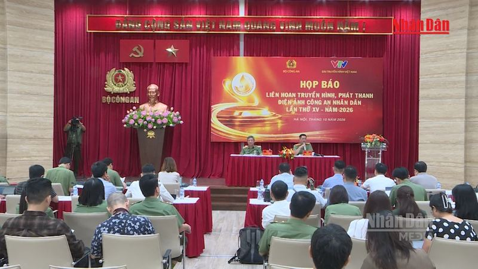
⚡[Video] Liên hoan Truyền hình, Phát thanh, Điện ảnh CAND khai mạc từ 22/10
Trung tướng Đỗ Triệu Phong, Cục trưởng Cục Truyền thông Công an nhân dân (Trưởng Ban tổ chức) cho biết: kỳ liên hoan lần này diễn ra trong bối cảnh đặc biệt, khi bộ máy được sắp xếp tinh gọn, địa bàn có nhiều thay đổi, c
⚡
Quy định tốc độ và khoảng cách giữa các xe trên cao tốc Phan Thiết-Dầu Giây
Facebook Twitter Lưu bài viết Bản in Copy link Cục Đường bộ Việt Nam vừa ban hành quyết định phê duyệt phương án tổ chức giao thông trong thời gian khai thác Dự án thành phần đầu tư xây dựng đoạn Phan Thiết-Dầu Giây thuộ
🔥
Bức tranh thị trường trái phiếu doanh nghiệp quý 3/2026: Nhìn vào nhóm bất động sản
Bức tranh thị trường trái phiếu doanh nghiệp quý 3/2026: Nhìn vào nhóm bất động sản Theo Hải Sơn | 13/10/2026 17:19 PM | Kinh doanh Theo dõi Cafebiz.vn trên Dù thị trường trái phiếu doanh nghiệp ghi nhận đà phục hồi nhẹ
🔥
Chủ tịch Quốc hội Trần Thanh Mẫn thăm Khu phát triển kinh tế - công nghệ Bắc Kinh
Sáng 13/10, trong khuôn khổ chuyến thăm chính thức Trung Quốc và đồng chủ trì Phiên họp lần thứ hai Ủy ban hợp tác giữa Quốc hội Việt Nam với Nhân đại toàn quốc Trung Quốc, Chủ tịch Quốc hội Trần Thanh Mẫn và đoàn đại bi
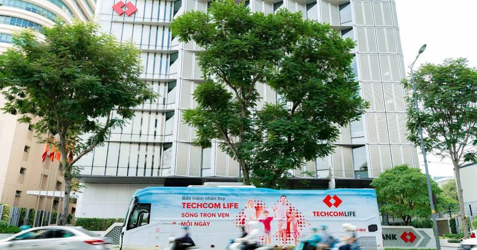
🔥Techcom Life hoàn tất tăng vốn lên 4.300 tỷ đồng thuộc top công ty bảo hiểm có vốn dẫn dầu tại Việt Nam
TIN MỚI Cột mốc này diễn ra trong bối cảnh doanh nghiệp ghi nhận tăng trưởng tích cực, duy trì vị thế dẫn đầu trên kênh phân phối bảo hiểm qua ngân hàng (bancassurance) và tiếp tục đầu tư mạnh vào công nghệ, dữ liệu và t
🔥
Mitsubishi chiếm 3/10 mẫu xe xăng dầu bán chạy nhất 3 quý đầu 2026, Xpander bán hơn 1.100 xe/tháng
Xpander tiếp tục là mẫu xe bán chạy nhất của Mitsubishi tại Việt Nam - Ảnh: Đại lý Mitsubishi có 3 mẫu xe lọt top 10 bán chạy nhất sau 9 tháng Theo số liệu từ Hiệp hội Các nhà sản xuất ô tô Việt Nam (VAMA), tổng doanh số
 🔥
🔥
Máy bay chiến đấu không người lái X-BAT Mỹ công nghệ VTOL, tầm bay 3.700km
Tên lửa RS-28 Sarmat Nga 'so găng’ tên lửa LGM-30G Minuteman III Mỹ Mach 23, tầm bắn 13000km Hải quân Mỹ và công ty Shield AI vừa công bố tổng cam kết đầu tư 400 triệu USD cho dự án X-BAT, máy bay chiến đấu không người l
 🔥
🔥
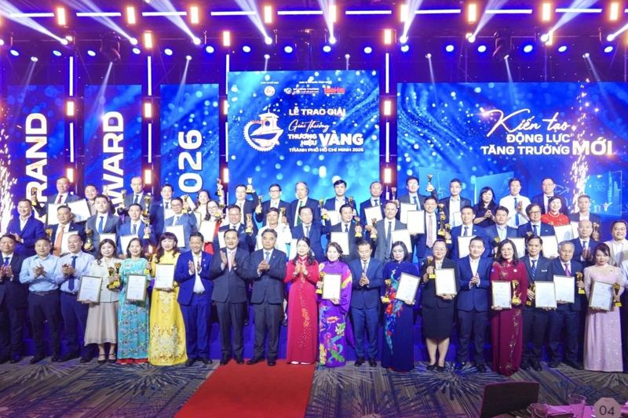
⚡
⚡
⚡
Doanh nghiệp đóng góp 73,6% tổng thu ngân sách, Đồng Tháp tạo thêm động lực tăng trưởng
Bí thư Tỉnh ủy Đồng Tháp Ngô Chí Cường nhấn mạnh vai trò của doanh nghiệp, doanh nhân trong thúc đẩy tăng trưởng, đổi mới công nghệ và phát triển kinh tế - xã hội của tỉnh - Ảnh: Nguyệt Ánh Chiều 13/10, tại buổi họp mặt
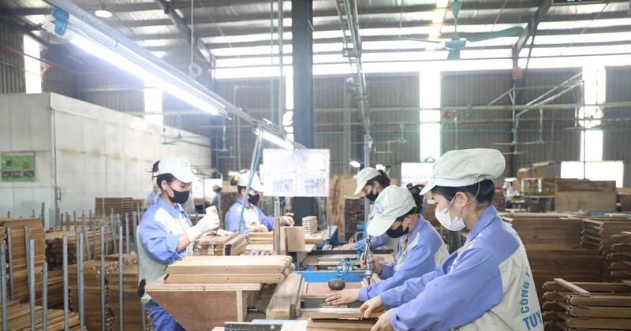
⚡
🔥
🔥
🔥
2 nhân viên ngân hàng 'tiếp tay' cho đường dây vận chuyển 52 triệu USD qua biên giới
2 nhân viên ngân hàng 'tiếp tay' cho đường dây vận chuyển 52 triệu USD qua biên giới Theo Hoàng An | 13/10/2026 14:49 PM | Xã hội Theo dõi Cafebiz.vn trên VIện Kiểm sát nhân dân thành phố Hà Nội truy tố 7 bị can trong vụ
🔥
Chủ tịch Quốc hội Trần Thanh Mẫn thăm Khu Phát triển Kinh tế-Công nghệ Bắc Kinh
Chủ tịch Quốc hội Trần Thanh Mẫn tham quan, tìm hiểu sản phẩm màn hình tương tác ứng dụng công nghệ AI trong các lĩnh vực tại Tập đoàn CVTE, Khu kinh tế Diệc Trang - Ảnh: TTXVN Chủ tịch Quốc hội Trần Thanh Mẫn và đoàn đã
🔥
🔥
Chủ tịch Quốc hội Trần Thanh Mẫn thăm Khu Phát triển Kinh tế - Công nghệ Bắc Kinh
Chủ tịch Quốc hội Trần Thanh Mẫn thăm Siêu nhà máy xe điện Xiaomi tại Khu kinh tế Diệc Trang. Ảnh: TTXVN Cùng đi có Phó Ủy viên trưởng Ủy ban Thường vụ Nhân đại toàn quốc Trung Quốc Vương Đông Minh. Chủ tịch Quốc hội Trầ
🔥
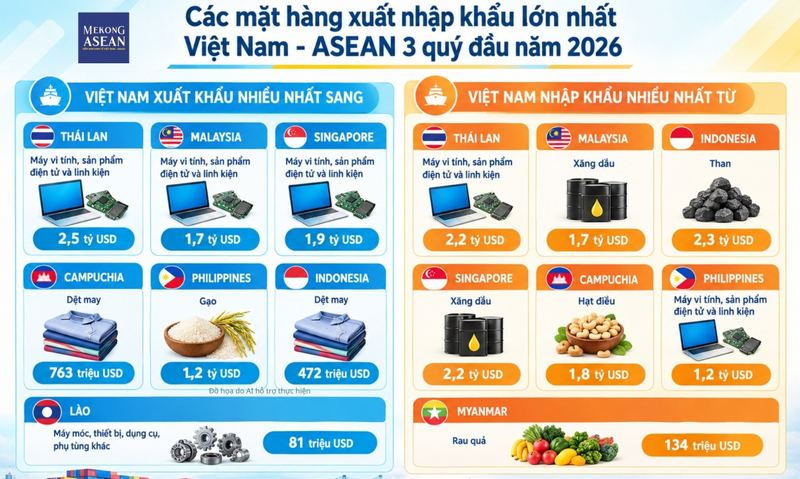
🔥 🔥
🔥
Ngân hàng tư nhân lớn nhất hệ thống vừa điều chỉnh lãi suất tiết kiệm, kỳ hạn 18 tháng dẫn đầu thị trường
TIN MỚI VPBank vừa tăng 0,8 điểm % lãi suất huy động trực tuyến tại hai kỳ hạn 15 và 18 tháng, đưa mức lãi suất cao nhất lên 7,9%/năm. Đáng chú ý, với mức lãi suất này, ngân hàng đang dẫn đầu thị trường ở kỳ hạn 18 tháng
 🔥
🔥
 🔥
🔥
 🔥
🔥
 🔥
🔥
⚡
⚡
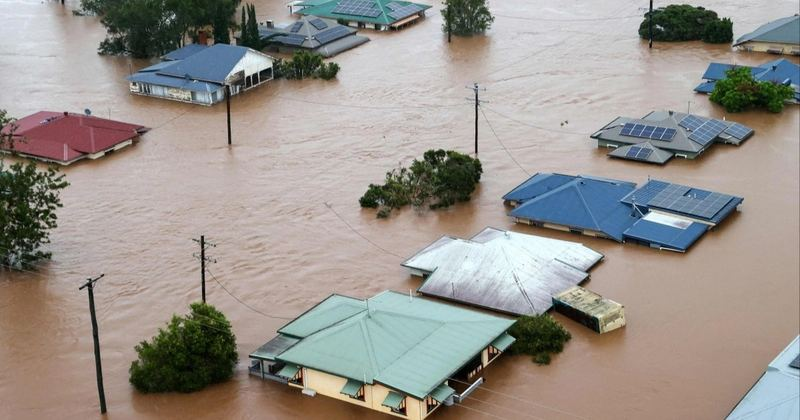
⚡
⚡
Trước thềm VIS 2026: Vận hội Việt Nam trước những dòng chảy mới của kinh tế toàn cầu
Trong bối cảnh kinh tế thế giới bước vào một chu kỳ tái định hình sâu rộng, cơ hội của Việt Nam không chỉ nằm ở khả năng đón nhận những dòng vốn, công nghệ hay chuỗi cung ứng đang dịch chuyển, mà còn ở năng lực chuyển hó
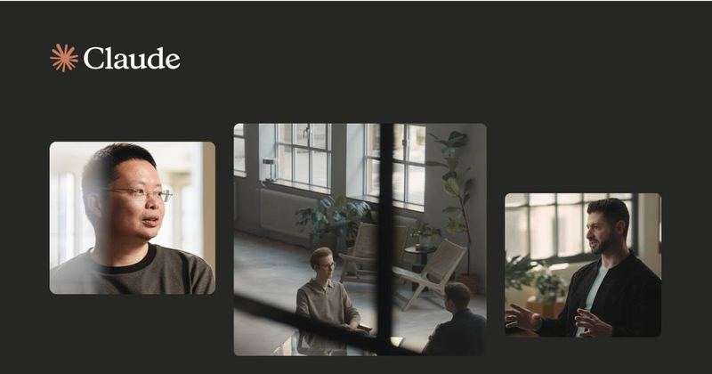
⚡Startup Việt bất ngờ nhận 'khoản vốn' 200 triệu đồng từ ông lớn AI Anthropic mà không mất 1% cổ phần nào
Startup Việt bất ngờ nhận 'khoản vốn' 200 triệu đồng từ ông lớn AI Anthropic mà không mất 1% cổ phần nào Thiên Minh | 13/10/2026 20:00 PM | Công nghệ Theo dõi Cafebiz.vn trên Thay vì bỏ ra hàng trăm triệu đồng chi phí hạ
⚡
⚡
⚡
⚡
⚡
⚡
Tổng thống Zelensky: Ukraine không nhận được bất kỳ dữ liệu tình báo nào trước khi tên lửa đạn đạo tấn công Kiev
Trong thông điệp đăng trên Telegram hôm 13/10, Tổng thống Volodymyr Zelensky cho biết, 5 tên lửa đạn đạo của Nga đã đánh trúng các cơ sở hạ tầng tại thủ đô Kiev. Theo nhà lãnh đạo Ukraine, các đối tác quốc tế đã không đư
🔥
Nữ kế toán 'không biết gì' vẫn ký 120 lệnh, 'tuồn' 30 triệu USD qua biên giới
Viện KSND TP.Hà Nội mới ban hành cáo trạng truy tố 7 bị can trong vụ án "vận chuyển trái phép tiền tệ qua biên giới" với số tiền lên tới cả ngàn tỉ đồng. Nữ kế toán ký 120 lệnh chuyển tiền qua biên giới Tài liệu truy tố
🔥
🔥
Phát hành trái phiếu doanh nghiệp tăng, ngân hàng và bất động sản chiếm ưu thế
Quý III/2026, phát hành trái phiếu doanh nghiệp đạt 172.000 tỷ đồng, tăng 9,7% so với cùng kỳ. Ngân hàng và bất động sản tiếp tục dẫn đầu về phát hành. Kỳ hạn bình quân tăng, trong khi tình hình thanh toán và thu hồi trá
🔥
Cuộc chuyện phiếm khiến ông Trump đòi hủy công nghệ tỷ đô trên tàu sân bay
Cuộc chuyện phiếm khiến ông Trump đòi hủy công nghệ tỷ đô trên tàu sân bay Ông Trump trò chuyện với một thủy thủ bí ẩn và quyết định hủy công nghệ phóng điện từ đắt đỏ trên tàu sân bay, quay lại với máy phóng hơi nước ki
🔥
Điện Biên phê duyệt, triển khai 350 dự án, mô hình hỗ trợ phát triển sản xuất từ nguồn vốn Chương trình mục tiêu quốc gia
Cụ thể, trong số 350 dự án, mô hình hỗ trợ phát triển sản xuất được phê duyệt triển khai có sự tham gia của 11.625 lượt hộ gia đình; tổng kinh phí thực hiện 350 dự án, mô hình là hơn 1.014,8 tỷ đồng. Trong đó, ngân sách
🔥
Xe máy điện 'ăn nắng thay cơm', đi làm mỗi ngày có thể không cần cắm sạc
Hai bên thân xe được bao phủ bởi những tấm pin mặt trời lớn, vừa tạo nên kiểu dáng khác biệt, vừa đóng vai trò cung cấp năng lượng - Ảnh: Otherlab Một chiếc xe máy điện có thể tự sạc khi đỗ ngoài trời, đủ chỗ cho hai ngư
 🔥
🔥
 🔥
🔥
Thị trường trái phiếu Mỹ căng thẳng trước giờ công bố lạm phát, lợi suất neo gần đỉnh 24 năm
TIN MỚI Các nhà giao dịch trái phiếu Mỹ đang hướng sự chú ý đến báo cáo chỉ số giá tiêu dùng (CPI) tháng 9 và bài phát biểu sắp tới của Chủ tịch Fed Kevin Warsh nhằm tìm kiếm tín hiệu về lộ trình tăng lãi suất của ngân h
 🔥
🔥
Việt Nam bước vào giai đoạn nhu cầu vốn tăng mạnh nhất nhiều năm, chuyên gia chỉ tên kênh dẫn vốn quan trọng thời gian tới
TIN MỚI Trong báo cáo mới nhất, S&I Ratings đánh giá môi trường lãi suất toàn cầu đang bước vào một giai đoạn mới khi Fed đảo chiều chính sách sau chu kỳ nới lỏng 2024-2025. Trong khi đó, Việt Nam vẫn duy trì mặt bằng lã
 🔥
🔥
⚡
⚡
Trước thềm VIS 2026: Kỳ vọng gì từ đối thoại Việt Nam - quốc tế về định chuẩn trong thời kỳ kinh tế xoay trục?
Doanh nghiệp Việt còn có thể cạnh tranh bằng lợi thế truyền thống trong bao lâu? Trong nhiều thập niên, một trong những lợi thế quan trọng của các nền kinh tế đang phát triển là khả năng tham gia chuỗi cung ứng toàn cầu
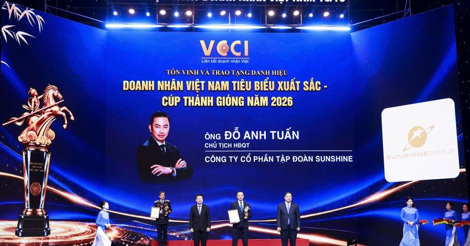
⚡
⚡
⚡
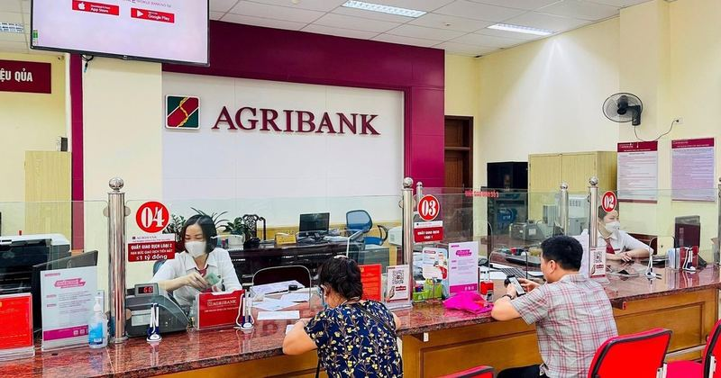
⚡Lãi suất ngày 13/10 tại Agribank, Vietcombank, BIDV, VietinBank, VPBank, MB, Techcombank, Sacombank, HDBank,...
Lãi suất ngày 13/10 tại Agribank, Vietcombank, BIDV, VietinBank, VPBank, MB, Techcombank, Sacombank, HDBank,... Theo Quang Hưng | 13/10/2026 19:45 PM | Kinh doanh Theo dõi Cafebiz.vn trên Khảo sát biểu lãi suất ngày 13/1
⚡
⚡
⚡
🔥
Hội Cựu chiến binh Việt Nam hưởng ứng phong trào thi đua phát triển kinh tế-xã hội vì mục tiêu tăng trưởng 2 con số
Phong trào được triển khai trên cơ sở Quyết định số 1181/QĐ-TTg ngày 1/7/2026 của Thủ tướng Chính phủ, nhằm thúc đẩy thi đua thực hiện thắng lợi các mục tiêu phát triển kinh tế-xã hội giai đoạn 2026–2030 theo Nghị quyết
🔥
🔥
Phó Thủ tướng Thường trực Phạm Gia Túc chủ trì phiên họp Ban Công tác liên ngành đối ngoại và hội nhập quốc tế về kinh tế và khoa học - công nghệ
Phó Thủ tướng Thường trực Phạm Gia Túc chủ trì phiên họp Ban Công tác liên ngành đối ngoại và hội nhập quốc tế về kinh tế và khoa học - công nghệ - Ảnh: chinhphu.vn/Phương Nguyên Ban Công tác liên ngành được thành lập th
🔥
Saigon Co.op khẳng định vị thế thương hiệu Việt với hai danh hiệu tiêu biểu
Bà Diệp Hồng Di, Phó Tổng Giám đốc Thường trực Saigon Co.op (áo dài đỏ), nhận danh hiệu Doanh nghiệp TPHCM tiêu biểu năm 2026. Ảnh: HOÀNG TRIỀU Nâng sức cạnh tranh hàng Việt từ hệ thống phân phối Từ mô hình kinh tế hợp t
 🔥
🔥
🔥
🔥
Thái Nguyên vượt mốc 8 tỷ USD vốn FDI, quyết tâm hoàn thành mục tiêu năm 2026
Facebook Twitter Lưu bài viết Bản in Copy link Trong 3 tháng cuối năm 2026, tỉnh Thái Nguyên phấn đấu thu hút vốn đầu tư nước ngoài (FDI) tăng thêm hơn 68 triệu USD, thu hút vốn đầu tư trong nước (DDI) với tổng vốn đăng
🔥
🔥
'Vua chuối' Việt Nam tay trắng làm nên cơ nghiệp 20 triệu USD/năm: Ngoài 70 tuổi vẫn dậy từ 5h sáng, tự nhận 'mình dở nên phải làm nhiều'
'Vua chuối' Việt Nam tay trắng làm nên cơ nghiệp 20 triệu USD/năm: Ngoài 70 tuổi vẫn dậy từ 5h sáng, tự nhận 'mình dở nên phải làm nhiều' Quảng Định | 13/10/2026 07:59 AM | Kinh doanh Theo dõi Cafebiz.vn trên Từ một than
🔥
Anh hùng Lao động Mai Kiều Liên: Nửa thế kỷ cùng khát vọng đưa doanh nghiệp Việt vươn ra thế giới
Gần trọn hành trình 50 năm của Vinamilk có dấu ấn của bà Mai Kiều Liên, người khởi đầu với vị trí kỹ sư ngành sữa, sau đó trở thành một trong những nữ doanh nhân có ảnh hưởng lớn của Việt Nam. Nhân Ngày Doanh nhân Việt N
 🔥
🔥
 🔥
🔥
 🔥
🔥
⚡
TP.HCM vinh danh 50 doanh nghiệp đạt Giải thưởng Thương hiệu Vàng năm 2026
Ông Nguyễn Lộc Hà - Ủy viên Ban Thường vụ Thành ủy, Phó chủ tịch thường trực UBND TP.HCM - Ảnh: QUANG ĐỊNH Tối 13-10, Ban tổ chức Giải thưởng Thương hiệu Vàng TP.HCM đã vinh danh 50 doanh nghiệp có thương hiệu đạt Giải t
⚡
Khi robot tung hoành chiến địa - Kỳ 4: Robot sói trên chiến tuyến rực lửa
“Robot sói” của Tập đoàn Công nghiệp Bắc Trung Quốc - Ảnh: China Daily Nhóm robot UGV bốn chân Trung Quốc có phân công nhiệm vụ rõ ràng. UGV đầu đàn phụ trách trinh sát và phát hiện, thu thập thông tin về mục tiêu rồi tr
⚡
⚡
Phó thủ tướng giao nghiên cứu phụ cấp cho viên chức cấp xã, thôn đội trưởng
Tại hội nghị, cử tri xã Thanh An nêu 7 ý kiến với 13 kiến nghị, tập trung vào những vấn đề thiết thực liên quan đến đời sống nhân dân , hoạt động của chính quyền cơ sở và định hướng phát triển kinh tế - xã hội địa phương
⚡
Thương hiệu Vàng TP.HCM: Doanh nghiệp giữ chữ tín để vượt sức ép cạnh tranh
Các đại biểu trao đổi tại sự kiện Thương hiệu Vàng TP.HCM - Ảnh: QUANG ĐỊNH Bên lề lễ trao giải Thương hiệu Vàng TP.HCM 2026 tối 13-10, lãnh đạo nhiều doanh nghiệp chia sẻ với Tuổi Trẻ về những thách thức trong quá trình
⚡
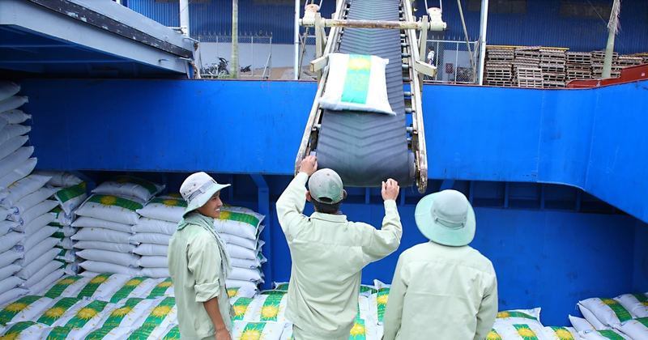
⚡
⚡
⚡
⚡
🔥
PROFIT500 - 10 năm nhìn lại và bức tranh lợi nhuận của doanh nghiệp Việt Nam
Trải qua một thập kỷ đầy biến động, nền kinh tế Việt Nam đã chứng kiến những bước chuyển mình mang tính lịch sử. Từ giai đoạn bứt phá của làn sóng đổi mới, sự bùng nổ của các chuỗi cung ứng toàn cầu, cho đến những “cơn đ
🔥
🔥
🔥
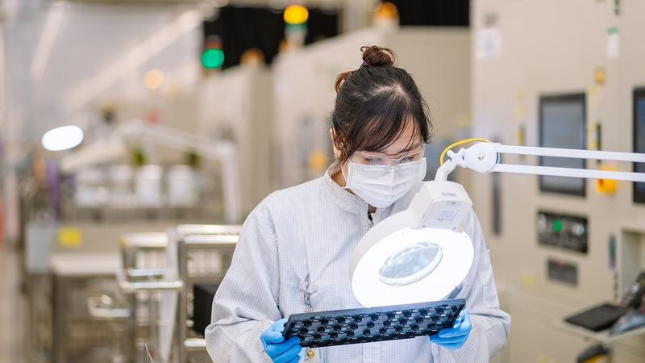
🔥
🔥
Không quân Ukraine lên tiếng về việc chậm trễ phát cảnh báo không kích ở Kiev
Theo báo Ukrainska Pravda, vào lúc 22h10 giờ địa phương ngày 12/10, quân Nga đã phóng 5 tên lửa đạn đạo tấn công thủ đô của Ukraine. Nhà chức trách Ukraine khẳng định hệ thống radar của họ đã phát hiện các tên lửa đạn đạ
🔥
Cần Thơ: Kinh tế tư nhân đóng góp 74% GRDP, cần lớn lên bằng số hóa-xanh hóa
Phó Chủ tịch UBND TP. Cần Thơ Vương Quốc Nam nhấn mạnh yêu cầu chuyển mạnh từ tư duy “quản lý” sang “phục vụ, kiến tạo phát triển”, đồng hành cùng doanh nghiệp mở rộng đầu tư, sản xuất, kinh doanh - Ảnh: chinhphu.vn/ Tru
🔥
Ngân hàng thanh lý hàng loạt ô tô giá rẻ, xe sang chưa đến 300 triệu, thậm chí có cả Rolls-Royce
Một chiếc Mercedes-Benz được rao bán với giá khởi điểm chỉ 280 triệu đồng - Ảnh chụp màn hình Ngân hàng thanh lý xe sang Thị trường ô tô thanh lý từ các ngân hàng đang xuất hiện nhiều mẫu xe với giá chào bán từ hơn 100 t
🔥
🔥
Điều phối thông minh, sân bay Tân Sơn Nhất và Nội Bài giúp hãng bay tiết kiệm hơn 3,7 triệu USD
Ứng dụng công nghệ điều phối A-CDM tại hai sân bay lớn giúp giảm thời gian máy bay lăn, góp phần tiết kiệm hơn 3,7 triệu USD chi phí nhiên liệu cho các hãng hàng không - Ảnh: ACV Thông tin được Tổng công ty Cảng hàng khô
🔥
🔥
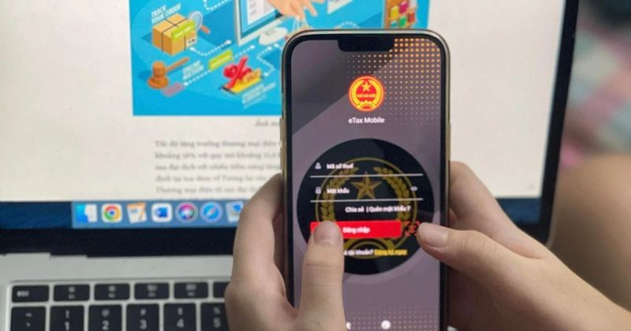
🔥
🔥
Chiến thuật "chạy nước rút" của Tổng thống Trump trước bầu cử giữa nhiệm kỳ
(Dân trí) - Tổng thống Donald Trump đang tìm cách ứng phó với những thách thức trước thềm cuộc bầu cử giữa nhiệm kỳ vào tháng 11. Tổng thống Donald Trump phát biểu tại mít tinh ở Youngstown, bang Ohio, Mỹ ngày 12/10 (Ảnh
🔥
🔥
🔥
Khai mạc chuỗi ba triển lãm quốc tế về cơ khí, bán dẫn và đóng gói tại Hà Nội
Mang thông điệp "Một điểm đến, ba triển lãm", sự kiện diễn ra từ ngày 13 đến hết ngày 15/10, quy tụ hơn 300 doanh nghiệp và thương hiệu trưng bày đến từ hơn 20 quốc gia và vùng lãnh thổ. Đây là lần đầu tiên ba triển lãm
🔥
Ông Trump: Ông Putin và ông Zelensky muốn đạt thỏa thuận chấm dứt xung đột
(Dân trí) - Tổng thống Mỹ cho biết hai nhà lãnh đạo Nga và Ukraine đều muốn đạt thỏa thuận, nhưng không biết thực hiện bằng cách nào. Tổng thống Nga Vladimir Putin và Tổng thống Ukraine Volodymyr Zelensky (Ảnh: AFP). Tro
🔥
AI trong điện ảnh: "Hiệu quả cao hơn không đồng nghĩa với công bằng hơn"
Facebook Twitter Lưu bài viết Bản in Copy link Tiết kiệm kinh phí và mở rộng biên giới sáng tác là hai điểm mạnh nổi bật nhất của AI tạo sinh (generative AI), đồng thời là lý do giúp thúc đẩy các ứng dụng và thử nghiệm m
🔥
🔥
TRONG KỶ NGUYÊN MỚI CỦA ĐẤT NƯỚC, ĐỘI NGŨ DOANH NHÂN VIỆT NAM CẦN TIẾP TỤC PHÁT HUY BẢN LĨNH, TRÍ TUỆ, TINH THẦN TỰ LỰC, TỰ CƯỜNG VÀ TRÁCH NHIỆM VỚI ĐẤT NƯỚC.
KIẾN TẠO NHỮNG GIÁ TRỊ MỚI CHO NỀN KINH TẾ Trong nhiều năm qua, nguồn lao động dồi dào, chi phí cạnh tranh và khả năng thu hút đầu tư sản xuất đã giúp Việt Nam mở rộng xuất khẩu, tạo việc làm và tham gia sâu hơn vào thươ
🔥
 🔥
🔥
🔥
 🔥
🔥
 🔥
🔥
 🔥
🔥
Khi những đại công trường đồng loạt sáng đèn, SSI gọi tên hai nhóm ngành sáng cửa, có thể tạo "sóng" năm sau
TIN MỚI Trong báo cáo chiến lược đầu tư năm 2027, SSI Research đánh giá khả quan đối với bất động sản khu công nghiệp và vật liệu xây dựng. Một nhóm đón dòng vốn mở rộng nhà máy, nhóm còn lại hưởng lợi khi các dự án hạ t
 🔥
🔥
⚡
⚡
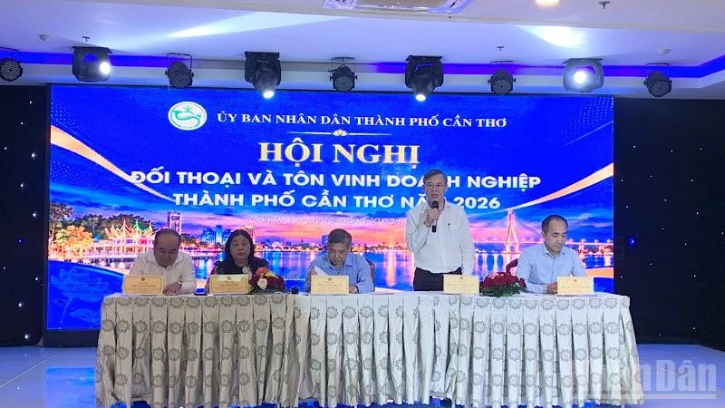
⚡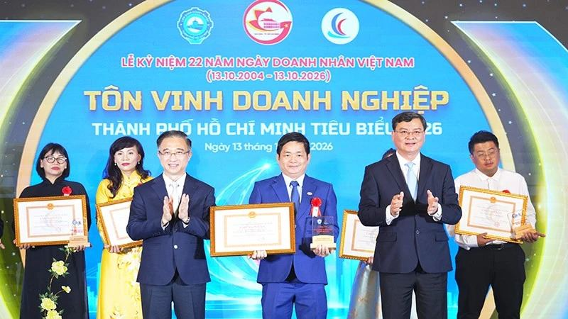
⚡Thành phố Hồ Chí Minh tôn vinh doanh nghiệp, doanh nhân tiêu biểu năm 2026
Dự buổi lễ, có đồng chí Đặng Minh Thông, Phó Bí thư Thành ủy Thành phố Hồ Chí Minh ; cùng các lãnh đạo Hội đồng nhân dân và Ủy ban nhân dân Thành phố. Đây là dịp đặc biệt nhằm ghi nhận và tôn vinh những nỗ lực, thành tựu
⚡
Siêu quần thể “Bà Nà Hills thứ 2” do Sun Group đầu tư nằm trên ngọn núi cao 1.000m dự kiến khởi công ngay trong tháng này
Siêu quần thể “Bà Nà Hills thứ 2” do Sun Group đầu tư nằm trên ngọn núi cao 1.000m dự kiến khởi công ngay trong tháng này Theo Dương Tâm | 13/10/2026 19:30 PM | Kinh doanh Theo dõi Cafebiz.vn trên Quần thể du lịch sinh t
⚡
Vietjet đưa 44 máy bay vào hệ thống có thể 'bắt bệnh' từ sớm trước khi nằm đất
Vietjet đưa 44 máy bay vào hệ thống có thể 'bắt bệnh' từ sớm trước khi nằm đất Theo Yên Chi | 13/10/2026 19:01 PM | Kinh doanh Theo dõi Cafebiz.vn trên Vietjet mở rộng hợp tác với tập đoàn công nghệ hàng không Mỹ RTX, đư
⚡
Phó Chủ tịch TP.HCM: Không để doanh nghiệp phải đi lại nhiều lần vì hướng dẫn thiếu nhất quán
Phó Chủ tịch TP.HCM: Không để doanh nghiệp phải đi lại nhiều lần vì hướng dẫn thiếu nhất quán Trần Chung | 13/10/2026 18:58 PM | Kinh tế vĩ mô Theo dõi Cafebiz.vn trên Phó Chủ tịch TP.HCM Nguyễn Công Vinh yêu cầu các sở,
⚡
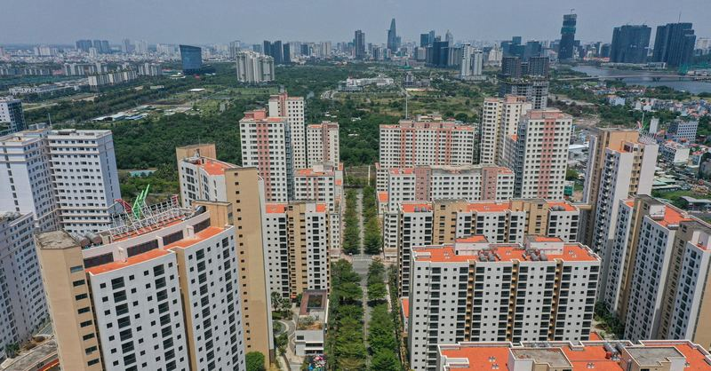
🔥Phó Thủ tướng thường trực: Nghiên cứu mua lại nhà thương mại chưa bán được để cho thuê
Sáng 13/10, Phó Thủ tướng thường trực Phạm Gia Túc - Trưởng Ban chỉ đạo Trung ương về chính sách nhà ở và thị trường bất động sản chủ trì phiên họp thứ nhất của Ban chỉ đạo. Khuyến khích đầu tư nhà ở đáp ứng khả năng chi
🔥
🔥
🔥
🔥
Gia đình bé trai 6 tuổi ở Hà Nội phản ánh con bị chấn thương sọ não khi học tại cơ sở can thiệp
Theo phản ánh của anh Nguyễn Đăng Hiếu (trú tại xã Sơn Đồng, TP Hà Nội), con trai anh tên M. (6 tuổi), mắc chứng tự kỷ và chậm nói. Gia đình gửi cháu theo học tại Trung tâm can thiệp Hy Vọng, khu vực ngã tư Sơn Đồng.
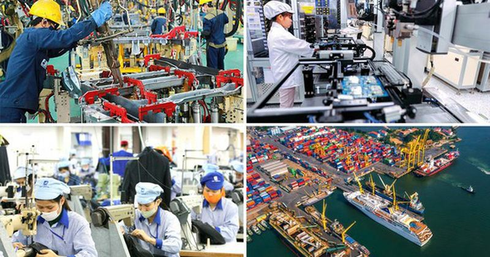
🔥Lập BCĐ Đề án xây dựng Nghị quyết thay thế Nghị quyết của Bộ Chính trị về nâng cao hiệu quả quản lý, phát huy các nguồn lực của nền kinh tế
Thành lập Ban Chỉ đạo Đề án xây dựng Nghị quyết thay thế Nghị quyết số 39-NQ/TW ngày 15/1/2019 của Bộ Chính trị về nâng cao hiệu quả quản lý, khai thác, sử dụng và phát huy các nguồn lực của nền kinh tế. Theo đó, Thủ tướ
🔥
Phát huy sức mạnh doanh nghiệp, tạo nền tảng mục tiêu tăng trưởng 2 con số
Các nghị quyết của Bộ Chính trị về kinh tế nhà nước, kinh tế tư nhân và kinh tế có vốn đầu tư nước ngoài xác lập định hướng phát huy nguồn lực của từng khu vực. Để góp phần thực hiện mục tiêu tăng trưởng 2 con số, doanh
🔥
Báo Mỹ: Arab Saudi điều tra lý do Patriot, THAAD bất lực trước tên lửa Houthi
Báo Mỹ: Arab Saudi điều tra lý do Patriot, THAAD bất lực trước tên lửa Houthi Arab Saudi mở cuộc điều tra nguyên nhân không chặn được tên lửa Houthi trong vụ tập kích làm 13 người chết ở sân bay King Khalid, theo AP. Hãn
🔥
Máy bay MH370 đang nằm ở đâu sau hơn 12 năm mất tích? Cuộc tìm kiếm 70 triệu USD có diễn biến mới
Máy bay MH370 đang nằm ở đâu sau hơn 12 năm mất tích? Cuộc tìm kiếm 70 triệu USD có diễn biến mới Theo Nguyệt Phạm | 13/10/2026 16:48 PM | Xã hội Theo dõi Cafebiz.vn trên Sau hơn 12 năm MH370 mất tích, cuộc tìm kiếm trị
🔥
🔥
Truy nã đặc biệt Giám đốc Trần Văn Xuân SN 1994, bất kỳ ai cũng có quyền bắt và giải ngay đến cơ quan công an
Truy nã đặc biệt Giám đốc Trần Văn Xuân SN 1994, bất kỳ ai cũng có quyền bắt và giải ngay đến cơ quan công an Theo Minh Tuệ | 13/10/2026 16:28 PM | Xã hội Theo dõi Cafebiz.vn trên Bằng thủ đoạn gọi điện dụ dỗ "chuyển đổi
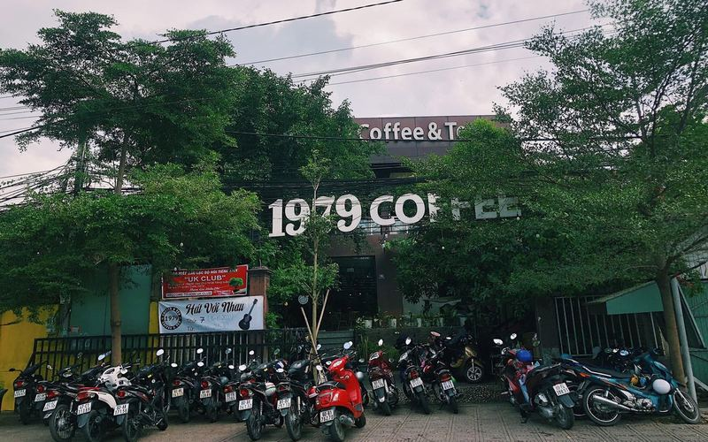
🔥Quán cà phê thông báo đóng cửa sau 10 năm, bỗng nổi tiếng theo cách không ai ngờ tới
Quán cà phê thông báo đóng cửa sau 10 năm, bỗng nổi tiếng theo cách không ai ngờ tới Phan Trang | 13/10/2026 16:13 PM | Kinh doanh Theo dõi Cafebiz.vn trên Một quán cà phê tại Đồng Nai bất ngờ được cộng đồng mạng chú ý s
🔥
🔥
🔥
🔥
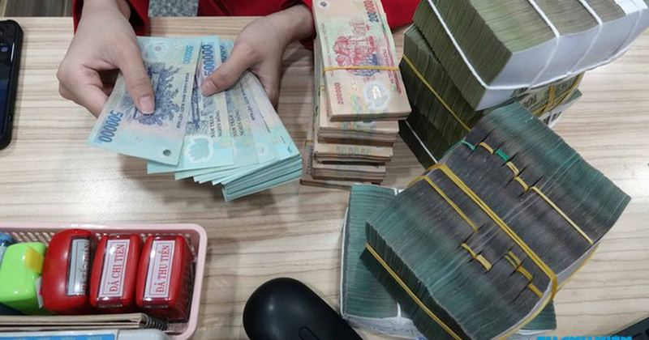
🔥Công an, thuế, cơ quan đăng ký kinh doanh họp gỡ khó cho 4.000 trường hợp bị mạo danh
Theo nguồn tin của Thanh Niên , cuộc họp do Cục Phát triển doanh nghiệp tư nhân và kinh tế tập thể (Bộ Tài chính) chủ trì, với dự tham dự của đại diện Viện Khoa học hình sự (Bộ Công an), Cục Cảnh sát quản lý hành chính v
🔥
Gia tộc tỷ phú dầu mỏ chuẩn bị đưa "đứa con" Getty Images ra tòa phá sản: Ông lớn ngành ảnh gục ngã sau ba cú đánh trong một năm
Gia tộc tỷ phú dầu mỏ chuẩn bị đưa "đứa con" Getty Images ra tòa phá sản: Ông lớn ngành ảnh gục ngã sau ba cú đánh trong một năm Pa Dun | 13/10/2026 15:38 PM | Sống Theo dõi Cafebiz.vn trên Đằng sau quyết định ấy là một
🔥
🔥
🔥
🔥
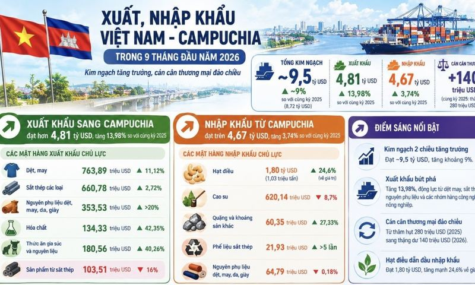
🔥
🔥
🔥
Chiến sự Ukraine 13/10: Kế hoạch thực sự của Nga cho năm 2026 đã lộ diện
(Dân trí) - Sau khi làm tiêu hao lực lượng dự bị của Ukraine tại Liman và Zaporizhia, quân đội Nga đang dồn sức tấn công khu vực tây bắc Donbass. Tổng thống Nga Vladimir Putin và Tổng thống Ukraine Volodymyr Zelensky đấu
🔥
🔥
Doanh nghiệp bất động sản gom gần 150.000 tỉ đồng trái phiếu: Bài toán kỳ hạn và áp lực chi phí tài chính
Mặt bằng lãi suất từ các đợt trái phiếu được các doanh nghiệp bất động sản phát hành dao động từ 11% đến 12,5%/năm, phản ánh sự chấp nhận mức chi phí tài chính cao hơn nhằm thiết lập nguồn vốn ổn định có kỳ hạn từ 2 đến
🔥
🔥
🔥
 🔥
🔥
 🔥
🔥
 🔥
🔥
 🔥
🔥
Ông Johnathan Hạnh Nguyễn: Đừng để khách tới cầm 5.000 USD, mang về..4.900 USD!
“Tôi đem tới nước bạn theo quy định là 5.000 USD tiền mặt, nhưng khi ra về tôi vẫn cầm theo 4.900 USD, thậm chí 4.950 USD vì không biết mua sắm món gì, và chỉ chi được vỏn vẹn… 50 USD!” Đây là câu chuyện được “vua hàng h
 🔥
🔥
Siêu dự án 1,7 tỷ USD của tỷ phú Phạm Nhật Vượng nằm tại chân đèo đẹp nhất Việt Nam, được mệnh danh là “Thiên hạ đệ nhất hùng quan” đón tin vui
TIN MỚI Ngày 8/10, Sở Xây dựng TP Đà Nẵng cho biết đã nhận được văn bản của CTCP Vinpearl về việc thông báo các căn nhà ở hình thành trong tương lai tại dự án Khu phức hợp du lịch và đô thị nghỉ dưỡng Làng Vân (Vinhomes
⚡
Đã đến lúc TỰ CỨU LẤY THẬN bằng 3 món rất quen nhưng không phải ai cũng biết dùng!
Đã đến lúc TỰ CỨU LẤY THẬN bằng 3 món rất quen nhưng không phải ai cũng biết dùng! Theo Ngọc Ái | 13/10/2026 20:55 PM | Sống Theo dõi Cafebiz.vn trên Thực phẩm cũng như "con dao hai lưỡi" với thận. Có những món càng ăn c
⚡
Hai biểu tượng nam tính tuổi 50: Lãng tử DiCaprio đã "xập xệ", Spider-man Tobey Maguire đạt đỉnh cao của sự độ lượng
Hai biểu tượng nam tính tuổi 50: Lãng tử DiCaprio đã "xập xệ", Spider-man Tobey Maguire đạt đỉnh cao của sự độ lượng Long Văn | 13/10/2026 20:35 PM | Sống Theo dõi Cafebiz.vn trên Ẩn sau những bức ảnh paparazzi mờ ảo ở b
 ⚡
⚡
Tồn kho bất động sản tăng, giá nhà vẫn vượt khả năng chi trả của đại đa số người dân
Tồn kho bất động sản tăng, giá nhà vẫn vượt khả năng chi trả của đại đa số người dân Theo Luân Dũng | 13/10/2026 20:16 PM | Kinh doanh Theo dõi Cafebiz.vn trên TPO - Cả nước hiện có 2.221 dự án bất động sản với tổng vốn
⚡
Kiểm toán Nhà nước ký quy chế phối hợp với Gia Lai, Khánh Hòa và Đắk Lắk
Facebook Twitter Lưu bài viết Bản in Copy link Ngày 13/10, Kiểm toán Nhà nước ký quy chế phối hợp công tác với Gia Lai, Khánh Hòa và Đắk Lắk nhằm nâng cao hiệu quả quản lý, giám sát và sử dụng các nguồn lực công. Hội ngh
⚡
⚡
⚡
⚡
Cơ chế thu hút chuyên gia, tài năng trẻ trong hoạt động đổi mới sáng tạo, khai thác dữ liệu
Cơ chế thu hút chuyên gia, tài năng trẻ trong hoạt động đổi mới sáng tạo Phó Thủ tướng Chính phủ Hồ Quốc Dũng thay mặt Chính phủ ký ban hành Nghị định số 386/2026/NĐ-CP ngày 12/10/2026 quy định cơ chế đột phá phát triển
⚡
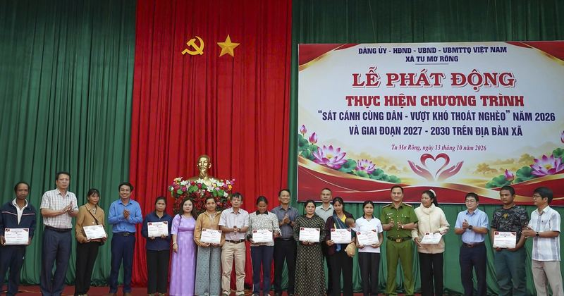
⚡
⚡
Techcombank được Ngân hàng Nhà nước chấp thuận tăng vốn thêm hơn 35.700 tỷ đồng, sẽ trở thành ngân hàng có vốn điều lệ cao nhất hệ thống
Techcombank được Ngân hàng Nhà nước chấp thuận tăng vốn thêm hơn 35.700 tỷ đồng, sẽ trở thành ngân hàng có vốn điều lệ cao nhất hệ thống Theo Lan Anh | 13/10/2026 19:15 PM | Kinh doanh Theo dõi Cafebiz.vn trên Sau khi tă
⚡
Ông Nguyễn Quốc Cường nói gì sau khi rời ghế Tổng Giám đốc Quốc Cường Gia Lai?
Ông Nguyễn Quốc Cường nói gì sau khi rời ghế Tổng Giám đốc Quốc Cường Gia Lai? Phan Trang | 13/10/2026 19:05 PM | Kinh doanh Theo dõi Cafebiz.vn trên Ông Nguyễn Quốc Cường vừa lên tiếng sau khi Quốc Cường Gia Lai công bố
⚡
⚡
⚡
Thủ tướng Lê Minh Hưng kiểm tra hai dự án trọng điểm tại Thành phố Hồ Chí Minh
Facebook Twitter Lưu bài viết Bản in Copy link Chiều 13/10, trong khuôn khổ chuyến công tác tại Thành phố Hồ Chí Minh, Thủ tướng Chính phủ Lê Minh Hưng đã tới kiểm tra thực địa Dự án Kênh Tham Lương-Bến Cát-Rạch Nước Lên
⚡
⚡
⚡
⚡
⚡
Trung Quốc tuyên tử hình 3 thành viên gia tộc tội phạm 'tàn bạo nhất miền bắc Myanmar'
Tòa án Trung Quốc tuyên án tử hình ba thành viên thuộc băng nhóm tội phạm họ Ngụy - Ảnh: CCTV Theo Hãng tin AFP, ngày 13-10, Tòa án nhân dân trung cấp thành phố Tuyền Châu, tỉnh Phúc Kiến đã tuyên án tử hình ba thành viê
⚡
⚡
⚡
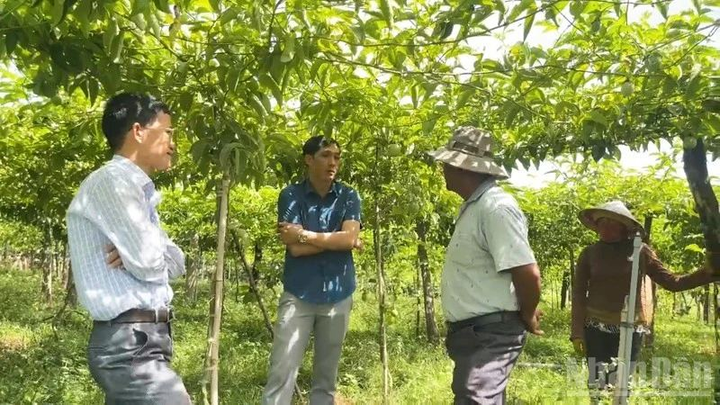
🔥
🔥
🔥
🔥
🔥
Phát hiện cảnh tượng lạ tại một trung tâm thương mại: Nhìn kỹ 5 lần mới hiểu chuyện gì đang xảy ra
Phát hiện cảnh tượng lạ tại một trung tâm thương mại: Nhìn kỹ 5 lần mới hiểu chuyện gì đang xảy ra Theo Chi Chi | 13/10/2026 16:55 PM | Công nghệ Theo dõi Cafebiz.vn trên Những người chứng kiến mô tả hai "cha con" thong
🔥
🔥
 🔥
🔥
🔥
🔥
🔥
Nhà nước, doanh nghiệp đồng hành xây dựng hệ sinh thái công nghiệp văn hóa
17 "sáng kiến" từ hạ tầng sáng tạo đến thương hiệu quốc tế. Công nghệ mở đường, doanh nghiệp tạo sức bật Các doanh nhân công nghiệp văn hóa chính là lực lượng cốt cán biến tài nguyên di sản, trí tuệ dân tộc thành tài sản
🔥
Mô hình doanh nghiệp một người: Lời giải cho bài toán thúc đẩy hộ kinh doanh lên doanh nghiệp
Câu chuyện chuyển đổi hộ kinh doanh thành doanh nghiệp đã được đề cập từ lâu nhưng vẫn chưa có giải pháp thực sự hiệu quả. Với những điểm mới dự thảo Luật Phát triển doanh nghiệp nhỏ và vừa đang được xây dựng, mô hình do
🔥
🔥
Thủ tướng Lê Minh Hưng dự Lễ khai khóa năm 2026 của Đại học Quốc gia Thành phố Hồ Chí Minh
Cùng dự có đồng chí Trần Lưu Quang, Ủy viên Bộ Chính trị, Bí thư Thành ủy Thành phố Hồ Chí Minh; lãnh đạo một số bộ, ngành, cơ quan Trung ương. Trước khi diễn ra Lễ khai khóa, Thủ tướng Chính phủ đã tham quan Triển lãm t
🔥
🔥
Cao tốc Phan Thiết - Dầu Giây được chạy tối đa 120km/h, rõ khoảng cách an toàn
Cục Đường bộ Việt Nam vừa ban hành quyết định phê duyệt phương án tổ chức giao thông trong thời gian khai thác cao tốc Phan Thiết - Dầu Giây, thuộc dự án cao tốc Bắc - Nam phía Đông giai đoạn 2017-2020. Tuyến đường dài 9
🔥
Tài chính doanh nghiệp 24/7: FPT hợp tác phát triển AI, Hòa Phát tăng sản lượng, Kinh Bắc báo lãi quý III tăng mạnh
Bản tin Tài chính doanh nghiệp 24/7 ngày 13/10 ghi nhận hợp tác giữa FPT và NAVER Cloud, sản lượng bán hàng tăng của Hòa Phát cùng kết quả kinh doanh quý III của Kinh Bắc và ELCOM. Các hoạt động tăng vốn, huy động vốn, đ
 🔥
🔥
12 dự án Mường Thanh thừa hơn 18.000 căn hộ: Chủ đầu tư phải nộp bao nhiêu tiền để xử lý sai phạm?
TIN MỚI Theo dự thảo nghị quyết của HĐND TP Hà Nội về cơ chế đặc thù xử lý vi phạm đất đai, trật tự xây dựng tại 12 dự án liên quan ông Lê Thanh Thản, thành phố đề xuất quy định về nghĩa vụ tài chính và trách nhiệm khắc
🔥
🔥
 🔥
🔥
Ngày 13/10, giá bạc giảm, thị trường theo dõi vùng hỗ trợ 58,5-59,69 USD/ounce
Thị trường bạc trong nước diễn biến cùng chiều với thị trường thế giới khi nhiều doanh nghiệp điều chỉnh giảm giá ở cả 2 chiều mua-bán. Cụ thể, tại thời điểm 8 giờ 55 phút sáng 13/10, theo Vietnam Metals Exchange (VME),
🔥
🔥
 🔥
🔥
 🔥
🔥
Khi hợp đồng 40 năm kết thúc, Trung Quốc xử lý ra sao với đất thương mại?
(Dân trí) - Nhiều hợp đồng thuê đất thương mại ở Trung Quốc sẽ hết hạn trong vài năm tới, làm dấy lên lo ngại về giá trị tài sản cũng như ảnh hưởng đến quyền và lợi ích hợp pháp của người sử dụng. Quảng Châu và Thượng Hả
 🔥
🔥
 🔥
🔥
[Video] 100% bến xe loại 1 ứng dụng công nghệ thanh toán không dùng tiền mặt
Theo dự thảo của UBND thành phố Hà Nội, các điểm trông giữ ô tô phải áp dụng thanh toán điện tử không dừng, ưu tiên sử dụng tài khoản giao thông; đối với xe máy, triển khai thanh toán qua mã QR hoặc các phương thức điện
 🔥
🔥
Siêu đường sắt cao tốc 250 km/h, vốn đầu tư 174.000 tỷ đồng chạy xuyên khu vực đóng băng lâu năm, mùa đông có thể lạnh tới -40°C
TIN MỚI Ngày 28/9/2026, tuyến đường sắt cao tốc Cáp Nhĩ Tân – Y Xuân tại tỉnh Hắc Long Giang, Đông Bắc Trung Quốc đã chính thức vận hành, rút ngắn hành trình giữa hai thành phố từ khoảng 7 giờ xuống chưa đầy 2 giờ. Theo
 🔥
🔥
Từng ôm 20 tấn cà phê tồn kho giữa đại dịch, cầm cố nhà, cho thuê xe để vượt khó, nữ CEO Việt kể chuyện bỏ lương 3.000 USD để khởi nghiệp và giành giải thưởng cà phê quốc tế danh giá tại Pháp
TIN MỚI Trước khi đại dịch ập đến, việc kinh doanh của nữ doanh nhân đến từ Đắk Lắk từng khởi đầu thuận lợi đến mức chính chị cũng bất ngờ. Doanh nghiệp vừa thành lập đã đưa cà phê vào hệ thống siêu thị Tops tại Thái Lan
⚡
⚡
Thủ tướng kiểm tra dự án hạ tầng thoát nước và chống ngập trọng điểm tại TPHCM
Thủ tướng Lê Minh Hưng đã đến kiểm tra dự án xây dựng hạ tầng và cải tạo môi trường kênh Tham Lương - Bến Cát - Rạch Nước Lên và dự án chống ngập do triều khu vực TPHCM có xét đến yếu tố biến đổi khí hậu. Dự án chống ngậ
⚡
⚡
⚡
⚡
⚡
⚡
Ông Phạm Nhật Minh Hoàng: Đóng 100 đồng mỗi cuốc xe, tài xế Green SM được bảo hiểm gấp 1.250 lần
Ông Phạm Nhật Minh Hoàng: Đóng 100 đồng mỗi cuốc xe, tài xế Green SM được bảo hiểm gấp 1.250 lần Theo Khánh Vy | 13/10/2026 18:44 PM | Kinh doanh Theo dõi Cafebiz.vn trên "Sắp tới, chúng tôi sẽ công bố thêm nhiều chính s
🔥
Đại học Quốc gia TP.HCM nhận gói tài trợ nghiên cứu AI trị giá 12 tỷ đồng
Facebook Twitter Lưu bài viết Bản in Copy link Ngày 13/10 tại Lễ Khai khóa - 2026 của Đại học Quốc gia Thành phố Hồ Chí Minh, ông Lê Hồng Minh, Chủ tịch Hội đồng quản trị VNG, đã trao tặng gói tài nguyên GPU trị giá 12 t
🔥
🔥
🔥
Xét xử vụ tai nạn làm chết nữ sinh ở Vĩnh Long: Tranh luận gay gắt việc không cấp cứu nạn nhân
Chiều 13/10, phiên tòa sơ thẩm xét xử bị cáo Nguyễn Văn Bảo Trung (tài xế xe tải trong vụ tai nạn giao thông ngày 4/9/2024 làm nữ sinh Nguyễn Ngọc Bảo Trân - 14 tuổi tử vong) tiếp tục phần tranh luận. Trong đó, chủ yếu c
🔥
🔥
Chi nhánh công ty ngoại ngữ Apax của Shark Thủy tại TP.HCM nợ thuế hơn 16,5 tỉ đồng
Shark Thủy thời điểm chưa bị bắt - Ảnh: Egroup Nợ thuế khủng và không còn hoạt động tại địa chỉ đã đăng ký Theo danh sách Thuế cơ sở 3 - TP.HCM công bố, Chi nhánh Công ty cổ phần Anh ngữ Apax, ngành nghề chính là giáo dụ
🔥
🔥
🔥
Siêu quần thể “Bà Nà Hills thứ 2” do Sun Group đầu tư nằm trên ngọn núi cao 1.000m dự kiến khởi công ngay trong tháng này
TIN MỚI Sáng 13/10/2026, UBND tỉnh Quảng Trị tổ chức buổi làm việc với các sở, ngành, địa phương và đơn vị liên quan để rà soát tiến độ triển khai các dự án của Công ty Cổ phần Tập đoàn Mặt Trời (Sun Group) trên địa bàn
🔥
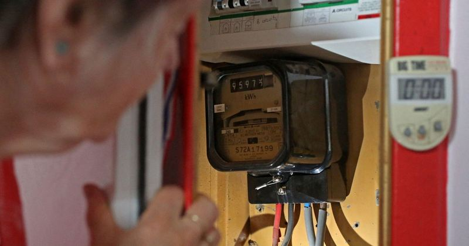
🔥Tiền điện lên tới gần 5 triệu đồng mỗi tháng, nạn trộm cắp điện và khí đốt tại một quốc gia châu Âu tăng mạnh lên hơn 21.300 vụ
Tiền điện lên tới gần 5 triệu đồng mỗi tháng, nạn trộm cắp điện và khí đốt tại một quốc gia châu Âu tăng mạnh lên hơn 21.300 vụ Theo Y Vân | 13/10/2026 15:40 PM | Xã hội Theo dõi Cafebiz.vn trên Ngày càng nhiều hộ gia đì
🔥
Những bài học không có trong sách giáo khoa tại The NextX 2026: Từ ý tưởng AI đến bản lĩnh kiến tạo tương lai
Nằm trong khuôn khổ Chương trình Kiến tạo Tư duy và Bản lĩnh Lãnh đạo cho Thế hệ Kế cận, The NextX 2026 được Techcombank thiết kế riêng cho thế hệ trẻ trong các gia đình khách hàng hội viên Techcombank Private và Priorit
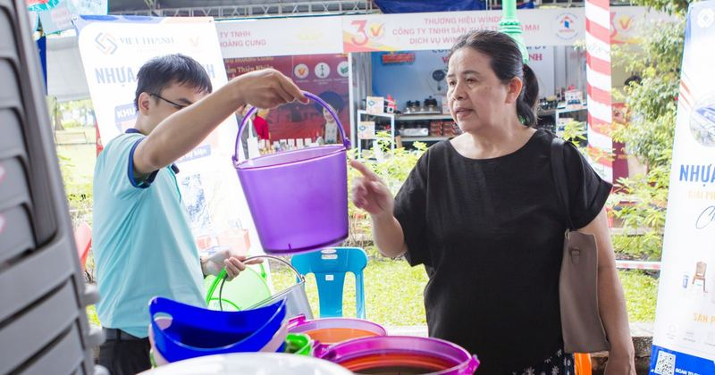
🔥
🔥
🔥
🔥
🔥
🔥
🔥
🔥
Giàu trên sổ đỏ, thiếu tiền lúc biến cố: Lỗ hổng thừa kế nhiều gia đình Việt đang bỏ qua
TIN MỚI Lấp đầy khoảng trống chuyển giao Hàng chục nghìn tỷ USD tài sản đang được chuyển giao giữa các thế hệ tại Mỹ, trong khi McKinsey ước tính khoảng 5.800 tỷ USD tại châu Á có thể được chuyển giao đến năm 2030. Với c
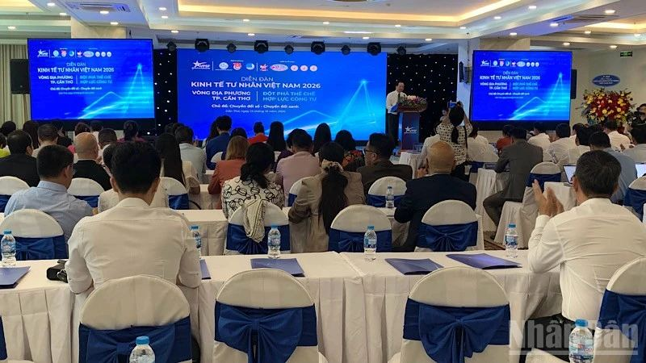
🔥Thúc đẩy chuyển đổi số, chuyển đổi xanh tại Diễn đàn kinh tế tư nhân Việt Nam 2026
Diễn đàn thu hút lãnh đạo địa phương, giới chuyên gia cùng đông đảo cộng đồng doanh nghiệp khu vực Đồng bằng sông Cửu Long. Diễn đàn đánh dấu điểm dừng chân cuối cùng trong chuỗi đối thoại tại 34 tỉnh, thành phố, chuyển
🔥
🔥
Bộ trưởng Tài chính: Khơi thông nguồn lực, đồng hành cùng doanh nghiệp phát triển
Bộ trưởng Bộ Tài chính Ngô Văn Tuấn. Ảnh: quochoi.vn. Trong thư chúc mừng, Bộ trưởng Ngô Văn Tuấn ghi nhận và đánh giá cao những đóng góp quan trọng của cộng đồng doanh nghiệp, doanh nhân đối với sự phát triển kinh tế -
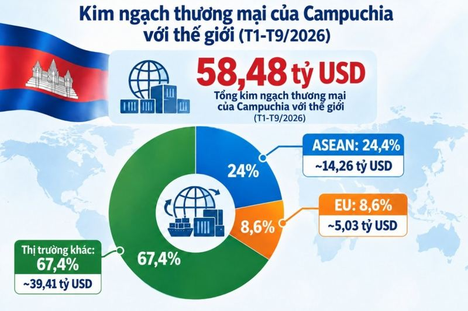
🔥
🔥
🔥
🔥
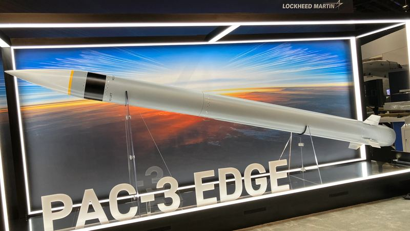
🔥
🔥
🔥
🔥
🔥
🔥
 🔥
🔥
🔥
Houthi cảnh báo đáp trả nếu Mỹ quyết định tham gia không kích cùng Ảrập Xêút
Theo Al Jazeera, giới chức Houthi ngày 12/10 đã cảnh báo về những động thái đáp trả nếu chính quyền Mỹ can thiệp vào các hoạt động quân sự chống lại lực lượng này. "Nếu Mỹ tham gia vào chiến dịch không kích của Ảrập Xêút
🔥
Chủ tịch Quốc hội Trần Thanh Mẫn hội đàm với Ủy viên trưởng Nhân đại toàn quốc Trung Quốc Triệu Lạc Tế
Chủ tịch Quốc hội Trần Thanh Mẫn và Ủy viên trưởng Nhân đại toàn quốc Trung Quốc Triệu Lạc Tế. Ảnh: TTXVN Nhằm tiếp tục làm sâu sắc quan hệ hai nước thời gian tới, Chủ tịch Quốc hội Trần Thanh Mẫn và Ủy viên trưởng Triệu
 🔥
🔥
 🔥
🔥
 🔥
🔥
 🔥
🔥
 🔥
🔥
 🔥
🔥
Gần 300 hộ dân trên "đất vàng" ở Hà Nội được đưa ra khỏi quy hoạch dự án
(Dân trí) - Theo lãnh đạo phường Bạch Mai (Hà Nội), gần 300 hộ dân trong phạm vi nghiên cứu dự án Công viên Võ Thị Sáu đã được đưa ra khỏi quy hoạch dự kiến. Phường Bạch Mai (Hà Nội) vừa tổ chức hội nghị lấy ý kiến tổ ch
 🔥
🔥
 🔥
🔥
 🔥
🔥
 🔥
🔥
Tên lửa RS-28 Sarmat Nga 'so găng’ tên lửa LGM-30G Minuteman III Mỹ Mach 23, tầm bắn 13000km
Hai tên lửa đạn đạo liên lục địa (ICBM - Intercontinental Ballistic Missile) mạnh nhất của Mỹ và Nga, ICBM LGM-30G Minuteman III và ICBM RS-28 Sarmat (được phương Tây gọi là Satan II), đang định hình cục diện răn đe chiế
 🔥
🔥
Chủ tịch công ty “pin khổng lồ” GG Power tiết lộ hợp đồng triệu đô đầu tiên khi vừa mới thành lập, từng “vỡ trận” phải tự làm thầu xây nhà máy ở Hưng Yên
TIN MỚI Tháng 4/2026, một nhà máy sản xuất BESS - pin lưu trữ năng lượng có công suất thiết kế 5 GWh/năm vừa đi vào hoạt động tại Hưng Yên. BESS có thể hình dung như những "cục pin khổng lồ", từ dạng tủ đến container, có
 🔥
🔥
 🔥
🔥
Lộ diện mô hình tàu điện đô thị tốc độ 110 km/h của tỷ phú Trần Bá Dương tại Việt Nam, có thể chở 1.000 hành khách mỗi chuyến
TIN MỚI Đây là dòng tàu được sản xuất cho hệ thống đường sắt phục vụ thủ đô Wellington, New Zealand, chuyên đưa đón người dân giữa trung tâm thành phố và các khu vực ngoại ô. Theo tài liệu kỹ thuật được giới thiệu tại tr
 🔥
🔥
Diễn biến mới nhất tại tuyến metro hơn 60.000 tỷ đồng, nối thẳng thành phố giàu nhất Việt Nam tới siêu dự án 16 tỷ USD chưa từng có trong lịch sử
TIN MỚI Chiều 12/10, UBND phường Long Hưng phối hợp với Trung tâm Phát triển quỹ đất chi nhánh Biên Hòa tổ chức đối thoại với các hộ dân về dự thảo phương án bồi thường, hỗ trợ khi Nhà nước thu hồi đất để thực hiện dự án
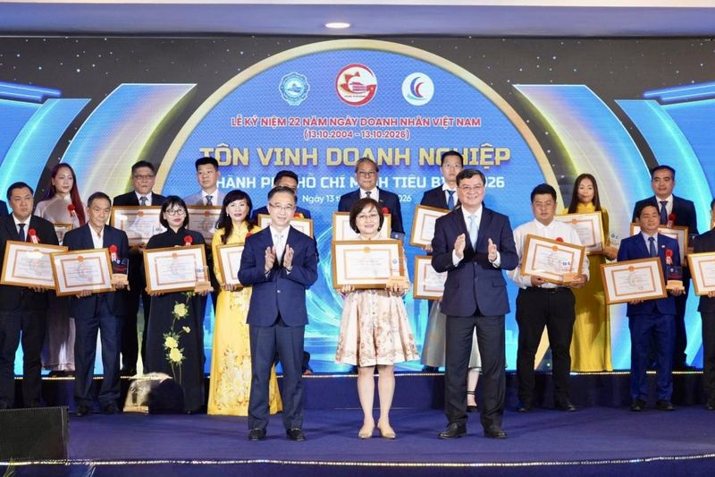
⚡TP. Hồ Chí Minh vinh danh 100 doanh nghiệp đóng góp ngân sách hơn 41.600 tỷ đồng
Chiều ngày 13/10, tại lễ kỷ niệm 22 năm ngày Doanh nhân Việt Nam do Liên đoàn Doanh nghiệp TP. Hồ Chí Minh (HUBA) tổ chức, 100 doanh nghiệp và 96 doanh nhân được UBND TP. Hồ Chí Minh công nhận danh hiệu tiêu biểu năm 202
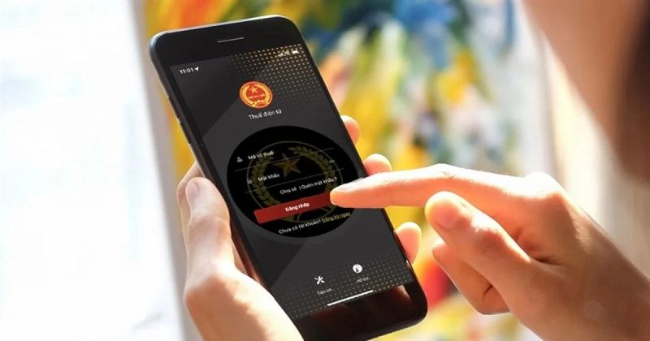
⚡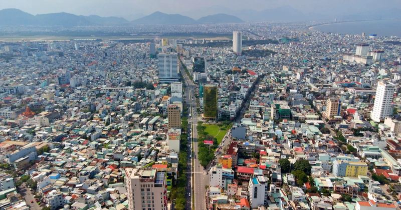
⚡
⚡
COSTI-90: Năm tiểu ban chuyên môn ASEAN họp phiên đầu tiên theo cơ cấu mới
Ngày 13/10, tại Đà Nẵng, 5 tiểu ban chuyên môn của Ủy ban Khoa học, Công nghệ và Đổi mới sáng tạo ASEAN (COSTI) đã tổ chức phiên họp lần thứ nhất theo cơ cấu tổ chức mới, đánh dấu bước chuyển trong cơ chế điều phối hợp t
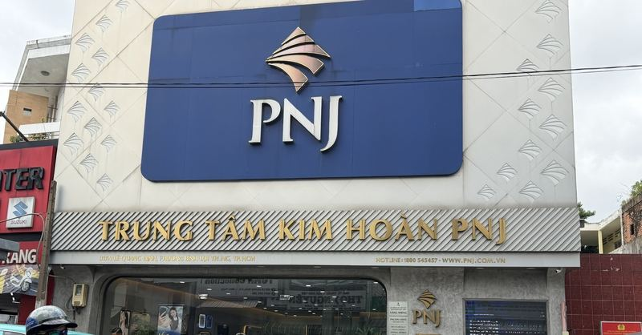
⚡
⚡
⚡
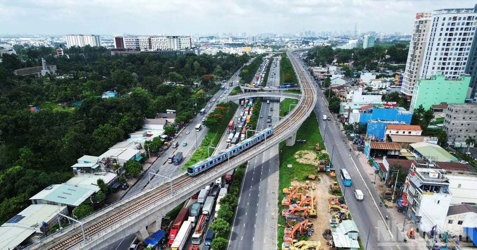
⚡TOD: Từ gia tăng giá trị bất động sản đến nâng cao năng suất đô thị Thành phố Hồ Chí Minh
Đó là chia sẻ của bà Lê Hoàng Lan Như Ngọc, Giám đốc cấp cao, Trưởng bộ phận tư vấn chiến lược, Cushman & Wakefield Việt Nam khi trao đổi với báo chí về nội dung TOD tại Thành phố Hồ Chí Minh. Quan sát sau khi tuyến metr
⚡
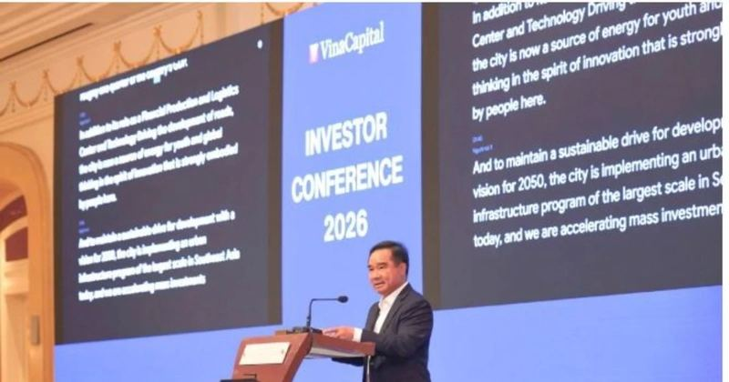
⚡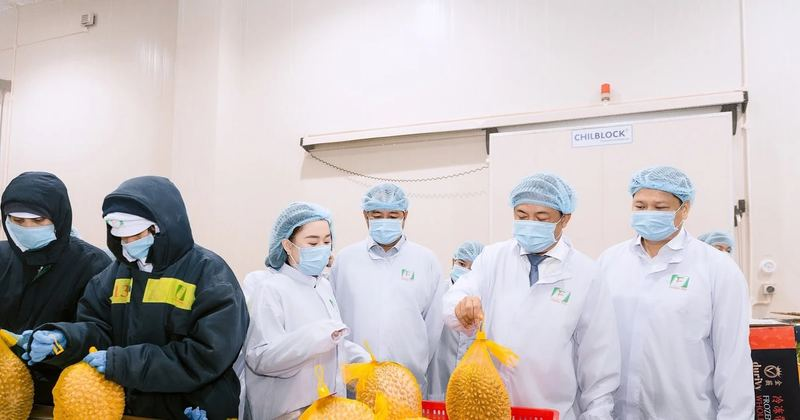
⚡
⚡
⚡
⚡
⚡
Quy chế hoạt động của BCĐ về chính sách nhà ở và thị trường bất động sản
Quy chế tổ chức và hoạt động của Ban Chỉ đạo Trung ương về chính sách nhà ở và thị trường bất động sản Quy chế này quy định về nguyên tắc làm việc, nhiệm vụ, quyền hạn, chế độ làm việc và quan hệ phối hợp công tác của Ba
 ⚡
⚡
⚡
Shark Bình lừa đảo 'số tiền đặc biệt lớn', bỏ ngoài sổ sách 45 tỉ và trốn thuế 38 tỉ
Shark Bình bị đề nghị truy tố thêm 3 tội danh - Ảnh: Shark Tank Việt Nam Cơ quan Cảnh sát điều tra Công an TP Hà Nội vừa ban hành kết luận điều tra, đề nghị truy tố ông Nguyễn Hòa Bình (45 tuổi), chủ tịch HĐQT Công
⚡
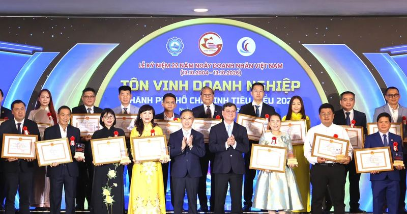
⚡
⚡
Tồn kho bất động sản tăng, giá nhà vẫn vượt khả năng chi trả của đại đa số người dân
TIN MỚI Sáng 13/10, tại trụ sở Chính phủ, Phó Thủ tướng Thường trực Phạm Gia Túc, Trưởng Ban Chỉ đạo Trung ương về chính sách nhà ở và thị trường bất động sản chủ trì phiên họp thứ nhất của Ban Chỉ đạo sau khi được kiện
⚡
Sao chép game 'Con đường tơ lụa' để kiếm tiền, thanh niên 26 tuổi bị khởi tố
Cơ quan điều tra đã làm rõ hành vi sao chép, chỉnh sửa và tổ chức vận hành trái phép trò chơi điện tử có bản quyền trên không gian mạng của Huỳnh Viết Thành (26 tuổi, trú tại xã Phan Rí Cửa, tỉnh Lâm Đồng), thu lợi bất c
⚡
Xây dựng y học cổ truyền thành bộ phận quan trọng của hệ thống y tế quốc gia
Xây dựng y học cổ truyền thành bộ phận quan trọng của hệ thống y tế quốc gia. Mục tiêu của Chiến lược nhằm phát triển nền y học cổ truyền Việt Nam toàn diện, hiện đại, khoa học và hội nhập quốc tế; xây dựng y học cổ truy
⚡
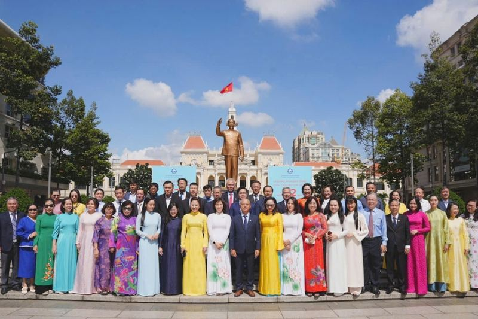
⚡Doanh nhân, doanh nghiệp tiêu biểu TP. Hồ Chí Minh dâng hoa Chủ tịch Hồ Chí Minh
Sáng ngày 13/10/2026, nhân dịp kỷ niệm 81 năm Ngày Chủ tịch Hồ Chí Minh gửi thư cho giới Công Thương Việt Nam (13/10/1945 – 13/10/2026) và kỷ niệm 22 năm Ngày Doanh nhân Việt Nam (13/10/2004 – 13/10/2026), đoàn đại biểu
🔥
🔥
🔥
🔥
Thủ tướng Lê Minh Hưng: Đại học Quốc gia TPHCM phải thể hiện quyết tâm cao hơn với những khát vọng lớn hơn
Cùng tham dự buổi lễ có đồng chí Trần Lưu Quang, Ủy viên Bộ Chính trị, Bí thư Thành ủy TPHCM; các Ủy viên Trung ương Đảng: Bộ trưởng Bộ Khoa học và Công nghệ Vũ Hải Quân, Chủ tịch UBND TPHCM Nguyễn Văn Được, Giám đốc ĐHQ
🔥
Chứng khoán ngày 13/10: VN-Index giảm nhẹ, thanh khoản toàn thị trường suy giảm
Thanh khoản toàn thị trường giảm so với phiên trước đó, tổng khối lượng giao dịch 3 sàn đạt hơn 632 triệu cổ phiếu, tương ứng tổng giá trị giao dịch đạt hơn 14.366 tỷ đồng. Nhà đầu tư nước ngoài tiếp tục bán ròng trên cả
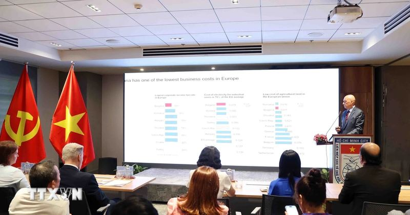
🔥Tạo xung lực mới cho hợp tác kinh tế giữa TP Hồ Chí Minh và các đối tác Đông Âu
Facebook Twitter Lưu bài viết Bản in Copy link Ngày 13/10, tại Thành phố Hồ Chí Minh, Liên hiệp các tổ chức hữu nghị Thành phố Hồ Chí Minh (HUFO) tổ chức gặp mặt nhân Ngày Doanh nhân Việt Nam (13/10) và trao đổi thúc đẩy
🔥
Thành lập Ban Chỉ đạo Trung ương thực hiện Chương trình mục tiêu quốc gia giai đoạn 2026-2035
Facebook Twitter Lưu bài viết Bản in Copy link Thủ tướng Chính phủ Lê Minh Hưng vừa ký Quyết định số 1966/QĐ-TTg ngày 12/10/2026 về việc thành lập Ban Chỉ đạo Trung ương thực hiện Chương trình mục tiêu quốc gia phát triể
🔥
🔥
🔥
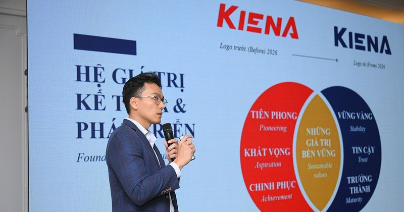
🔥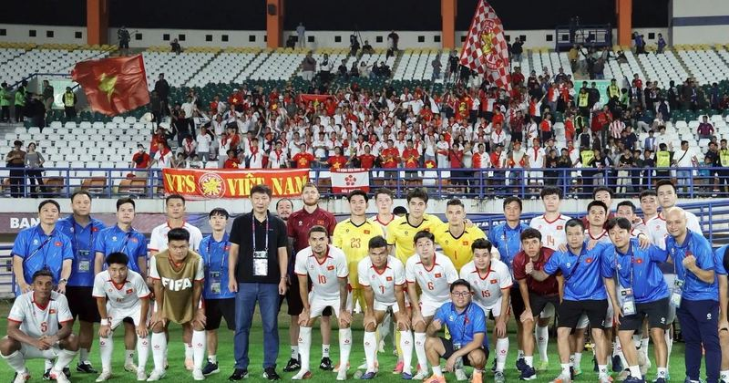
🔥
🔥
Một cổ phiếu ngân hàng được tự doanh CTCK "gom" ròng gần 200 tỷ đồng phiên 13/10
TIN MỚI Sau 04 phiên liên tiếp giảm điểm, VN-Index tiếp tục chịu áp lực điều chỉnh trong phiên 13/10. Áp lực bán vẫn gia tăng khá mạnh ở nhiều cổ phiếu, theo đó VN-Index kết phiên giảm nhẹ 1,56 điểm (-0,09%) về mức 1.719
🔥
🔥
Dàn vũ khí Cảnh sát Việt Nam mang đi thực hiện nhiệm vụ gìn giữ hòa bình Liên Hiệp Quốc
Từ năm 2022 đến nay, Văn phòng Thường trực Bộ Công an về Gìn giữ hòa bình Liên Hiệp Quốc đã tham mưu lãnh đạo Bộ Công an triển khai 10 tổ công tác với 46 sĩ quan tại các phái bộ phức tạp như UNMISS (Cộng hòa Nam Sudan),
🔥
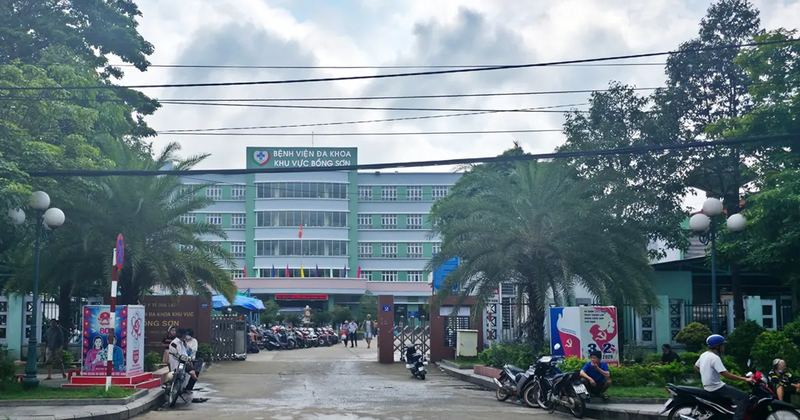
🔥
🔥
Techcombank được Ngân hàng Nhà nước chấp thuận tăng vốn thêm hơn 35.700 tỷ đồng, sẽ trở thành ngân hàng có vốn điều lệ cao nhất hệ thống
TIN MỚI Ngân hàng Nhà nước Việt Nam (NHNN) vừa có văn bản chấp thuận đề nghị tăng vốn điều lệ của Ngân hàng TMCP Kỹ Thương Việt Nam (Techcombank, mã TCB). Theo đó, Techcombank được tăng vốn điều lệ thêm tối đa 35.730,97
🔥
🔥
Công đoàn triển khai sớm các hoạt động chăm lo Tết Đinh Mùi 2027 cho người lao động
Công đoàn tổ chức các hoạt động hỗ trợ công nhân, người lao động. Ảnh: Công đoàn Dệt may Tổng Liên đoàn Lao động Việt Nam vừa ban hành kế hoạch chăm lo Tết Đinh Mùi 2027 với nhiều hình thức hỗ trợ thiết thực cho đoàn viê
🔥
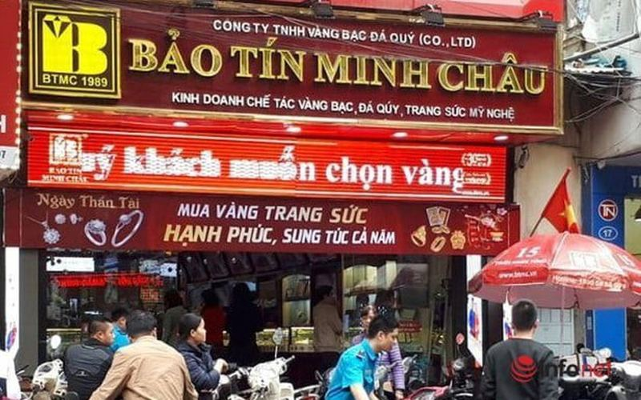
🔥
🔥
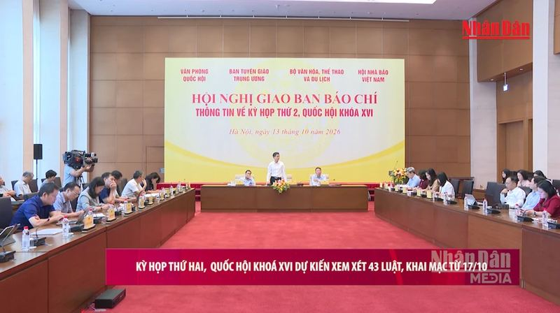
🔥[Video] Kỳ họp thứ Hai, Quốc hội khóa XVI dự kiến xem xét 43 dự án luật, khai mạc từ 17/10
Đề nghị bám sát định hướng tuyên truyền, tập trung thông tin sâu rộng về các sự kiện chính trị quan trọng của đất nước; trọng tâm là kết quả Hội nghị lần thứ tư Ban Chấp hành Trung ương Đảng khóa XIV và Kỳ họp thứ Hai, Q
🔥
🔥
NAPAS – Sun Holidays: Đặt kỳ nghỉ, tặng 1 triệu đồng với VietQRPay - VietQRGlobal
TIN MỚI Cụ thể, chương trình giảm 10%, tối đa 1 triệu đồng khi thanh toán qua VietQRPay hoặc VietQRGlobal của NAPAS trên Sun Holidays - nền tảng thương mại điện tử du lịch của Sun Group. Cuối năm là thời điểm nhiều gia đ
🔥
Đắk Lắk cần thực hiện tốt công tác quy hoạch, khai thác hiệu quả không gian phát triển mới
Tiếp tục chương trình tiếp xúc cử tri trước Kỳ họp thứ hai, Quốc hội khóa XVI, sáng 13/10, đồng chí Nguyễn Thanh Nghị , Ủy viên Bộ Chính trị, Bí thư Trung ương Đảng, Trưởng ban Chính sách, chiến lược Trung ương cùng các
🔥
Liên hoan Truyền hình, Phát thanh, Điện ảnh Công an nhân dân: Hội tụ và lan tỏa
Ngày 13/10, tại Hà Nội, Cục Truyền thông Công an nhân dân tổ chức họp báo, thông tin về Liên hoan Truyền hình, Phát thanh, Điện ảnh Công an nhân dân lần thứ XV, năm 2026, dự kiến diễn ra từ ngày 22-27/10 tại Hà Nội, với
🔥
🔥
Cà Mau phê duyệt gần 3.000 tỉ đồng làm đường nối cao tốc với cửa Sông Đốc
Ngày 13.10, tin từ Văn phòng UBND tỉnh Cà Mau, UBND tỉnh Cà Mau vừa ký quyết định phê duyệt dự án đầu tư xây dựng tuyến đường kết nối Quản lộ Phụng Hiệp - Vành đai 3 - ĐT.985B - Đường ven biển (cửa Sông Đốc) giao Ban Quả
🔥
🔥
🔥
🔥
🔥
🔥
Du lịch 4 mùa và làn sóng khách quốc tế định cư: “Lực đẩy” tái định hình bất động sản Nha Trang
TIN MỚI Xu hướng trú đông, làm việc từ xa cùng làn sóng người nước ngoài chọn an cư dài hạn đang đặt ra những tiêu chuẩn mới về không gian sống, tạo lực đẩy tái định hình thị trường bất động sản địa phương. Từ "hub du lị
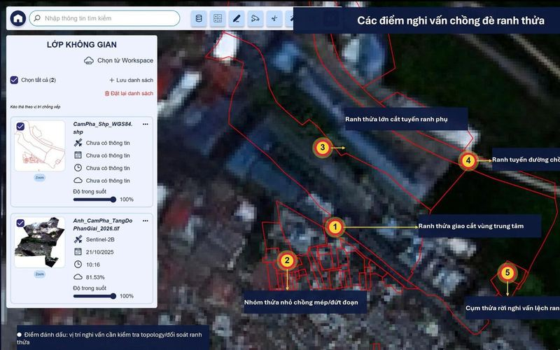
🔥Ứng dụng công nghệ viễn thám và GeoAI: Đột phá làm sạch cơ sở dữ liệu đất đai
Ứng dụng công nghệ viễn thám và GeoAI: Đột phá làm sạch cơ sở dữ liệu đất đai Ánh Dương | 13/10/2026 13:30 PM | Công nghệ Theo dõi Cafebiz.vn trên Xây dựng cơ sở dữ liệu đất đai "đúng, đủ, sạch, sống" đang là nhiệm vụ tr
🔥
🔥
Sáng 13/10, một cổ phiếu ngân hàng vượt đỉnh lịch sử sau khi chốt quyền cổ tức
TIN MỚI Thị trường chứng khoán Việt Nam tiếp tục chìm trong sắc đỏ trong phiên sáng 13/10, với VN-Index giảm về còn 1.715 điểm. Xu hướng giảm chiếm ưu thế tại nhiều cổ phiếu vốn hóa lớn, trong đó có các mã ngân hàng như
🔥
Việt Nam đăng cai Hội nghị lần thứ 90 của Ủy ban Khoa học, Công nghệ và Đổi mới sáng tạo ASEAN
Cuộc họp lần thứ nhất Tiểu ban Hệ sinh thái khoa học, công nghệ và đổi mới sáng tạo (SC-STIE-1) - Ảnh: chinhphu.vn/TG COSTI là cơ chế hợp tác cấp quan chức cao cấp của ASEAN trong lĩnh vực khoa học, công nghệ và đổi mới
🔥
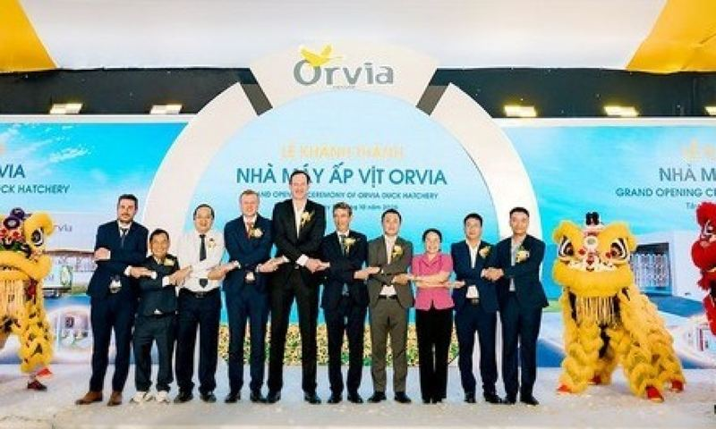
🔥 🔥
🔥
 🔥
🔥
Doanh nghiệp 'Thương hiệu Vàng TP.HCM' cần trở thành 'cánh chim đầu đàn', nâng tầm thương hiệu Việt
Bà Nguyễn Thị Kim Ngọc, Phó giám đốc Sở Công Thương TP.HCM, Phó chủ tịch Hội đồng bình chọn Giải thưởng Thương hiệu Vàng TP.HCM, trong buổi trả lời phỏng vấn báo Tuổi Trẻ - Ảnh: THẾ KIỆT Đây cũng là tinh thần bà Nguyễn T
 🔥
🔥
Sau sự cố hố ga rò rỉ khiến nước thải chảy thẳng ra biển, Gia Lai chi 3,5 tỷ đồng xử lý
Ngày 12/10, UBND tỉnh Gia Lai cho biết, đã phê duyệt chủ trương đầu tư dự án Trạm bơm và tuyến ống thu gom, dẫn nước thải khu vực Nhơn Lý về Trạm xử lý nước thải Suối Cả (phường Quy Nhơn Đông). Dự án có tổng vốn đầu tư 3
 🔥
🔥
 🔥
🔥
 🔥
🔥
Thổ Nhĩ Kỳ ‘hồi sinh’ pháo ZU-23-2 thành Falcon 23-4M Lightning với 3 công nghệ tối tân
Máy bay chiến đấu không người lái X-BAT Mỹ công nghệ VTOL, tầm bay 3.700km Công ty FDI Technology Falcon Dynamic Systems của Thổ Nhĩ Kỳ vừa giới thiệu tại Triển lãm quốc phòng ADEX 2026 ở Baku hệ thống phòng không tầm ng
 🔥
🔥
 🔥
🔥
Green SM của ông Phạm Nhật Vượng xác nhận kế hoạch IPO, nơi được chọn không phải Việt Nam
TIN MỚI Trong báo cáo cập nhật sau cuộc gặp với Vingroup, Chứng khoán VNDIRECT cho biết một trong những nội dung đáng chú ý là kế hoạch IPO của Green SM (GSM) - doanh nghiệp chưa niêm yết trong hệ sinh thái Vingroup. The
⚡
⚡
⚡
Dấu hỏi về hệ thống cảnh báo của Ả Rập Xê Út trước các cuộc tập kích quy mô lớn vào sân bay
Trong tuần qua, Riyadh ghi nhận 4 vụ tấn công, khiến ít nhất 18 người thiệt mạng và hơn 300 người bị thương. Tuy nhiên, chính phủ Ả Rập Xê Út chưa đưa ra lý do không phát cảnh báo trước các vụ việc, làm dấy lên lo ngại v
⚡
⚡
Đẩy mạnh hợp tác công tác chính trị, xây dựng quân đội Việt Nam và Lào vững mạnh
Thủ tướng Chính phủ Lê Minh Hưng và Đại tướng Khamlieng Outhakaisone, Phó Thủ tướng, Bộ trưởng Quốc phòng Lào. (Ảnh: chinhphu.vn/Nhật Bắc) Đồng chí Khamlieng Outhakaisone đang có chuyến thăm chính thức Việt Nam, tham dự
⚡
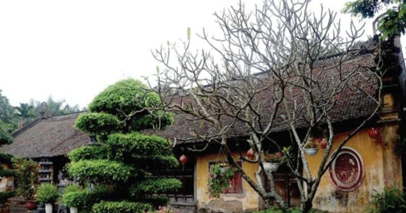
⚡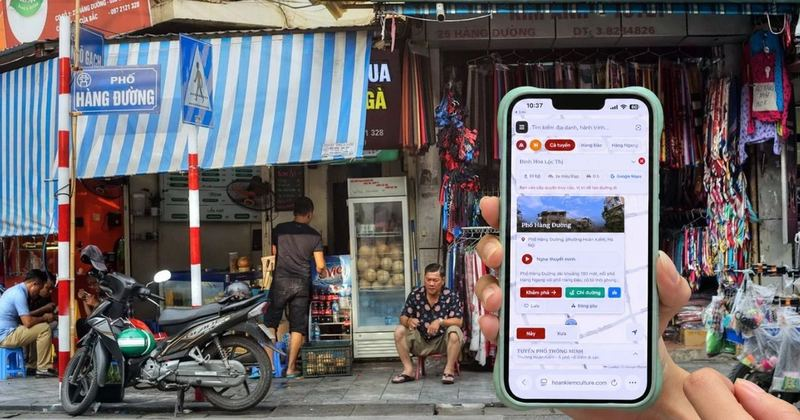
⚡Du khách nước ngoài nói gì về mô hình “Tuyến phố thông minh” tại phường Hoàn Kiếm?
Phường Hoàn Kiếm triển khai thí điểm mô hình “Tuyến phố thông minh” trên 5 tuyến Hàng Đào, Hàng Ngang, Hàng Đường, Đồng Xuân và Hàng Giấy. Mô hình tích hợp Wi-Fi miễn phí, mã QR tra cứu thông tin lịch sử, văn hóa, bản đồ
⚡
⚡
⚡
⚡
⚡
⚡
⚡
⚡
⚡
Đập kính đột nhập phòng ký túc xá sinh viên, thanh niên đâm bạn gái tử vong vì đòi chia tay
Đập kính đột nhập phòng ký túc xá sinh viên, thanh niên đâm bạn gái tử vong vì đòi chia tay Theo Minh Tuệ | 13/10/2026 19:59 PM | Xã hội Theo dõi Cafebiz.vn trên Phạm Minh Phúc đã mang theo dao, liều lĩnh đập vỡ cửa kính
⚡
⚡
Xây dựng mô hình trường học xã hội chủ nghĩa tại những địa bàn có đủ điều kiện
Facebook Twitter Lưu bài viết Bản in Copy link Văn phòng Chính phủ vừa có Thông báo số 523/TB-VPCP kết luận của Phó Thủ tướng Lê Tiến Châu tại cuộc họp về tiến độ sắp xếp các cơ sở giáo dục mầm non, giáo dục phổ thông; t
⚡
Thủ tướng Lê Minh Hưng: Hợp tác quốc phòng-an ninh là một trụ cột quan trọng của quan hệ Việt Nam-Lào
Facebook Twitter Lưu bài viết Bản in Copy link Ngày 13/10, tại Trụ sở Chính phủ, Thủ tướng Chính phủ Lê Minh Hưng đã tiếp Đại tướng Khamlieng Outhakaisone, Ủy viên Bộ Chính trị Đảng Nhân dân Cách mạng Lào, Phó Thủ tướng,
⚡
⚡
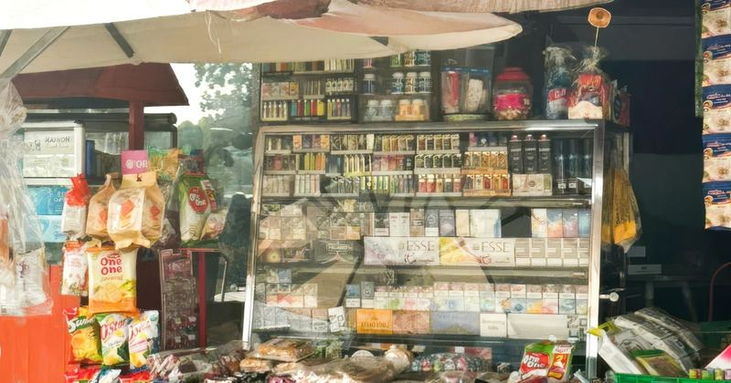
⚡Dự thảo quy định cấm trưng bày thuốc lá: Cần lộ trình đủ dài để đi vào đời sống
Facebook Twitter Lưu bài viết Bản in Copy link Bảo vệ sức khỏe nhân dân và ngăn ngừa người chưa đủ 18 tuổi tiếp cận các sản phẩm thuốc lá là mục tiêu mang tính nguyên tắc, bất di bất dịch trong quá trình sửa đổi Luật Phò
⚡
⚡
Thủ tướng kiểm tra dự án kiểm soát ngập cho 6,5 triệu dân TPHCM sắp hoàn thành
Thủ tướng kiểm tra dự án kiểm soát ngập cho 6,5 triệu dân TPHCM sắp hoàn thành Theo Hà Văn | 13/10/2026 19:06 PM | Xã hội Theo dõi Cafebiz.vn trên Chiều 13/10, Thủ tướng Lê Minh Hưng đã đi kiểm tra thực địa 2 dự án chống
⚡
Festival Hoa Đà Lạt 2026: Kết nối sắc hoa, đánh thức tiềm năng du lịch Lâm Đồng
Facebook Twitter Lưu bài viết Bản in Copy link Festival Hoa Đà Lạt lần thứ 11 năm 2026 được kỳ vọng tạo cú hích cho du lịch Lâm Đồng trong mùa cao điểm cuối năm. Với chủ đề “Đà Lạt-Bản giao hòa của sắc hoa và âm nhạc,” s
⚡
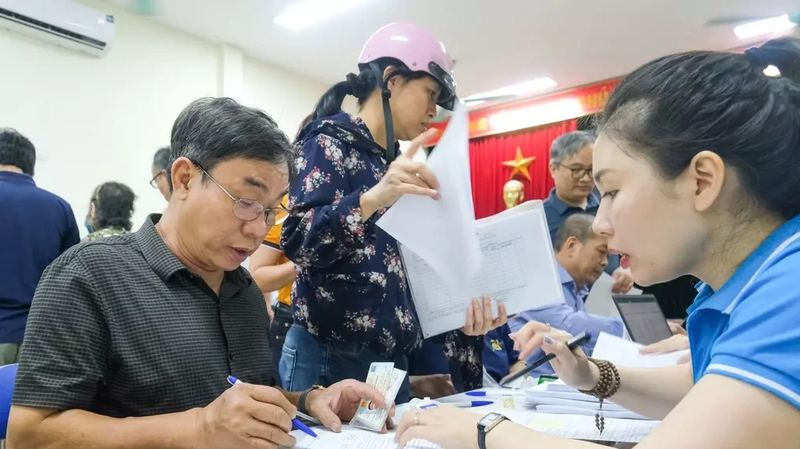
⚡
⚡
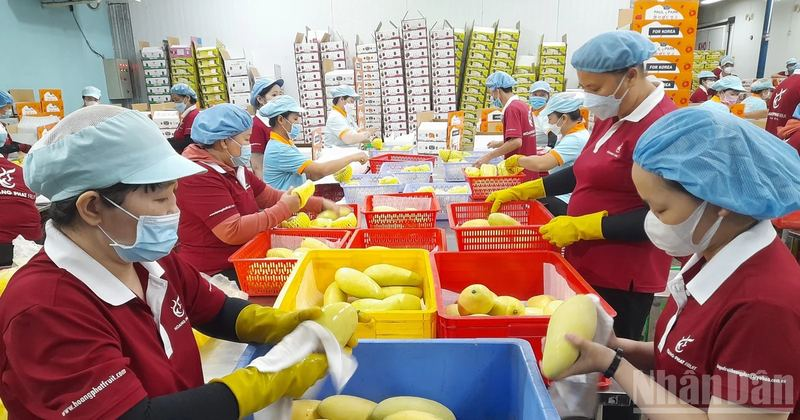
⚡
⚡
Phát hiện phụ nữ 48 tuổi nhiễm sán dây bò, cảnh báo nguy cơ từ thịt bò tái
Hình ảnh sán dây bò được gắp qua nội soi. Ảnh: KIM LONG Chiều 13-10, Bệnh viện Bạch Mai thông tin về trường hợp một phụ nữ 48 tuổi, ở Lai Châu, được phát hiện nhiễm sán dây bò khi khám sức khỏe định kỳ. Trước đó, người b
⚡
Vụ bé gái bị mẹ kế bạo hành ở Phú Thọ: Thừa nhận đánh con chồng do nóng giận
Vụ bé gái bị mẹ kế bạo hành ở Phú Thọ: Thừa nhận đánh con chồng do nóng giận Theo Viết Hà | 13/10/2026 18:49 PM | Xã hội Theo dõi Cafebiz.vn trên Mẹ kế của cháu bé nói rằng do áp lực công việc, kinh tế và việc chăm sóc c
⚡
[Ảnh] Chủ tịch Quốc hội Trần Thanh Mẫn tiếp Bí thư Tỉnh ủy tỉnh Thiểm Tây
Chủ tịch Quốc hội Trần Thanh Mẫn tiếp Bí thư Tỉnh ủy, Chủ nhiệm Ủy ban Thường vụ Nhân đại tỉnh Thiểm Tây (Trung Quốc) Triệu Nhất Đức. (Ảnh: Doãn Tấn/TTXVN) Chủ tịch Quốc hội Trần Thanh Mẫn tiếp Bí thư Tỉnh ủy, Chủ nhiệm
⚡
⚡
⚡
⚡
⚡
⚡
⚡
⚡
⚡
Thực hiện Nghị quyết 71-NQ/TW: Tập trung 4 vấn đề lớn của giáo dục phổ thông
Facebook Twitter Lưu bài viết Bản in Copy link Chiều 13/10, tại Bộ Giáo dục và Đào tạo, đồng chí Trịnh Văn Quyết, Ủy viên Bộ Chính trị, Bí thư Trung ương Đảng, Trưởng Ban Tuyên giáo Trung ương chủ trì Hội nghị công bố Qu
⚡
Thúc đẩy hợp tác quốc phòng Việt Nam-Campuchia ngày càng hiệu quả, thực chất
Thực hiện Kế hoạch hợp tác năm 2026 giữa Bộ Quốc phòng hai nước Việt Nam-Campuchia, Đoàn Bộ trưởng Quốc phòng Campuchia sang thăm chính thức Việt Nam từ ngày 12-15/10, dự Cuộc gặp thường niên giữa ba Bộ trưởng Quốc phòng
⚡
⚡
Đối thủ bỏ cuộc, giải đấu chuẩn bị cho Asian Cup 2027 của Thái Lan gặp biến cố lớn
Theo dự kiến, giải đấu 4 đội sẽ được đăng cai tại tỉnh Sisaket vào tháng 11 tới trong dịp FIFA Days. King's Cup được Thái Lan rất kỳ vọng vì nó được coi là bước đệm cho Asian Cup 2027. Chưa kể King's Cup diễn ra trong bố
⚡
Công bố quyết định và kế hoạch giám sát đối với Ban Thường vụ Đảng ủy Bộ GD-ĐT
Đồng chí Trịnh Văn Quyết, Ủy viên Bộ Chính trị, Bí thư Trung ương Đảng, Trưởng Ban Tuyên giáo Trung ương, phát biểu tại hội nghị. Ảnh: NGUYỄN MẠNH Đánh giá toàn diện công tác phát triển giáo dục phổ thông Thay mặt đoàn g
⚡
Huy động cao nhất mọi nguồn lực, phấn đấu hoàn thành toàn bộ các chỉ tiêu năm 2026
Phó Thủ tướng Nguyễn Văn Thắng phát biểu tại cuộc tiếp xúc cử tri - Ảnh: chinhphu.vn/Đức Tuân Đây là kỳ họp có ý nghĩa rất quan trọng, nhất là việc cụ thể hóa các định hướng chiến lược, các quyết sách của Đảng; giải quyế
Đại học Quốc gia Thành phố Hồ Chí Minh cần trở thành hạt nhân đào tạo, nghiên cứu, phát triển khoa học công nghệ
Cùng dự có đồng chí Trần Lưu Quang, Ủy viên Bộ Chính trị, Bí thư Thành ủy Thành phố Hồ Chí Minh; lãnh đạo một số bộ, ngành, cơ quan Trung ương. Điểm nhấn tại Lễ khai khóa năm 2026 là hoạt động khen thưởng các cá nhân tha
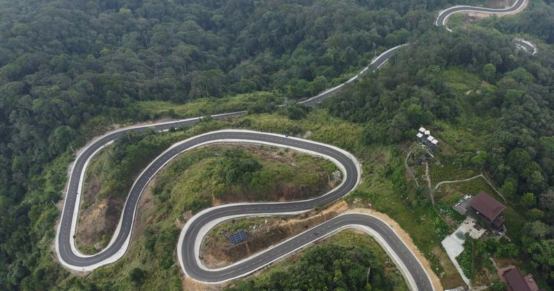
Thanh tra chỉ ra nhiều thiếu sót tại Ban Quản lý Khu bảo tồn thiên nhiên Hòn Bà
Ngày 13.10, Thanh tra tỉnh Khánh Hòa cho biết qua thanh tra việc chấp hành pháp luật trong quản lý, sử dụng các nguồn kinh phí tại Ban Quản lý Khu bảo tồn thiên nhiên Hòn Bà giai đoạn 2024 - 2025, cơ quan chức năng phát
Cuộc thi tìm hiểu pháp luật giao thông đường bộ tiếp tục nhận bài dự thi đến hết tháng 10
Từ ngày 12/10 đến hết ngày 31/10/2026, đợt thi thứ hai của Cuộc thi “Tìm hiểu pháp luật về trật tự, an toàn giao thông đường bộ 2026” tiếp tục mở cổng nhận bài trực tuyến. Các thí sinh có cơ hội thử sức với kiến thức phá
Phó Bí thư Thành ủy TPHCM Nguyễn Phước Lộc: Mọi chính sách phải đo được bằng chất lượng thụ hưởng của trẻ em
Mạng lưới cơ sở giáo dục đặc biệt chưa đồng đều Báo cáo với đoàn công tác, cô Bạch Thu Hằng, Hiệu trưởng Trường chuyên biệt Tương Lai cho biết, từ tháng 4-2025 đến nay, trường chính thức hoạt động ở cơ sở mới tại địa chỉ
Phó Thủ tướng vừa chứng kiến Tập đoàn Pháp "bắt tay" FPT, muốn thúc đẩy một công nghệ chiến lược ở VN
Phó Thủ tướng vừa chứng kiến Tập đoàn Pháp "bắt tay" FPT, muốn thúc đẩy một công nghệ chiến lược ở VN Theo Minh Hằng | 13/10/2026 16:25 PM | Kinh tế vĩ mô Theo dõi Cafebiz.vn trên Công nghệ này dự kiến sẽ có nhiều đóng g
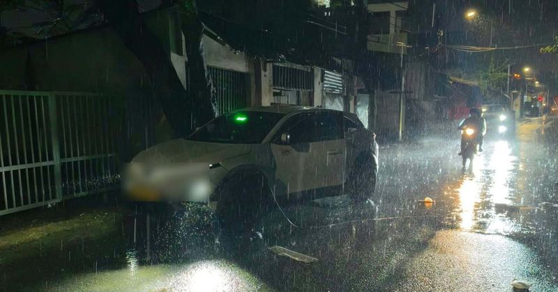
Va chạm xe rồi tự thỏa thuận bồi thường, làm thế nào để không thiệt hại và đúng luật?
Khi tham gia giao thông, có trường hợp hai ô tô va chạm nhau nhưng chọn cách giải quyết bằng thỏa thuận và không gọi cơ quan chức năng đến xử lý hiện trường. Một số ý kiến cho rằng khi cơ quan chức năng làm việc sẽ phải
Cảng hàng không phục vụ hơn 94 triệu lượt khách bay, tăng 8,6% so cùng kỳ
Ngày 13/10, tại Cảng hàng không quốc tế Nội Bài, Tổng công ty Cảng hàng không Việt Nam (ACV) tổ chức sơ kết công tác sản xuất kinh doanh và xây dựng Đảng 9 tháng năm 2026. Xuyên suốt từ đầu năm đến nay, ACV đã tập trung
Quan tâm bố trí quỹ đất thể thao trong quy hoạch khu công nghiệp, khu đô thị
Đổi mới đầu tư đối với thể thao thành tích cao Văn phòng Trung ương Đảng vừa có thông báo kết luận của Tổng Bí thư, Chủ tịch nước Tô Lâm tại buổi làm việc với Đảng ủy Chính phủ, Đảng ủy Bộ VH,TT&DL về phát triển thể dục,
Anh hùng Lao động Thái Hương: Thương hiệu quốc gia là đòn bẩy chiến lược
Phát biểu đại diện cộng đồng doanh nghiệp Việt Nam tại cuộc gặp mặt doanh nghiệp tiêu biểu với Tổng Bí thư, Chủ tịch nước Tô Lâm ngày 12.10 tại Hà Nội, Anh hùng Lao động Thái Hương , Nhà sáng lập, Chủ tịch Hội đồng chiến
🔥
Chủ tịch ngân hàng "lão làng" nhất Việt Nam: 60 tuổi mới làm banker, đến tuổi 73 vẫn nhiều mục tiêu lớn
Chủ tịch ngân hàng "lão làng" nhất Việt Nam: 60 tuổi mới làm banker, đến tuổi 73 vẫn nhiều mục tiêu lớn Theo Minh Vy | 13/10/2026 15:01 PM | Kinh doanh Theo dõi Cafebiz.vn trên Là người cầm lái dày dặn trải nghiệm bậc nh
🔥
Hải Phòng: Sự hài lòng và thành công của doanh nghiệp là thước đo quan trọng
Phát biểu khai mạc hội nghị, ông Lê Ngọc Châu, Bí thư Thành ủy, Trưởng Đoàn đại biểu Quốc hội thành phố Hải Phòng chúc mừng và biểu dương những nỗ lực, tâm huyết cùng những đóng góp quan trọng của cộng đồng doanh nghiệp,
🔥
Kiến tạo thể chế, bồi đắp niềm tin: Động lực để doanh nghiệp Việt vươn tầm quốc tế
Facebook Twitter Lưu bài viết Bản in Copy link B ước vào giai đoạn phát triển mang tính bước ngoặt, mối quan hệ đồng hành giữa Nhà nước và cộng đồng doanh nghiệp tiếp tục được khẳng định là động lực cốt lõi để hiện thực
🔥
Đà Nẵng: Hơn 3.300 tỷ đồng đầu tư dự án hạ tầng kết nối khu thương mại tự do
Dự án có tên thương mại là Khu Thương mại - Dịch vụ Quốc tế (International Commercial & Service Gateway), được triển khai trên quy mô khoảng 154ha tại xã Bà Nà, TP Đà Nẵng. Công ty TNHH FTZ Kita Trung Nam làm chủ đầu tư.
🔥
🔥
🔥
Phó thủ tướng: Gỡ cảnh báo 'thẻ vàng' IUU là nhiệm vụ chính trị đặc biệt quan trọng
Phó thủ tướng Hồ Quốc Dũng phát biểu tại cuộc họp - Ảnh: GIA HUY Sáng 13-10, Phó thủ tướng Hồ Quốc Dũng chủ trì cuộc họp Ban Chỉ đạo quốc gia về phòng chống khai thác hải sản bất hợp pháp, không báo cáo và không theo quy
🔥
Văn hóa doanh nghiệp góp phần tạo dựng bản sắc, năng lực cạnh tranh trong bối cảnh mới
Những vấn đề chung quanh việc xây dựng văn hóa doanh nghiệp trong bối cảnh mới được bàn luận cụ thể trong Diễn đàn Văn hóa doanh nghiệp Việt Nam 2026 do Báo Văn hóa phối hợp Hiệp hội Doanh nghiệp nhỏ và vừa Thành phố Hà
🔥
🔥
Phó Thủ tướng Hồ Quốc Dũng: Quyết liệt thực hiện '5 không', quyết tâm gỡ 'thẻ vàng' IUU trong năm 2026
Phó Thủ tướng Hồ Quốc Dũng chủ trì cuộc họp Ban Chỉ đạo Quốc gia về phòng chống IUU - Ảnh: chinhphu.vn/Gia Huy Sáng 13/10, tại trụ sở Chính phủ, Phó Thủ tướng Hồ Quốc Dũng chủ trì cuộc họp Ban Chỉ đạo Quốc gia về phòng c
🔥
Đã tính toán đến ngày tận thế của nhân loại? Chuyên gia AI cảnh báo thảm họa có thể xảy ra trước năm 2030
Đã tính toán đến ngày tận thế của nhân loại? Chuyên gia AI cảnh báo thảm họa có thể xảy ra trước năm 2030 Theo Khánh Linh | 13/10/2026 11:35 AM | Công nghệ Theo dõi Cafebiz.vn trên Một nhà nghiên cứu vừa rời Anthropic -
🔥
🔥
🔥
Phó Thủ tướng Thường trực Phạm Gia Túc chủ trì phiên họp Ban Chỉ đạo Trung ương về chính sách nhà ở và thị trường bất động sản
Phó Thủ tướng Thường trực Phạm Gia Túc chủ trì phiên họp Ban Chỉ đạo Trung ương về chính sách nhà ở và thị trường bất động sản Theo Phương Nguyên | 13/10/2026 11:11 AM | Kinh tế vĩ mô Theo dõi Cafebiz.vn trên Sáng 13/10,
🔥
Vụ tài xế gây tai nạn làm nữ sinh 14 tuổi ở Vĩnh Long tử vong: VKS đề nghị phạt tài xế Trung đến 30 tháng tù
Nguyễn Văn Bảo Trung tại tòa - Ảnh: HOÀI THƯƠNG Ngày 13-10, tại xã Trung Thành, Tòa án nhân dân khu vực 4, tỉnh Vĩnh Long đưa ra xét xử đối với bị cáo Nguyễn Văn Bảo Trung (34 tuổi, ngụ xã Tam Ngãi, tỉnh Vĩnh Long) về tộ
🔥
AI, biến đổi khí hậu và những mối đe dọa khiến con người biến mất vào năm 2100
AI, biến đổi khí hậu và những mối đe dọa khiến con người biến mất vào năm 2100 Theo Hoa Vũ | 13/10/2026 10:50 AM | Công nghệ Theo dõi Cafebiz.vn trên AI bị lợi dụng phát triển vũ khí sinh học, chiến tranh hạt nhân và biế
🔥
🔥
🔥
🔥
Phấn đấu bàn giao mặt bằng tuyến cao tốc tại Thành phố Hồ Chí Minh trong tháng 10
Thúc tiến độ bồi thường, giải phóng mặt bằng Sở Nông nghiệp và Môi trường Thành phố Hồ Chí Minh vừa ban hành Văn bản khẩn số 34069/SNNMT-BTTĐC, yêu cầu Ủy ban nhân dân xã Tân Nhựt, Ban Quản lý dự án đầu tư xây dựng xã Tâ
🔥
🔥
Hôm nay xét xử vụ tài xế gây tai nạn làm chết nữ sinh 14 tuổi ở Vĩnh Long
An ninh được thắt chặt - Ảnh: HOÀI THƯƠNG Sáng nay (13-10), tại xã Trung Thành, Tòa án nhân dân khu vực 4, tỉnh Vĩnh Long đưa ra xét xử đối với bị cáo Nguyễn Văn Bảo Trung (34 tuổi, ngụ xã Tam Ngãi, tỉnh Vĩnh Long) về tộ
🔥
 🔥
🔥
 🔥
🔥
 🔥
🔥
 🔥
🔥
'Thành công của doanh nghiệp là thành công của thành phố, thương hiệu doanh nghiệp làm nên thương hiệu thành phố'
Chủ tịch UBND TP.HCM Nguyễn Văn Được cảm ơn những đóng góp của cộng đồng doanh nghiệp - Ảnh: QUANG ĐỊNH Doanh nghiệp lớn mạnh, thành phố phát triển Trong thông điệp gửi đến cộng đồng doanh nghiệp, Chủ tịch UBND TP.HCM Ng
 🔥
🔥
 🔥
🔥
 🔥
🔥
 🔥
🔥
LiveTin quốc tế ngày 13.10: Hàng loạt siêu thị khắp nước Pháp bị tấn công mạng
Bạn có bỏ lỡ gì không? Ukraine tố cáo Nga tiếp tục tấn công năng lượng, ông Trump nói sẽ điều tra Tổng thống Nga Putin ký sắc lệnh miễn visa 30 ngày cho công dân Việt Nam Hôm nay Giáo hoàng Leo XIV được phẫu thuật Tấn cô
⚡
⚡
Hội Doanh nhân Sài Gòn TP. Hồ Chí Minh tôn vinh hơn 120 doanh nhân tiêu biểu
Ngày 13/10, nhân kỷ niệm 22 năm Ngày Doanh nhân Việt Nam, Hội Doanh nhân Sài Gòn TP. Hồ Chí Minh tổ chức tôn vinh hơn 120 doanh nhân tiêu biểu, ghi nhận không chỉ thành quả kinh doanh mà còn là năng lực kiến tạo thương h
⚡
Thủ tướng Lê Minh Hưng đi thị sát, kiểm tra các dự án chống ngập ở Thành phố Hồ Chí Minh
Dự án xây dựng hạ tầng và cải tạo môi trường kênh Tham Lương-Bến Cát-rạch Nước Lên là một trong những công trình trọng điểm của Thành phố Hồ Chí Minh. Theo Ban Quản lý dự án đầu tư xây dựng hạ tầng đô thị Thành phố Hồ Ch
⚡
JICA nâng cao năng lực thị trường cổ phiếu Việt Nam qua dự án hợp tác kỹ thuật
Facebook Twitter Lưu bài viết Bản in Copy link Ngày 13/10, Cơ quan Hợp tác Quốc tế Nhật Bản (JICA), phối hợp với Ủy ban Chứng khoán Nhà nước Việt Nam (SSC), cử Đoàn chuyên gia lần thứ 10 trong khuôn khổ Dự án Hợp tác Kỹ
⚡
Giao phường Bình Quới ra quyết định cưỡng chế di dời 6 lô chung cư Thanh Đa
Cụm chung cư Thanh Đa thuộc dự án cải tạo, xây dựng lại chung cư cũ - Ảnh: MINH HÒA Chủ tịch UBND TP.HCM vừa có văn bản truyền đạt chỉ đạo về đẩy nhanh tiến độ thực hiện công tác cải tạo, xây dựng lại cụm lô số chung cư
⚡
Cấm tạm thời luồng đường thủy để hợp long cầu đi bộ gần 1.000 tỷ qua sông Sài Gòn
Ngày 13/10, Sở Xây dựng TPHCM ra thông báo hạn chế lưu thông đường thủy nội địa phục vụ thi công gói thầu số 2, xây dựng cầu chính thuộc dự án cầu đi bộ qua sông Sài Gòn. Theo thông báo, việc điều tiết giao thông đường t
TP.HCM tăng chuyến metro, xe buýt phục vụ lễ truy điệu 731 hài cốt liệt sĩ
Ngày mai (14.10), TP.HCM tổ chức lễ truy điệu và an táng hài cốt liệt sĩ được tìm kiếm, quy tập tại Công viên Văn hóa Lê Thị Riêng, phường Hòa Hưng, về Nghĩa trang Liệt sĩ Thành phố. Để phục vụ nhu cầu đi lại của người d
COSTI-90: 05 tiểu ban chuyên môn ASEAN họp phiên đầu tiên theo cơ cấu mới
Facebook Twitter Lưu bài viết Bản in Copy link Ngày 13/10/2026, tại Đà Nẵng, 05 tiểu ban chuyên môn của Ủy ban Khoa học Công nghệ và Đổi mới sáng tạo ASEAN (COSTI) đã tổ chức phiên họp lần thứ nhất theo cơ cấu tổ chức mớ
Giải Vô địch Golf Quốc gia Báo Tiền Phong - Cúp VinFast 2026: Cuộc đua kép trên sân Vinpearl Golf Léman
Sân Vinpearl Golf Léman. Theo điều lệ môn golf của Đại hội Thể thao toàn quốc lần thứ X, Giải Vô địch Golf Quốc gia Báo Tiền Phong - Cúp VinFast 2026 có bốn nội dung: đơn nam, đơn nữ, đồng đội nam và đồng đội nữ. Thành t
Chuyện chưa kể về nhà leo núi "đeo ủng xanh" đóng băng trên đỉnh Everest 30 năm và kế hoạch nguy hiểm đưa thi thể về với gia đình
Chuyện chưa kể về nhà leo núi "đeo ủng xanh" đóng băng trên đỉnh Everest 30 năm và kế hoạch nguy hiểm đưa thi thể về với gia đình Giả Hủ | 13/10/2026 17:04 PM | Xã hội Theo dõi Cafebiz.vn trên Dự kiến, chiến dịch đưa thi
Thủ tướng: Chính phủ ủng hộ mạnh mẽ các ĐHQG trở thành các đại học tinh hoa đẳng cấp thế giới
Thủ tướng Lê Minh Hưng và Bí thư Thành ủy TPHCM Trần Lưu Quang đến dự lễ khai khóa 2026 của Đại học Quốc gia TPHCM - Ảnh: chinhphu.vn/Nhật Bắc Chương trình có sự tham dự của đồng chí Trần Lưu Quang, Ủy viên Bộ Chính trị,
Thủ tướng: Đại học Quốc gia Thành phố Hồ Chí Minh phải trở thành nơi phát hiện, đào tạo và quy tụ nhân tài hàng đầu của đất nước
Facebook Twitter Lưu bài viết Bản in Copy link Chiều 13/10, Thủ tướng Chính phủ Lê Minh Hưng đã dự Lễ khai khóa năm 2026 tại Đại học Quốc gia Thành phố Hồ Chí Minh với chủ đề “Đại học Quốc gia Thành phố Hồ Chí Minh với k
Có hay không 'người bí ẩn' đi cùng tài xế trong vụ nữ sinh tử vong ở Vĩnh Long?
XEM CLIP: Bị cáo Nguyễn Văn Bảo Trung rời tòa. Chiều 13/10, TAND khu vực 4, tỉnh Vĩnh Long tiếp tục xét xử bị cáo Nguyễn Văn Bảo Trung (34 tuổi, ngụ xã Tam Ngãi, tỉnh Vĩnh Long) về tội “Vi phạm quy định về tham gia giao
Duy nhất Vingroup của ông Phạm Nhật Vượng được gọi tên trong một bảng xếp hạng đặc biệt toàn cầu: Đang chi gần 10 tỷ đồng mỗi ngày cho việc gì?
Duy nhất Vingroup của ông Phạm Nhật Vượng được gọi tên trong một bảng xếp hạng đặc biệt toàn cầu: Đang chi gần 10 tỷ đồng mỗi ngày cho việc gì? Theo Linh Linh | 13/10/2026 15:48 PM | Kinh doanh Theo dõi Cafebiz.vn trên V

Giá vàng hôm nay 13/10: SJC đảo chiều, lấy lại toàn bộ mức giảm buổi sáng
Giá vàng trong nước hôm nay 13/10 Đến 15h04' ngày 13/10, giá vàng miếng SJC lại đảo chiều lên mức 141,3-144,3 triệu đồng/lượng (mua - bán), tăng 800.000 đồng/lượng ở cả chiều mua và bán so với mức niêm yết sáng nay. Giá
🔥
🔥
🔥
🔥
🔥
🔥
Tình tiết đáng chú ý tại phiên xử tài xế gây tai nạn làm nữ sinh tử vong ở Vĩnh Long
Tình tiết đáng chú ý tại phiên xử tài xế gây tai nạn làm nữ sinh tử vong ở Vĩnh Long Theo Cảnh Kỳ - Nhật Huy | 13/10/2026 14:07 PM | Xã hội Theo dõi Cafebiz.vn trên Theo luật sư, các nhân chứng và bản thân tài xế đã thừa
🔥
🔥
Thông báo ý kiến chỉ đạo của Tổng Bí thư, Chủ tịch nước Tô Lâm về phát triển thể dục, thể thao trong giai đoạn mới
Tổng Bí thư, Chủ tịch nước Tô Lâm làm việc với Đảng ủy Chính phủ, Đảng ủy Bộ Văn hóa, Thể thao và Du lịch về phát triển thể dục, thể thao trong giai đoạn mới Thông báo số 194-TB/VPTW nêu: Ngày 2/10/2026, đồng chí Tô Lâm,
🔥
Phó Thủ tướng Lê Tiến Châu thăm và làm việc tại Đại học Thanh Hoa, Trung Quốc
Các đồng chí Ủy viên Trung ương Đảng: Nguyễn Đắc Vinh, Ủy viên Ủy ban Thường vụ Quốc hội, Chủ nhiệm Ủy ban Văn hóa và Xã hội của Quốc hội; Nguyễn Minh Vũ, Thứ trưởng Thường trực Ngoại giao; đại diện Bộ Ngoại giao, Ủy ban
🔥
🔥
🔥
🔥
Hàng chục người Yemen thương vong do các cuộc không kích của Saudi Arabia
Chào mừng quý độc giả và thính giả đến với Bản tin Thế giới - chuyên mục podcast quốc tế hàng ngày trên Báo Điện tử VietnamPlus. Tại đây, chúng tôi cập nhật nhanh nhất những diễn biến nổi bật toàn cầu trong 24 giờ qua,
🔥
Thông báo ý kiến chỉ đạo của Tổng Bí thư, Chủ tịch nước Tô Lâm về phát triển thể dục, thể thao trong giai đoạn mới
Facebook Twitter Lưu bài viết Bản in Copy link Văn phòng Trung ương Đảng vừa ban hành Thông báo ý kiến chỉ đạo của đồng chí Tổng Bí thư, Chủ tịch nước Tô Lâm làm việc với Đảng ủy Chính phủ, Đảng ủy Bộ Văn hóa, Thể thao v
🔥
TP. HCM đề xuất hỗ trợ chủ đầu tư 50% kinh phí xây dựng hạ tầng kỹ thuật trong phạm vi dự án nhà ở xã hội
TIN MỚI UBND TP HCM đang lấy ý kiến dự thảo nghị quyết của HĐND TP HCM quy định cơ chế, chính sách, biện pháp cải tạo, xây dựng lại nhà chung cư và thực hiện các dự án cải tạo, chỉnh trang, tái thiết đô thị trên địa bàn.
🔥
Thông báo ý kiến chỉ đạo của đồng chí Tổng Bí thư, Chủ tịch nước Tô Lâm về phát triển thể dục, thể thao trong giai đoạn mới
Thông báo số 194-TB/VPTW nêu rõ, ngày 2/10/2026, đồng chí Tô Lâm, Tổng Bí thư Ban Chấp hành Trung ương Đảng, Chủ tịch nước Cộng hòa xã hội chủ nghĩa Việt Nam làm việc với Đảng ủy Chính phủ, Đảng ủy Bộ Văn hóa, Thể thao v
🔥
Lấy ý kiến, nhận xét Đảng viên nơi cư trú thực hiện trên môi trường điện tử
Bộ Chính trị mới đây ban hành Quy định 221 về trách nhiệm của đảng viên đang công tác đối với tổ chức đảng và nhân dân nơi cư trú. Trong đó, về nguyên tắc, quy định nêu rõ, nhận xét thẳng thắn, trung thực các ưu điểm và
🔥
🔥
🔥
🔥
Thủ tướng Anh cáo buộc Iran đứng sau âm mưu tấn công căn cứ oanh tạc cơ B-1B
"Tôi có thể xác nhận đánh giá của chúng tôi rằng vụ việc này rất có thể đã được điều phối từ Iran và gần như chắc chắn do IRGC chỉ đạo. Chúng tôi sẽ không dung thứ cho những mối đe dọa này trên lãnh thổ của mình", Thủ tư
🔥
Gần 2.000 học sinh được nguyên Phó Chủ tịch nước Trương Mỹ Hoa truyền lửa
Tại buổi trò chuyện, nguyên Phó Chủ tịch nước Trương Mỹ Hoa, Chủ tịch Quỹ Vì Tuổi trẻ Vùng cao và Hải đảo, Chủ nhiệm Câu lạc bộ "Vì Hoàng Sa - Trường Sa thân yêu", bày tỏ niềm vui và chúc mừng những thành quả giáo dục mà
🔥
🔥
🔥
🔥
 🔥
🔥
Vợ tử nạn, con trai 23 tuổi chấn thương nặng, người đàn ông suy thận kiệt quệ
Tai nạn bất ngờ, gia đình mất đi người trụ cột Ngày 4/10/2026 trở thành ngày đau thương đối với gia đình ông Hoàng Văn Vang (SN 1969, quê ở thôn Minh Thượng, xã Thiệu Hóa, Thanh Hóa). Vợ ông tử vong sau tai nạn lao động,
 🔥
🔥
 🔥
🔥
 🔥
🔥
 🔥
🔥
Người Việt đầu tiên đi được đến câu 15 của Ai Là Triệu Phú đã nhận bao nhiêu tiền thưởng?
TIN MỚI Ra mắt khán giả Việt Nam từ tháng 1/2005, Ai Là Triệu Phú là một trong những gameshow kiến thức có thời gian phát sóng lâu năm nhất của VTV. Người chơi phải lần lượt vượt qua 15 câu hỏi với độ khó tăng dần, đồng
 🔥
🔥
 🔥
🔥
 🔥
🔥
 🔥
🔥
 🔥
🔥
Đoàn đại biểu ĐCS Việt Nam thăm Peru, trao tặng sách của Tổng Bí thư, Chủ tịch nước Tô Lâm
Facebook Twitter Lưu bài viết Bản in Copy link Từ ngày 9-12/10/2026, Đoàn đại biểu Đảng Cộng sản Việt Nam do đồng chí Hoàng Phúc Lâm, Phó Bí thư Đảng ủy, Phó Giám đốc Học viện Chính trị quốc gia Hồ Chí Minh dẫn đầu đã th
 🔥
🔥
 🔥
🔥
 🔥
🔥
 🔥
🔥
 🔥
🔥
 🔥
🔥
 🔥
🔥
 🔥
🔥
 🔥
🔥
 🔥
🔥
 🔥
🔥
 🔥
🔥
 🔥
🔥
 🔥
🔥
Tiến sĩ vật lý hạt nhân đi bán mì tôm, nước mắm: Tài sản tỷ USD, giàu top Việt Nam
TIN MỚI Trong giới doanh nhân Việt Nam, Nguyễn Đăng Quang là một trường hợp đặc biệt. Ông có bằng tiến sĩ vật lý hạt nhân, từng học tập tại Đông Âu và bắt đầu con đường kinh doanh từ khu vực này vào những năm 1990, trước
 🔥
🔥
⚡
⚡
Phá đường dây lừa đặt resort 5 sao tại Phú Quốc, giao dịch trên 6.000 tỷ đồng
Trước đó, vào tháng 4, Phòng Cảnh sát hình sự phối hợp Phòng An ninh mạng và phòng, chống tội phạm sử dụng công nghệ cao, Công an tỉnh An Giang phát hiện nhóm đối tượng hoạt động có tổ chức, lập nhiều trang mạng xã hội,
⚡
Cấm luồng tạm thời trên sông Sài Gòn khi hợp long vòm thép chính cầu đi bộ
Facebook Twitter Lưu bài viết Bản in Copy link Ngày 13/10, Sở Xây dựng Thành phố Hồ Chí Minh đã thông báo về việc hạn chế lưu thông đường thủy nội địa phục vụ thi công xây dựng cầu chính thuộc dự án xây dựng cầu đi bộ qu
⚡
Quy định mới về tốc độ trên cao tốc Cầu Giẽ - Cao Bồ, xử phạt vi phạm từ 20-10
Trục cao tốc Bắc - Nam từ Pháp Vân (Hà Nội) đến Cao Bồ (Ninh Bình) sẽ có cùng phương án tổ chức giao thông - Ảnh: HỒNG QUANG Ngày 13-10, Cục Cảnh sát giao thông (Bộ Công an) thông báo về tổ chức giao thông trên cao tốc C
⚡
Metro, xe buýt tăng chuyến phục vụ người dân dự Lễ truy điệu và an táng hài cốt liệt sỹ
Facebook Twitter Lưu bài viết Bản in Copy link Trung tâm Quản lý giao thông công cộng Thành phố Hồ Chí Minh cho biết sẽ tăng tần suất hoạt động của metro Bến Thành-Suối Tiên và xe buýt kết nối phục vụ người dân tham dự L
⚡
Dự kiến ngày 15-10 tuyên án tài xế trong vụ TNGT làm nữ sinh ở Vĩnh Long tử vong
Bị cáo Nguyễn Văn Bảo Trung tại phiên tòa Bị cáo Nguyễn Văn Bảo Trung (34 tuổi, ngụ xã Tam Ngãi, tỉnh Vĩnh Long) bị xét xử về tội “Vi phạm quy định về tham gia giao thông đường bộ”. Tại phiên tòa, đại diện hợp pháp của g
⚡
⚡

Thủ tướng kiểm tra dự án kiểm soát ngập cho 6,5 triệu dân TPHCM sắp hoàn thành
Thủ tướng Lê Minh Hưng và Bí thư Thành ủy TPHCM Trần Lưu Quang kiểm tra thực địa Dự án "Giải quyết ngập do triều khu vực TPHCM, có xét đến yếu tố biến đổi khí hậu – Giai đoạn 1" - Ảnh: chinhphu.vn/Nhật Bắc Cùng đi có đồn
Từ giáo dục đến tư vấn tài chính: Khi kinh nghiệm cũ mở lối cho nghề mới
Nguyễn Thị Bình: Hiểu điều khách chưa nói Ít ai nghĩ rằng trước khi sở hữu hàng chục giải thưởng lớn nhỏ tại Manulife, chị Nguyễn Thị Bình từng là một giáo viên cấp 3. Bảy năm trong ngành giáo dục, chị được nhiều học sin
Ban Bí thư bắt đầu giám sát toàn diện giáo dục phổ thông, từ sách giáo khoa đến đội ngũ giáo viên
Ông Trịnh Văn Quyết - Ủy viên Bộ Chính trị, Bí thư Trung ương Đảng, Trưởng Ban Tuyên giáo Trung ương, Trưởng đoàn giám sát - phát biểu tại hội nghị - Ảnh: NGUYÊN BẢO Chiều 13-10, tại Bộ Giáo dục và Đào tạo diễn ra hội ng
Thường trực Ban Bí thư Trần Cẩm Tú tiếp đoàn cán bộ cấp cao Đảng Nhân dân Cách mạng Lào thăm và làm việc tại Việt Nam
Chào mừng đoàn sang thăm và làm việc tại Việt Nam, đồng chí Trần Cẩm Tú đánh giá cao ý nghĩa của chương trình nghiên cứu, trao đổi chuyên đề giữa hai Đảng, coi đây là dịp để cán bộ hai bên cùng chia sẻ kinh nghiệm, thảo
Ban hành Chiến lược quốc gia phát triển nền y học cổ truyền Việt Nam đến 2030
Facebook Twitter Lưu bài viết Bản in Copy link Ngày 13/10/2026, Thủ tướng Chính phủ ban hành Quyết định số 1976/QĐ-TTg phê duyệt Chiến lược quốc gia phát triển nền y học cổ truyền Việt Nam đến năm 2030, tầm nhìn đến năm
Diễn tập bắn đạn thật ngày lẫn đêm, hoàn thiện thế trận phòng không liên hoàn
Ngày 13-10, tại Trường bắn Quốc gia khu vực 3 (TP Đồng Nai), Cơ quan Chủ nhiệm Phòng không toàn quân tổ chức khai mạc và các nội dung diễn tập chiến thuật, bắn đạn thật cho lực lượng phòng không khu vực phía Nam năm 2026
Viện Kiểm sát nhân dân TPHCM tổ chức lớp bồi dưỡng nghiệp vụ công tác Đảng
Lớp bồi dưỡng được tổ chức trực tiếp tại trụ sở VKSND Thành phố và kết nối trực tuyến đến các điểm cầu trực thuộc đơn vị. Hơn 1.000 đảng viên của 31 chi bộ trực thuộc Đảng bộ VKSND thành phố tham dự Lãnh đạo VKSND TPHCM
25 cô gái dâng hương tại Bến tàu không số K15, nghe chuyện người lính 'đi không nghĩ đến ngày về'
Sáng 13/10, 25 thí sinh vòng chung kết Hoa hậu Việt Nam 2026 dâng hương tại Bến tàu không số K15 ở Đồ Sơn, Hải Phòng. Hoạt động nằm trong hành trình nhân ái của vòng Chung kết, cùng chương trình thăm Trung tâm Điều dưỡng
Phó Thủ tướng, Bộ trưởng Bộ Quốc phòng Campuchia thăm chính thức Việt Nam
Facebook Twitter Lưu bài viết Bản in Copy link Thực hiện Kế hoạch hợp tác năm 2026 giữa Bộ Quốc phòng hai nước Việt Nam-Campuchia, Đoàn Bộ trưởng Bộ Quốc phòng Campuchia thăm chính thức Việt Nam từ ngày 12-15/10, dự Cuộc
Bộ Nội vụ nghiên cứu chế độ đặc thù cho cán bộ quản lý trường trên 100 lớp
Văn phòng Chính phủ vừa thông báo kết luận của Phó Thủ tướng Lê Tiến Châu tại cuộc họp về tiến độ sắp xếp các cơ sở giáo dục mầm non, giáo dục phổ thông; tình hình, tiến độ triển khai xây dựng và vận hành các trường phổ
Thường trực Ban Bí thư Trần Cẩm Tú tiếp Đoàn cán bộ cao cấp Đảng Nhân dân Cách mạng Lào
Thường trực Ban Bí thư Trần Cẩm Tú tiếp Đoàn cán bộ cấp cao Đảng Nhân dân Cách mạng Lào - Ảnh: TTXVN Chào mừng Đoàn sang thăm và làm việc tại Việt Nam, đồng chí Trần Cẩm Tú đánh giá cao ý nghĩa của chương trình nghiên cứ
Hà Nội đề xuất xây lối đi bộ ngầm kết nối Công viên Thủ Lệ với sông Tô Lịch
Facebook Twitter Lưu bài viết Bản in Copy link Đồ án điều chỉnh tổng thể quy hoạch chi tiết Công viên Thủ Lệ, tỷ lệ 1/500, đang được Hà Nội lấy ý kiến có đề xuất xây dựng lối đi bộ ngầm kết nối công viên với hành lang dạ
Mở rộng không gian văn hóa phục vụ người dân trong tuần văn hóa đại đoàn kết dân tộc
Mở rộng không gian văn hóa phục vụ công cộng trong tuần văn hóa đại đoàn kết dân tộc Văn phòng Chính phủ vừa ban hành Thông báo số 524/TB-VPCP ngày 13/10/2026 kết luận của Phó Thủ tướng Chính phủ Phạm Thị Thanh Trà tại H
Giám sát thực hiện Nghị quyết 71: Làm rõ vấn đề sách giáo khoa, trường lớp, giáo viên
Đoàn Giám sát của Ban Bí thư công bố quyết định và kế hoạch giám sát việc thực hiện Nghị quyết 71-NQ/TW về đột phá phát triển giáo dục và đào tạo Tập trung vào những vấn đề tác động trực tiếp đến chất lượng giáo dục Chiề
Bộ Tài chính thống nhất nguyên tắc phối hợp, quy trình thực hiện kiến nghị thanh tra
Bộ Tài chính quy định rõ nguyên tắc phối hợp, quy trình tiếp nhận, phân công, theo dõi và đôn đốc thực hiện kết luận, kiến nghị, quyết định xử lý của cơ quan thanh tra, cơ quan cảnh sát điều tra, gắn trách nhiệm của từng
Tổng Bí thư, Chủ tịch nước: Bố trí không gian, quỹ đất cho người dân tập thể thao
Văn phòng Trung ương Đảng vừa ban hành thông báo ý kiến chỉ đạo của Tổng Bí thư, Chủ tịch nước Tô Lâm làm việc với Đảng ủy Chính phủ, Đảng ủy Bộ Văn hóa, Thể thao và Du lịch về phát triển thể dục, thể thao trong giai đoạ
Lập BCĐ Trung ương thực hiện Chương trình MTQG phát triển văn hóa-xã hội, nông thôn, dân tộc và miền núi
Thành lập BCĐ Trung ương thực hiện Chương trình mục tiêu quốc gia phát triển văn hóa-xã hội, nông thôn, dân tộc và miền núi giai đoạn 2026 - 2035 Quyết định nêu rõ: Thành lập Ban Chỉ đạo Trung ương thực hiện Chương trình
Quy định mới về quản lý, tính hao mòn, trích khấu hao tài sản kết cấu hạ tầng
Quy định mới về quản lý, tính hao mòn, trích khấu hao tài sản kết cấu hạ tầng Thông tư quy định về quản lý tài sản kết cấu hạ tầng là tài sản cố định, trong đó nêu rõ các nội dung về: Tiêu chuẩn và nguyên tắc quản lý tài
Asian Para Games 5: Vận động viên Việt Nam vượt qua giới hạn của người khuyết tật
Trưởng đoàn Nguyễn Trọng Hổ thăm, động viên Đoàn thể thao người khuyết tật Việt Nam. Ảnh: PV Tại buổi gặp gỡ, Trưởng đoàn Nguyễn Trọng Hổ thăm hỏi tình hình sức khỏe, điều kiện sinh hoạt, tập luyện và công tác chuẩn bị t
Quảng Ngãi tìm kiếm, quy tập 52 hài cốt liệt sĩ trong “Chiến dịch 500 ngày đêm”
Theo Ban Chỉ đạo tìm kiếm, quy tập và xác định danh tính hài cốt liệt sĩ tỉnh Quảng Ngãi, qua rà soát, toàn tỉnh xác định 13.514 mộ cần lấy mẫu. Đến ngày 14/9, các lực lượng đã hoàn thành lấy mẫu sinh phẩm đối với toàn b
Vượt Tokyo, Seoul, Thượng Hải và Singapore, một thành phố của Việt Nam vừa được Oscar du lịch vinh danh năm thứ 3 liên tiếp ở một hạng mục hàng đầu châu Á
Vượt Tokyo, Seoul, Thượng Hải và Singapore, một thành phố của Việt Nam vừa được Oscar du lịch vinh danh năm thứ 3 liên tiếp ở một hạng mục hàng đầu châu Á Theo Thế Anh | 13/10/2026 15:51 PM | Kinh tế vĩ mô Theo dõi Cafeb
Campuchia đẩy mạnh công tác chuẩn bị cho Hội nghị cấp cao Pháp ngữ lần thứ 20
Facebook Twitter Lưu bài viết Bản in Copy link Campuchia đang đẩy mạnh công tác chuẩn bị để đón tiếp đoàn đại biểu quốc tế từ khoảng 90 quốc gia, trong đó có các nguyên thủ quốc gia, người đứng đầu chính phủ tham dự Hội
Từ quầy hàng đến nền tảng số: Grab đưa chuyển đổi số tới từng hộ kinh doanh tại Đà Nẵng
Trong bối cảnh đó, việc đưa hoạt động kinh doanh lên các nền tảng số như Grab đang mở thêm một 'cánh cửa' để những điểm bán này quảng bá sản phẩm và tiếp cận thêm khách hàng ngoài phạm vi quen thuộc. Chuyển đổi số cho ki
Malaysia đề xuất ASEAN coi 'khói mù xuyên biên giới' là thảm họa thiên nhiên
Theo Bernama , trong phát biểu ngày 12/10, Ngoại trưởng Malaysia Mohamad Hasan cho rằng vấn đề khói mù xuyên biên giới cần được đặc biệt quan tâm, bởi vì tình trạng này hiện chưa thuộc phạm vi các cơ chế hiện có của ASEA
Huế đề xuất chi hơn 58 tỷ đồng để đảm bảo tiền lương cho cán bộ, nhân viên y tế
Facebook Twitter Lưu bài viết Bản in Copy link Trước tình trạng thiếu hụt kinh phí chi trả tiền lương tại một số đơn vị y tế công lập, Sở Y tế thành phố Huế đã đề xuất bổ sung 290 vị trí việc làm hưởng lương từ ngân sách
Phó Thủ tướng Chính phủ Lê Tiến Châu thăm và làm việc tại Đại học Thanh Hoa
Tại buổi làm việc, Giáo sư Khưu Dũng, Ủy viên dự khuyết Trung ương Đảng Cộng sản Trung Quốc, Bí thư Đảng ủy Nhà trường cho biết, sau hơn 100 năm hình thành và phát triển, Đại học Thanh Hoa đã đạt được nhiều thành tựu nổi
Bảo đảm vận hành tốt các cơ sở giáo dục mầm non, giáo dục phổ thông sau sắp xếp
Bảo đảm vận hành tốt các cơ sở giáo dục mầm non, giáo dục phổ thông sau sắp xếp 34/34 tỉnh, thành phố đã hoàn thành phương án sắp xếp cơ sở giáo dục mầm non, phổ thông Thông báo kết luận nêu rõ, Phó Thủ tướng ghi nhận sự
Vợ chồng Hoàng tử Harry sẽ có hoạt động chung đầu tiên từ khi trở về Anh
(Dân trí) - Hoàng tử Harry và vợ là Meghan dự kiến sẽ thực hiện hoạt động chung đầu tiên vào ngày 15/10 kể từ khi trở lại sinh sống tại Vương quốc Anh hồi tháng 8. Hoàng tử Harry và vợ sẽ thăm Nottingham vào ngày 15/10 (
Tổng Bí thư, Chủ tịch nước yêu cầu dành không gian cho người dân tập thể thao
Tổng Bí thư, Chủ tịch nước yêu cầu dành không gian cho người dân tập thể thao Tổng Bí thư, Chủ tịch nước Tô Lâm yêu cầu bố trí không gian vận động, quỹ đất thể thao tại các khu công nghiệp, đô thị, khu dân cư mới cho ngư
Huy động 777.600 tỷ đồng xây siêu sân bay lớn gấp 10 lần Nội Bài, công suất 185 triệu khách/năm, tạo ra 103.000 việc làm
Huy động 777.600 tỷ đồng xây siêu sân bay lớn gấp 10 lần Nội Bài, công suất 185 triệu khách/năm, tạo ra 103.000 việc làm Theo Khánh Linh | 13/10/2026 15:20 PM | Kinh doanh Theo dõi Cafebiz.vn trên Saudi Arabia đang triển
Sông Town bàn giao những căn nhà phố biển đầu tiên, mở ra nhịp sống mới tại CaraWorld
TIN MỚI Buổi lễ bàn giao diễn ra trong không khí trang trọng, ý nghĩa với đông đảo khách hàng, đại diện chủ đầu tư và đội ngũ vận hành, quản lý xây dựng. Những chiếc chìa khóa đầu tiên được trao tận tay chủ sở hữu, sẵn
Phó thủ tướng thường trực: Giá nhà vượt khả năng chi trả đại đa số người dân, tồn kho có xu hướng tăng
Phó thủ tướng thường trực Phạm Gia Túc - Ảnh: VGP Theo Chinhphu.vn , tại cuộc họp, Phó thủ tướng thường trực Phạm Gia Túc đánh giá việc triển khai phát triển nhà ở dù có nhiều kết quả tích cực, song lĩnh vực nhà ở và thị
Cảng hàng không Quảng Trị tăng tốc về đích, mở thêm động lực tăng trưởng cho địa phương
Vận hành, khai thác thương mại vào tháng 3/2027 Theo kế hoạch, ngày 15/10 tới đây lãnh đạo tỉnh Quảng Trị sẽ kiểm tra, đánh giá việc hoàn thành các hạng mục khu bay tại CHK Quảng Trị; đồng thời chứng kiến chuyến bay đầu
Nguyên Bộ trưởng Giao thông vận tải Lê Ngọc Hoàn: Một đời cống hiến, trọn vẹn nghĩa tình
Trọng trách bất ngờ, một nhiệm kỳ nhiều dấu ấn Đọc tin nguyên Bộ trưởng Giao thông vận tải Lê Ngọc Hoàn tạ thế ngày 10/10, dẫu biết thời gian gần đây sức khỏe của ông đã yếu đi nhiều, lòng tôi vẫn thắt lại với niềm tiếc
VietinBank huy động vốn cấp 2 qua đợt chào bán trái phiếu 12.000 tỷ đồng
Ảnh minh họa: CTG Ngân hàng TMCP Công Thương Việt Nam (VietinBank, mã: CTG) vừa thông báo chào bán trái phiếu ra công chúng đợt một, với tổng giá trị 12.000 tỷ đồng. Đợt chào bán được thực hiện theo Giấy chứng nhận số 47
Bộ Tài chính quy định mới về quản lý, tính hao mòn và khấu hao tài sản kết cấu hạ tầng
Bộ Tài chính vừa ban hành Thông tư số 151/2026/TT-BTC quy định chế độ quản lý, tính hao mòn, trích khấu hao và hướng dẫn kê khai, báo cáo đối với tài sản kết cấu hạ tầng do Nhà nước đầu tư, quản lý. Thông tư quy định cụ
CHK Quảng Trị tăng tốc về đích, tạo động lực tăng trưởng mới cho địa phương
Vận hành, khai thác thương mại vào tháng 3/2027 Theo kế hoạch, ngày 15/10 tới đây lãnh đạo tỉnh Quảng Trị sẽ kiểm tra, đánh giá việc hoàn thành các hạng mục khu bay tại CHK Quảng Trị; đồng thời chứng kiến chuyến bay đầu
Rà soát toàn diện, tháo gỡ đến cùng các điểm nghẽn pháp luật cản trở phát triển
Phó Thủ tướng Chính phủ Lê Tiến Châu yêu cầu các bộ, ngành, địa phương tập trung rà soát toàn diện hệ thống văn bản quy phạm pháp luật, nhận diện và xử lý đến cùng những điểm nghẽn có tính hệ thống, liên ngành đang cản t

Một tuyến cáp treo mới đang được nghiên cứu xây tại cung đèo dài 20 km, đỉnh cao nhất tới 1.400 m: Xung quanh bao bọc bởi rừng già và núi đá, đường lên hiện tại quanh co, hiểm trở
TIN MỚI Mới đây, tỉnh Tuyên Quang đã công bố danh mục các dự án thu hút đầu tư ngoài ngân sách giai đoạn 2026–2030. Đáng chú ý, trong số những dự án thuộc lĩnh vực du lịch có đề xuất xây dựng hệ thống cáp treo tại khu du

Huy động 2.046 người và 897 máy móc, Đèo Cả quyết mang tin vui tại dự án giao thông thách thức bậc nhất cả nước
TIN MỚI Hình ảnh tuyến cao tốc Đồng Đăng - Trà Lĩnh (Ảnh: Đèo Cả) Đèo Cả đẩy nhanh tiến độ, thực hiện muc tiêu khai thác tạm đoạn tuyến dài 62km thuộc cao tốc Đồng Đăng - Trà Lĩnh Theo Tập đoàn Đèo Cả, ngày 8/10, Cố vấn

Sàn tài sản mã hóa đầu tiên của Việt Nam bao giờ ra mắt? Một mốc thời gian đáng chú ý vừa được hé lộ
Sàn tài sản mã hóa đầu tiên của Việt Nam bao giờ ra mắt? Một mốc thời gian đáng chú ý vừa được hé lộ Theo An Thái | 13/10/2026 06:59 AM | Kinh doanh Theo dõi Cafebiz.vn trên Theo đại diện Ủy ban Chứng khoán Nhà nước, thờ


Chính phủ tặng voucher chính sách theo nhu cầu doanh nhân, lợi cả đôi bên
Dự thảo Luật Phát triển DN nhỏ và vừa đề xuất cơ chế voucher, cho phép doanh nghiệp lựa chọn dịch vụ hỗ trợ theo nhu cầu. Để cơ chế này phát huy hiệu quả, cần công khai nhà cung cấp, đơn giản hóa thủ tục và kiểm soát chặ

Sàn tài sản mã hóa đầu tiên của Việt Nam bao giờ ra mắt? Một mốc thời gian đáng chú ý vừa được hé lộ
TIN MỚI Chia sẻ trong chương trình Tài chính Kinh doanh trên VTV, ông Tô Trần Hòa, Phó Trưởng ban Thường trực Ban Quản lý thị trường giao dịch tài sản mã hóa, Ủy ban Chứng khoán Nhà nước, cho biết Bộ Tài chính và Ủy ban

⚡
Thúc đẩy hợp tác giữa quân đội Việt Nam và Campuchia ngày càng phát triển bền chặt, thực chất, hiệu quả
Thủ tướng Chính phủ Lê Minh Hưng và Đại tướng Tea Seiha, Phó Thủ tướng, Bộ trưởng Quốc phòng Campuchia. (Ảnh: chinhphu.vn/Nhật Bắc) Phó Thủ tướng, Bộ trưởng Quốc phòng Campuchia Tea Seiha sang thăm chính thức Việt Nam, d
⚡
⚡
⚡
⚡
⚡
Bộ Tài chính hướng dẫn chế độ tài chính với chương trình, dự án tài chính vi mô
Bộ Tài chính hướng dẫn chế độ tài chính đối với chương trình, dự án tài chính vi mô của tổ chức chính trị - xã hội, tổ chức phi chính phủ Thông tư số 153/2026/TT-BTC hướng dẫn về chế độ tài chính đối với chương trình, dự
⚡
⚡
Thụy Điển: Lãnh đạo phe trung tả thất bại trong nỗ lực thành lập chính phủ
Facebook Twitter Lưu bài viết Bản in Copy link Ngày 13/10, bà Magdalena Andersson, lãnh đạo đảng Dân chủ Xã hội Thụy Điển, thông báo không thể thành lập chính phủ liên minh với 3 đảng còn lại trong khối cánh tả sau cuộc
⚡
Ninh Bình: Phát lộ nhóm cổ vật thời Trần trong quá trình xây dựng nhà dân
Facebook Twitter Lưu bài viết Bản in Copy link Ngày 13/10, Sở Văn hóa và Thể thao tỉnh Ninh Bình cho biết đã có kết quả sơ bộ về các hiện vật được phát hiện tại Khu tái định cư Cửa Bạc 2, tổ dân phố Ninh Nhất 3, phường H
⚡
⚡
Phá đường dây giả mạo khách sạn, resort ở Phú Quốc để lừa đảo: Dòng tiền hơn 6.000 tỉ đồng
Ngày 13.10, Công an tỉnh An Giang thông tin kết quả triệt phá đường dây giả mạo khách sạn, resort tại đặc khu Phú Quốc để lừa đảo chiếm đoạt tài sản. Số tiền luân chuyển các tài khoản liên quan hơn 6.000 tỉ đồng. Đại tá
⚡
Trao tặng Huy hiệu 35 năm tuổi Đảng cho Phó Viện trưởng Viện Kiểm sát nhân dân tối cao
Tại buổi lễ, đồng chí Nguyễn Thanh Hải, Ủy viên Ban Thường vụ, Trưởng Ban Tổ chức Đảng ủy, Vụ trưởng Vụ Tổ chức cán bộ (Vụ 15), Viện Kiểm sát nhân dân tối cao đã công bố Quyết định của Đảng ủy các cơ quan Đảng Trung ương
⚡
Trường quốc tế ở Hà Nội thu học phí gần 1 tỷ đồng/năm, phí nhập học cao nhất lên đến 70,8 triệu
Trường quốc tế ở Hà Nội thu học phí gần 1 tỷ đồng/năm, phí nhập học cao nhất lên đến 70,8 triệu Theo Nhật Linh | 13/10/2026 20:10 PM | Sống Theo dõi Cafebiz.vn trên Ngoài học phí, phụ huynh có con đăng ký học tại đây cần
⚡
Góp ý dự thảo Luật Ngân sách nhà nước (hợp nhất) và dự thảo Luật Đấu thầu (sửa đổi)
Tại hội nghị, các đại biểu thống nhất về tầm quan trọng và cần thiết của việc sửa đổi, bổ sung nội dung điều chỉnh trong lĩnh vực ngân sách nhà nước và đấu thầu. Các đại biểu cũng đã chia sẻ, kiến nghị nhiều nội dung đối
⚡
⚡
Dispatch lật ngược scandal Kim Soo Hyun hẹn hò trẻ vị thành niên: Tin nhắn "Muốn ôm em ngủ" là của nghệ sĩ A. gửi Kim Sae Ron
Dispatch lật ngược scandal Kim Soo Hyun hẹn hò trẻ vị thành niên: Tin nhắn "Muốn ôm em ngủ" là của nghệ sĩ A. gửi Kim Sae Ron Theo Vy Anh | 13/10/2026 20:02 PM | Sống Theo dõi Cafebiz.vn trên Dispatch vừa có bài viết gây
⚡
⚡
Hàng loạt nhà hàng Bangkok đóng cửa: Áp lực từ Việt Nam và Malaysia năm 2026
Hàng loạt nhà hàng Bangkok đóng cửa: Ngôi sao ẩm thực Thái Lan chịu sức ép từ Việt Nam, Malaysia Theo Ánh Ngọc | 13/10/2026 20:00 PM | Sống Theo dõi Cafebiz.vn trên Chi phí vận hành tăng cao, khách hàng thắt chặt chi tiê
⚡
NTK Đỗ Long bị tố nhái NKT Lê Thanh Hoà chiếc váy final walk của 1 nàng Hậu: "Ở Việt Nam tôi còn chưa đủ hot hay sao?"
NTK Đỗ Long bị tố nhái NKT Lê Thanh Hoà chiếc váy final walk của 1 nàng Hậu: "Ở Việt Nam tôi còn chưa đủ hot hay sao?" Theo Chhrist | 13/10/2026 19:54 PM | Sống Theo dõi Cafebiz.vn trên Đỗ Long và Lê Thanh Hoà bất ngờ bị
⚡
Đức: Nhiều trường học đóng cửa sau lời đe dọa xả súng trong nhóm chat phụ huynh
Facebook Twitter Lưu bài viết Bản in Copy link Theo phóng viên TTXVN tại Đức, nhiều trường học tại thành phố Oschersleben, bang Sachsen-Anhalt, đã đóng cửa trong ngày 13/10 sau khi xuất hiện lời đe dọa xả súng trong một
⚡
Tuổi trẻ Bộ Tài chính ghi dấu mùa hè tình nguyện bằng những công trình thiết thực
Từ những tuyến đường biên được thắp sáng, 10.000 cây xanh được trồng mới tới các chương trình hiến máu, khám bệnh, hỗ trợ học sinh, gia đình khó khăn, Chiến dịch Thanh niên tình nguyện Hè 2026 của Đoàn Thanh niên Bộ Tài
⚡
Tỷ phú ngành đồ uống chi hơn 500 tỷ xây dinh thự trên nóc tòa tháp chọc trời, cuối cùng lại không được ở
Tỷ phú ngành đồ uống chi hơn 500 tỷ xây dinh thự trên nóc tòa tháp chọc trời, cuối cùng lại không được ở Theo Phác Thái Anh | 13/10/2026 19:45 PM | Sống Theo dõi Cafebiz.vn trên Cơ ngơi 3.700m² nằm cách mặt đất 122m, có
⚡
Thủ tướng Chính phủ Lê Minh Hưng tiếp Phó Thủ tướng, Bộ trưởng Quốc phòng Campuchia
Facebook Twitter Lưu bài viết Bản in Copy link Ngày 13/10, tại Trụ sở Chính phủ, Thủ tướng Chính phủ Lê Minh Hưng đã tiếp Đoàn đại biểu cấp cao Bộ Quốc phòng Vương quốc Campuchia do Đại tướng Tea Seiha, Phó Thủ tướng, Bộ
⚡
Ngày 14-10, Metro số 1 Bến Thành - Suối Tiên tăng chuyến phục vụ người dân tri ân liệt sĩ
Tuyến Metro số 1 (Bến Thành - Suối Tiên) tăng chuyến vào ngày 14-10 phục vụ người dân tri ân liệt sĩ. Ảnh: QUỐC HÙNG Chiều tối 13-10, bà Văn Thị Hữu Tâm, Phó Giám đốc Công ty TNHH MTV Đường sắt đô thị số 1 (HURC1), cho b
⚡
Quá khứ của Quỳnh Anh bất ngờ dậy sóng: “Tôi cần gì phải giữ hình ảnh hoa hậu thân thiện”
Quá khứ của Quỳnh Anh bất ngờ dậy sóng: “Tôi cần gì phải giữ hình ảnh hoa hậu thân thiện” Theo Trần Hà | 13/10/2026 19:30 PM | Sống Theo dõi Cafebiz.vn trên Clip ghi lại hình ảnh của Quỳnh Anh vào đầu năm 2026 vừa qua đa
⚡
⚡
Tổ đại biểu Quốc hội đề nghị nghiên cứu đơn giá thu gom rác sau kiến nghị của cử tri phường Bình Dương
Đại biểu Quốc hội TP.HCM (tổ đại biểu số 1) tiếp xúc cử tri tại các phường khu vực Bình Dương (cũ) - Ảnh: B.SƠN Chiều 13-10, đại biểu Quốc hội TP.HCM (tổ đại biểu số 1) tiếp xúc cử tri tại phường Bình Dương , trực tuyến
⚡
Từ quảng cáo gây tranh cãi của một nhãn hiệu túi xách Việt: Vì sao chạm vào định kiến giới là cuộc chơi không có vùng an toàn?
Từ quảng cáo gây tranh cãi của một nhãn hiệu túi xách Việt: Vì sao chạm vào định kiến giới là cuộc chơi không có vùng an toàn? Pa Dun | 13/10/2026 19:25 PM | Sống Theo dõi Cafebiz.vn trên TVC 20/10 năm nay của HAPAS vừa
⚡
Người dân chuẩn bị hoa trắng tiễn đưa các liệt sĩ được quy tập tại Công viên Lê Thị Riêng
Những nhành hoa trắng tiễn đưa các liệt sĩ Ngày 13/10, nhiều người dân TPHCM đã mang hoa trắng, trái cây đến Công viên văn hóa Lê Thị Riêng (phường Hòa Hưng, TPHCM) viếng các liệt sĩ trước ngày diễn ra Lễ truy điệu, an t
⚡
Thủ tướng Lê Minh Hưng: Tạo điều kiện thuận lợi nhất cho hợp tác giữa Quân đội Việt Nam và Campuchia
Thủ tướng Chính phủ Lê Minh Hưng tiếp Đại tướng Tea Seiha, Phó Thủ tướng, Bộ trưởng Bộ Quốc phòng Campuchia - Ảnh: chinhphu.vn/Nhật Bắc Thủ tướng Chính phủ Lê Minh Hưng hoan nghênh và đánh giá cao chuyến thăm và các hoạt
⚡
⚡
⚡
⚡
⚡
⚡
⚡
Việt Nam lên án các cuộc tấn công nhằm vào các cơ sở hạ tầng dân sự tại Saudi Arabia
Người Phát ngôn Bộ Ngoại giao Việt Nam Phạm Thu Hằng: Việt Nam lên án các cuộc tấn công gần đây nhằm vào các cơ sở hạ tầng dân sự tại Vương quốc Saudi Arabia khiến nhiều dân thường thương vong, đe dọa đến hòa bình, ổn đị
⚡
⚡
⚡
Hà Nội: Điều chỉnh quy hoạch Công viên Thủ Lệ, 37 hộ dân có thể phải di dời
Hà Nội: Điều chỉnh quy hoạch Công viên Thủ Lệ, 37 hộ dân có thể phải di dời Theo Đạt Lê | 13/10/2026 18:30 PM | Kinh doanh Theo dõi Cafebiz.vn trên Theo đồ án điều chỉnh tổng thể quy hoạch chi tiết Công viên Thủ Lệ theo
⚡
[Ảnh] Đại tướng Phan Văn Giang đón Bộ trưởng Quốc phòng Campuchia thăm chính thức Việt Nam
Phó Thủ tướng, Bộ trưởng Quốc phòng Campuchia Tea Seiha đồng thời tham dự Cuộc gặp thường niên giữa ba Bộ trưởng Quốc phòng và dự Diễn tập chung giữa quân đội ba nước Việt Nam-Lào-Campuchia . Đại tướng Phan Văn Giang, Ủy
⚡
[Ảnh] Phó Thủ tướng Chính phủ, Bộ trưởng Quốc phòng Lào tham quan Bảo tàng Lịch sử Quân sự Việt Nam
Đại tướng Khamliang Outhakaysone cùng đoàn dâng hoa và nghe giới thiệu về Cụm tượng Tình đoàn kết, hữu nghị Việt Nam-Lào . (Ảnh: THẾ ĐẠI) Đại tướng Khamliang Outhakaysone cùng đoàn dâng hoa và nghe giới thiệu về Cụm tượ
⚡
⚡
⚡
Lễ viếng, lễ truy điệu và an táng hài cốt liệt sỹ tại công viên Lê Thị Riêng diễn ra ngày 14/10
Facebook Twitter Lưu bài viết Bản in Copy link Trước đó, các đại biểu sẽ dâng hoa, dâng hương tại Tượng đài Cố Tổng Bí thư Trần Phú, Nhà Bia Liệt sỹ và các địa điểm trong Công viên văn hóa Lê Thị Riêng. Lễ an táng hài cố
⚡
TP.HCM duyệt dự án nhà ở xã hội lớn nhất từ trước đến nay: 192ha cho hơn 67.000 người
Phối cảnh dự án khu nhà ở xã hội rộng gần 192ha tại xã Bà Điểm - Ảnh: Delta Trao đổi với Tuổi Trẻ , đại diện Sở Xây dựng TP.HCM cho biết đang hoàn thiện các thủ tục để khởi công dự án vào tháng 12-2026. Đồng thời đến năm
Phát triển nhà ở phải đúng nhu cầu của người dân, tránh đầu cơ, lãng phí
Phó Thủ tướng Thường trực Chính phủ Phạm Gia Túc chủ trì phiên họp thứ nhất của Ban Chỉ đạo Trung ương về chính sách nhà ở và thị trường bất động sản. Ảnh: VGP. Sáng 13/10, tại Trụ sở Chính phủ, Ủy viên Bộ Chính trị, Phó
Hóa Sinh Á Châu: Hành trình từ một sản phẩm đến hệ sinh thái nông nghiệp
Trong câu chuyện với chúng tôi về Hóa sinh Á Châu, bà Phạm Vân Anh Chi nhắc đến chặng đường phát triển của doanh nghiệp với những bước đi được hình thành từ thực tế thị trường. Năm 2006, công ty chính thức ra đời, bắt đầ
Chủ tịch Tập đoàn Sunshine được vinh danh Doanh nhân Việt Nam tiêu biểu xuất sắc – Cúp Thánh Gióng 2026
Được VCCI khởi xướng từ năm 2006, danh hiệu “Doanh nhân Việt Nam tiêu biểu – Cúp Thánh Gióng” là giải thưởng uy tín hàng đầu dành cho cộng đồng doanh nhân Việt Nam. Từ hàng trăm hồ sơ do các bộ, ngành, địa phương và hiệp
Một thành viên HĐQT PNJ xin từ nhiệm trước thềm Đại hội cổ đông bất thường
Một thành viên HĐQT PNJ xin từ nhiệm trước thềm Đại hội cổ đông bất thường Theo Anh Khôi | 13/10/2026 16:13 PM | Kinh doanh Theo dõi Cafebiz.vn trên Ông Đào Trung Kiên, hiện là Giám đốc cao cấp Chiến lược và Quản trị hiệ
Phiên 13/10: Khối ngoại tiếp đà bán ròng gần 500 tỷ đồng, "xả" mạnh một mã Bluechips
TIN MỚI Thị trường chứng khoán Việt Nam giao dịch ảm đạm trong phiên 13/10 khi lực cầu suy yếu. Giá trị khớp lệnh chỉ đạt vỏn vẹn 10.947 tỷ đồng. Khối ngoại cũng là điểm trừ khi bán ròng 468 tỷ đồng trên toàn thị trường
Việt Nam sắp có khu đô thị du lịch sinh thái hơn 17.200 tỷ đồng tại nơi được mệnh danh là “đàn trời trên biển”
TIN MỚI Sở Tài chính Hà Tĩnh đang tìm nhà đầu tư đăng ký thực hiện dự án Khu đô thị du lịch sinh thái Thiên Cầm. Dự án Khu đô thị du lịch sinh thái Thiên Cầm có quy mô khoảng 180,12 ha. Các sản phẩm dịch vụ cung cấp dự k
Cựu Chủ tịch chuỗi bệnh viện có tiếng bán sạch cổ phiếu khi thị giá rơi xuống đáy
TIN MỚI CTCP Tập đoàn Bệnh viện TNH (HoSE: TNH) vừa công bố kết quả giao dịch cổ phiếu của ông Hoàng Tuyên, Thành viên HĐQT kiêm cựu Chủ tịch doanh nghiệp. Theo đó, từ ngày 11/9 đến 8/10/2026, ông Tuyên đã bán thành công
TP.HCM chấp thuận đầu tư Khu nhà ở xã hội hơn 64.000 tỷ đồng, diện tích 191 ha
TIN MỚI UBND TP.HCM ngày 13/10 đã chấp thuận chủ trương đầu tư, quyết định giao chủ đầu tư là Công ty Cổ phần Delta thực hiện dự án đầu tư xây dựng Khu nhà ở xã hội tại xã Bà Điểm (Hóc Môn cũ), với diện tích khoảng 191,6
Cơn hoảng loạn chưa có hồi kết: 35% vốn công ty bị chất bán giá sàn, người mua gần như biến mất
TIN MỚI Một tình huống hiếm gặp đang diễn ra trên thị trường chứng khoán Việt Nam khi lượng cổ phiếu tương đương gần 35% vốn của một doanh nghiệp được đặt bán ở mức giá thấp nhất trong ngày nhưng gần như không tìm được n
Khu thương mại tự do Đà Nẵng: KITA Trung Nam đầu tư khu chức năng 154ha, vốn hơn 3.354 tỉ đồng
Vị trí số 6 Khu thương mại tự do Đà Nẵng nằm ở xã Bà Nà - Ảnh: ĐOÀN CƯỜNG Theo đó, nhà đầu tư là Công ty TNHH FTZ KITA Trung Nam. Mục tiêu của dự án là đầu tư xây dựng, kinh doanh kết cấu hạ tầng, cho thuê đất đã có hạ t
Thứ trưởng Bộ Xây dựng: Giá chung cư, đất nền trên thị trường thứ cấp giảm, lượng tồn kho có xu hướng tăng
TIN MỚI Sáng 13/10, Phó Thủ tướng Thường trực Chính phủ Phạm Gia Túc, Trưởng Ban Chỉ đạo Trung ương về chính sách nhà ở và thị trường bất động sản chủ trì phiên họp thứ nhất của Ban Chỉ đạo sau khi được kiện toàn, theo B
Gia đình tài xế tông tử vong nữ sinh ở Vĩnh Long không đồng ý bồi thường 1,5 tỷ đồng
Ngày 13/10, TAND khu vực 4 - Vĩnh Long mở lại phiên tòa xét xử sơ thẩm bị cáo Nguyễn Văn Bảo Trung (34 tuổi, ngụ xã Tam Ngãi) về tội Vi phạm quy định về tham gia giao thông đường bộ. Bị cáo Trung là tài xế xe tải gây tai
Tin tức giá xe: VinFast VF 5 giá thực tế còn từ dưới 400 triệu, gây áp lực cho Morning, i10
VinFast VF 5 được chào bán với giá từ 397 triệu đồng sau khi áp dụng các ưu đãi có điều kiện - Ảnh: VinFast VinFast VF 5 giảm giá còn 397 triệu đồng VinFast VF 5 đang thu hút sự chú ý khi được công bố mức giá sau ưu đãi

Tài xế tông tử vong nữ sinh ở Vĩnh Long đi khập khiễng tại tòa sáng 13/10
Xem clip: Sáng 13/10, TAND khu vực 4 - Vĩnh Long mở lại phiên tòa xét xử sơ thẩm bị cáo Nguyễn Văn Bảo Trung (34 tuổi, ngụ xã Tam Ngãi) về tội Vi phạm quy định về tham gia giao thông đường bộ. Bị cáo Trung là tài xế xe t
Quản trị gia sản: Không chỉ giữ tài sản, mà còn giữ giá trị qua nhiều thế hệ
Quản trị gia sản không chỉ là lựa chọn kênh đầu tư, mà còn bao gồm phân bổ tài sản, quản trị rủi ro, duy trì dòng tiền, điều hành doanh nghiệp gia đình và chuẩn bị chuyển giao giữa các thế hệ. Cách tiếp cận bài bản giúp


Việt Nam sắp có công trình 2.400 tỷ đồng trên đảo Ngọc: Rộng 3,35ha, sở hữu robot vận chuyển tự động, kết nối trực tiếp với sân bay
TIN MỚI Nằm liền kề Cảng hàng không quốc tế Phú Quốc, Nhà máy sản xuất suất ăn hàng không do Sun Group đầu tư với tổng vốn khoảng 2.400 tỷ đồng có tổng diện tích sàn khoảng 3,35ha, gồm 2 tầng. Công trình được kết nối trự


Tin tức sáng 13-10: TP.HCM xây dựng công an xã kiểu mẫu về an ninh, trật tự
Ảnh minh họa Địa ốc Sài Gòn Thương Tín vi phạm về trái phiếu Thanh tra Chứng khoán Nhà nước vừa ban hành quyết định về việc xử phạt vi phạm hành chính trong lĩnh vực chứng khoán và thị trường chứng khoán đối với Công ty

Một “đại gia” tuyển người cùng bán rau, thu nhập có thể lên đến 30 triệu đồng
MWG: Giá hiện tại Thay đổi Xem hồ sơ doanh nghiệp TIN MỚI Theo thông báo trên trang Tuyển Dụng Bách Hóa Xanh, doanh nghiệp đang tìm kiếm nhân sự tại nhiều khu vực trên địa bàn Hà Nội. Đợt tuyển dụng hướng đến những ứng v
Cấm luồng sông Sài Gòn nhiều khung giờ để hợp long cầu đi bộ 1.000 tỉ đồng
Sở Xây dựng TP.HCM sẽ hạn chế luồng để hợp long vòm thép chính cầu đi bộ 1.000 tỉ qua sông Sài Gòn - Ảnh: Nutifood Sở Xây dựng TP.HCM vừa thông báo hạn chế lưu thông đường thủy nội địa phục vụ thi công gói thầu xây lắp s
Phát hiện 8 khối bê tông hình hộp nặng 500 tấn được đánh chìm xuống đáy biển, công trình xuyên quốc gia chuẩn bị lộ diện
Phát hiện 8 khối bê tông hình hộp nặng 500 tấn được đánh chìm xuống đáy biển, công trình xuyên quốc gia chuẩn bị lộ diện Theo Như Quỳnh | 13/10/2026 16:39 PM | Công nghệ Theo dõi Cafebiz.vn trên Tám mỏ neo được thiết kế
Thường trực Ban Bí thư Trần Cẩm Tú tiếp Đoàn cán bộ cao cấp Đảng Nhân dân Cách mạng Lào
Facebook Twitter Lưu bài viết Bản in Copy link Chiều 13/10/2026, tại Trụ sở Trung ương Đảng, đồng chí Trần Cẩm Tú, Ủy viên Bộ Chính trị, Thường trực Ban Bí thư, đã tiếp Đoàn cán bộ cao cấp Đảng Nhân dân Cách mạng Lào do
[Ảnh] Thường trực Ban Bí thư Trần Cẩm Tú tiếp đoàn cán bộ cấp cao Đảng Nhân dân Cách mạng Lào
Thường trực Ban Bí thư Trần Cẩm Tú chủ trì cuộc tiếp đoàn cán bộ cấp cao Đảng Nhân dân Cách mạng Lào. (Ảnh: DUY LINH) Thường trực Ban Bí thư Trần Cẩm Tú với các cán bộ cấp cao Đảng Nhân dân Cách mạng Lào. (Ảnh: DUY LINH)
Vượt Tokyo, Seoul, Thượng Hải và Singapore, một thành phố của Việt Nam vừa được Oscar du lịch vinh danh năm thứ 3 liên tiếp ở một hạng mục hàng đầu châu Á
TIN MỚI Tại lễ trao Giải thưởng Du lịch Thế giới (World Travel Awards – WTA) khu vực châu Á, châu Đại Dương và Ấn Độ Dương diễn ra ngày 27/9 tại Maldives, Hà Nội được vinh danh ở hai hạng mục. Trong đó, Thủ đô giành danh
Hơn 3.300 học sinh Hà Nội đoạt giải trong kỳ thi học sinh giỏi thành phố
Facebook Twitter Lưu bài viết Bản in Copy link Sở Giáo dục và Đào tạo Hà Nội vừa công bố kết quả xét giải của thí sinh tham dự Kỳ thi chọn học sinh giỏi thành phố và chọn đội tuyển học sinh giỏi dự thi cấp quốc gia các m
Vụ tranh chấp khối tài sản nghìn tỷ: Bác sĩ Chiêm Quốc Thái và vợ cũ cùng kháng cáo
Sau khi TAND khu vực 2 - TPHCM chấp nhận một phần yêu cầu khởi kiện, buộc ông Chiêm Quốc Thái trả bà Vũ Thụy Hồng Ngọc hơn 743 triệu đồng, đồng thời buộc bà Ngọc hoàn trả cho ông Thái 301.000 USD, bà Ngọc đã kháng cáo to
Agribank rao bán mảnh đất rộng hơn 1.400 m2 tại TP.HCM với giá 121 tỷ đồng
TIN MỚI Ngân hàng Nông nghiệp và Phát triển nông thôn Việt Nam (Agribank) đang đưa ra đấu giá quyền sử dụng khu đất rộng 1.412 m² cùng công trình văn phòng thương mại dịch vụ trên đường Lũy Bán Bích, TP.HCM, với giá khởi
Công an niêm phong thuốc, làm rõ vụ bé 3 tuổi tử vong sau tiêm kháng sinh
Công an niêm phong thuốc, làm rõ vụ bé 3 tuổi tử vong sau tiêm kháng sinh Theo Nguyễn Gia | 13/10/2026 13:54 PM | Xã hội Theo dõi Cafebiz.vn trên Cơ quan điều tra đã niêm phong toàn bộ mẫu thuốc để làm rõ nguyên nhân bé
Trường học đầu tiên điều chỉnh thời khóa biểu theo quy định mới về hoạt động giáo dục tăng cường
Học sinh lớp 10 Trường THPT Nguyễn Hữu Thọ tham gia hoạt động trải nghiệm vào đầu tháng 10-2026 Theo thầy Đỗ Đình Đảo, Hiệu trưởng Trường THPT Nguyễn Hữu Thọ, nhằm thực hiện Thông tư 85/2026/TT-BGDĐT của Bộ GD-ĐT quy địn
Đại tướng Phan Văn Giang chủ trì lễ đón Phó thủ tướng, Bộ trưởng Quốc phòng Lào
Sáng 13/10, Đại tướng Phan Văn Giang , Phó Thủ tướng, Bộ trưởng Quốc phòng chủ trì lễ đón Đại tướng Khamliang Outhakaysone, Phó Thủ tướng, Bộ trưởng Quốc phòng Lào sang thăm chính thức Việt Nam, dự cuộc gặp thường niên g
Tái thiết đô thị Vĩnh Hưng: Dự kiến hơn 14ha đất cho tái định cư và nhà ở xã hội
TIN MỚI Ghi nhận tại trụ sở UBND phường Vĩnh Hưng, số 1 Đặng Trần Đức, rất đông người dân phường Vĩnh Hưng đã đến điểm niêm yết dự thảo quy hoạch chi tiết tỷ lệ 1/500 dự án cải tạo, chỉnh trang, tái thiết đô thị Vĩnh Hưn
Chiến dịch 500 ngày đêm: Đã đạt 51,59% chỉ tiêu tìm kiếm, quy tập hài cốt liệt sĩ
Tổng duyệt lễ viếng, truy điệu và an táng hài cốt liệt sĩ được tìm kiếm, quy tập tại Công viên văn hóa Lê Thị Riêng - Ảnh: chinhphu.vn Theo số liệu cập nhật đến ngày 13/10/2026, Chiến dịch 500 ngày đêm tìm kiếm, quy tập
Công an sẽ tiến hành điều tra nếu phát hiện các giao dịch chuyển tiền như sau
TIN MỚI Lợi dụng việc môi giới kết hôn với người nước ngoài để thực hiện hành vi mua bán người là thủ đoạn không mới, đã được cơ quan chức năng nhiều lần cảnh báo. Thế nhưng, vẫn có những gia đình vì hoàn cảnh kinh tế kh
Chủ nhà và khách thuê Hà Nội cần điều chỉnh phù hợp thị trường văn phòng
Báo cáo Thị trường Văn phòng Bangkok quý II/2026 của Cushman &Wakefield cho thấy, tỷ lệ trống hạng A khu trung tâm đạt 21,9%, giá thuê gộp giữ ổn định ở 943 baht/m² (khoảng 28,6 USD). Dù có cải thiện về tỷ lệ lấp đầy, th
Ngày Văn hóa Việt Nam 24-11: Người dân trực tiếp tham gia và làm nên ngày hội
Tạo dấu ấn năm đầu tiên Phát biểu tại hội nghị, Phó Thủ tướng Phạm Thị Thanh Trà nhấn mạnh, năm 2026 là năm đầu tiên triển khai Nghị quyết số 80-NQ/TW của Bộ Chính trị về phát triển văn hóa Việt Nam, đồng thời là năm đầu
Bên trong đoàn tàu chất lượng cao Sài Gòn - Nha Trang vừa ra mắt có gì đặc biệt?
Tối 12/10, đoàn tàu chất lượng cao SNT1/SNT2 chạy tuyến Sài Gòn – Nha Trang chính thức được Công ty CP Vận tải Đường sắt đưa vào khai thác tại ga Sài Gòn, phường Nhiêu Lộc, TPHCM. Đoàn tàu chất lượng cao SNT1/SNT2 chạy t


Tối 23/11, Hà Nội dự kiến tổ chức concert 60.000 người chào mừng Ngày Văn hóa
TIN MỚI Ngày 12/10, Phó Thủ tướng Chính phủ Phạm Thị Thanh Trà chủ trì Hội nghị trực tuyến toàn quốc quán triệt, triển khai Ngày Văn hóa Việt Nam gắn với Ngày hội Đại đoàn kết toàn dân tộc năm 2026. Công bố nền tảng bản

Phát hiện đỉnh núi cao 2.860 m ở Việt Nam, từng lạnh -5°C, mùa đông băng phủ trắng đẹp như trời Âu
TIN MỚI Ở độ cao gần 3.000 m, đỉnh núi này vốn nổi tiếng với biển mây dày đặc, những triền cỏ và tầm nhìn rộng ra các dãy núi Tây Bắc. Nhưng vào những đợt không khí lạnh mạnh, cảnh vật có thể thay đổi hoàn toàn chỉ sau m


Chủ tịch Nam Long Group Nguyễn Xuân Quang: Nguyên tắc "lụt thì lụt cả làng" nhưng DN phải biết chia sẻ rủi ro với khách hàng...nếu sức chưa đủ, chúng tôi thẳng thắn khuyên khách hàng chưa nên mua nhà vội
Hơn 30 năm chèo lái Nam Long, vượt qua đủ các giai đoạn thăng trầm của thị trường, vị thuyền trưởng này vẫn luôn kiên định “bán cái thị trường cần”. Với ông, phát triển nhà ở không đơn thuần là bán xong một căn nhà rồi r


Nơi chứa ổ vi khuẩn gấp nhiều lần bồn cầu, mỗi người tiếp xúc hơn 34 tiếng/tuần
Bàn phím có lẽ là bộ phận bị bỏ quên nhiều nhất trong góc làm việc của bạn. Chúng ta vẫn thường xem nhẹ việc bảo dưỡng phụ kiện này dù đây là món đồ tiếp xúc trực tiếp với tay bạn hàng chục tiếng mỗi tuần. Việc bỏ bê chi


4 tài hội tụ tháng 9 âm: 4 con giáp dễ tăng thu nhập, tích sản và mở rộng làm ăn
TIN MỚI Có những giai đoạn tài vận tốt không thể hiện bằng một khoản tiền lớn bất ngờ, mà đến từ việc nhiều yếu tố cùng lúc chuyển biến tích cực: công việc thuận hơn, dòng tiền đều hơn, cơ hội hợp tác xuất hiện đúng lúc


Nghệ An siết kiểm tra thuốc An cung, cảnh giác quảng cáo ‘thần dược’ phòng đột quỵ
Chiều 12/10, ông Nguyễn Văn Thương - Phó Giám đốc Sở Y tế Nghệ An cho biết, ông vừa ký ban hành công văn yêu cầu các địa phương, cơ sở y tế và đơn vị kinh doanh dược tăng cường kiểm tra, giám sát hoạt động lưu hành, thôn


Hà Nội lý giải việc phê duyệt đề án phát triển hệ thống cây xanh, vườn hoa
UBND TP Hà Nội vừa phê duyệt Đề án quản lý, phát triển hệ thống cây xanh, công viên, vườn hoa và mặt nước trên địa bàn thành phố. Phóng viên Dân trí có cuộc trao đổi với ông Trần Hữu Bảo, Phó Giám đốc Sở Xây dựng Hà Nội,

Bạn thân nhiều lần khuyên bỏ chồng, sự thật phía sau khiến tôi bàng hoàng
(Dân trí) - Tình cờ thấy chiếc bút khắc tên chồng mình dưới gầm giường nhà cô bạn thân, tôi phát hiện ra sự thật cay đắng về hai người thân yêu nhất của mình. Tôi và Thủy chơi thân hơn 10 năm, từ khi cả hai mới đi làm. C

Nữ tiến sĩ đạt điểm tuyển dụng cao hơn nhưng bị loại, 17 năm sau thắng kiện
Năm 2009, khi 31 tuổi, Tiến sĩ Sonika Gupta tham gia phỏng vấn tuyển dụng vị trí trợ lý giáo sư ngành Kinh tế nông nghiệp tại Đại học Làm vườn và Lâm nghiệp Dr YS Parmar, bang Himachal Pradesh, Ấn Độ. Bà đã có bằng tiến

CLB Công An Hà Nội đấu Kashima Antlers: Quyết tâm giành điểm trước 'gã khổng lồ' Nhật Bản
CLB Công An Hà Nội sẽ phải đương đầu với đối thủ có đẳng cấp cao hàng đầu Nhật Bản - Ảnh: MINH ĐỖ 19h15 tối 13-10, CLB Công An Hà Nội đấu Kashima Antlers trên sân Hàng Đẫy, thuộc lượt hai vòng bảng phía Đông AFC Champion


Thêm 2 trụ cột chấn thương, MU tập tễnh hành quân đến sân của Atletico Madrid
Buổi tập chiến thuật trước giờ lên đường ghi nhận thêm hai tổn thất nặng nề: Kobbie Mainoo và Luke Shaw đều vắng mặt. Ban huấn luyện Quỷ đỏ buộc phải chờ đến những giờ phút chót để biết liệu 2 trụ cột này có kịp sang Tây


Đất có nhà ở hơn 20 năm, lý do lúc thu hồi chỉ được bồi thường 72.000 đồng/m2
Vì sao 237m2 không được bồi thường về đất? Theo trình bày của bà T. (ngụ TP Hải Phòng), trong giai đoạn từ năm 1993 đến 2003, mẹ bà đã nhận chuyển nhượng tổng diện tích 1.041m2 đất tại Hải Phòng từ nhiều người. Sau đó, g


Diễn viên Huyền Lizzie: Lột xác ở phim mới, tuổi 36 hạnh phúc không cần đàn ông
Là lựa chọn thứ ba cho vai Hạnh - Vốn không phải lựa chọn đầu tiên cho vai Hạnh và bản thân đạo diễn Bùi Tiến Huy ban đầu không tin là chị sẽ nhận vai này, vậy điều gì khiến Huyền Lizzie trở thành Hạnh? Tôi nghĩ tất cả m


Honda City 2026 bỏ bản giá rẻ dưới 500 triệu, có đủ sức đấu Toyota Vios, Mazda2?
Mẫu sedan cỡ B, Honda City bản nâng cấp giữa vòng đời (facelift) của thế hệ thứ 5 vừa chính thức ra mắt thị trường Việt với hai phiên bản L và RS, giá bán lần lượt 539 triệu đồng và 569 triệu đồng. Mức giá này không thay


Bạn đọc Dân trí tiếp tục giúp gia đình sản phụ Bích Ngân hơn 75 triệu đồng
(Dân trí) - Hơn 75 triệu đồng bạn đọc Dân trí tiếp tục hỗ trợ gia đình chị Bích Ngân đã được chuyển kịp thời để chi trả viện phí và lo hậu sự. Gia đình trân trọng cảm ơn những tấm lòng nhân ái đã giúp đỡ. Ngày 12/10, anh


Tổng thống Nga Putin ký sắc lệnh miễn visa 30 ngày cho công dân Việt Nam
Khu vực Quảng trường Đỏ tại thủ đô Moscow, Nga năm 2022 ẢNH: REUTERS Sắc lệnh do Tổng thống Nga Vladimir Putin ký được công bố ngày 12.10 nêu rõ những trường hợp cho phép công dân Việt Nam nhập cảnh và lưu trú tại Nga kh


Tin cực vui: Tổng thống Nga chính thức ký sắc lệnh miễn visa du lịch cho người Việt từ 15/10
TIN MỚI Theo hãng thông tấn Interfax, Tổng thống Nga Vladimir Putin ngày 12/10 ký sắc lệnh cho phép công dân Việt Nam nhập cảnh và lưu trú tại Nga không cần thị thực (visa) trong thời gian tối đa 30 ngày. Chính sách áp d

Hơn 8 triệu người dân Hà Nội chuẩn bị chứng kiến sự thay đổi quan trọng trên toàn thành phố
TIN MỚI Theo đó, nội dung của Quyết định số 5634/QĐ-UBND về việc phê duyệt Đề án xây dựng và triển khai hệ thống camera ứng dụng trí tuệ nhân tạo (AI) trên địa bàn thành phố Hà Nội. Đề án có phạm vi triển khai trên toàn


Du khách châu Á đổi gu ăn uống: Ưu tiên món bản địa, bữa fine dining không còn kéo dài 4 tiếng
Du khách châu Á đổi gu ăn uống: Ưu tiên món bản địa, bữa fine dining không còn kéo dài 4 tiếng Giả Hủ | 13/10/2026 18:07 PM | Sống Theo dõi Cafebiz.vn trên 95% cơ sở lưu trú được khảo sát cho biết nhu cầu thưởng thức món
Việt Nam lên án các cuộc tấn công vào cơ sở hạ tầng dân sự tại Saudi Arabia
Người phát ngôn Bộ Ngoại giao Phạm Thu Hằng - Ảnh: Bộ Ngoại giao Ngày 13-10, trả lời câu hỏi về phản ứng của Việt Nam trước các cuộc tấn công gần đây nhằm vào cơ sở hạ tầng dân sự tại Saudi Arabia, người phát ngôn Bộ Ngo
Dự án thoát nước trăm tỉ ì ạch khiến dân khổ sở: Chủ tịch Đà Nẵng chỉ đạo 'nóng'
Hiện trạng công trình - Ảnh: TRẦN THƯỜNG Ngày 13-10, Chủ tịch UBND thành phố Đà Nẵng Nguyễn Mạnh Hùng có chỉ đạo liên quan dự án tuyến thoát nước ngầm đường Trưng Nữ Vương sau khi công trình chậm tiến độ nghiêm trọng, gâ
Vụ bé gái bị mẹ kế bạo hành ở Phú Thọ: Thừa nhận đánh con chồng do nóng giận
Cam kết không tái diễn Liên quan vụ bé gái 14 tuổi bị mẹ kế đánh tại xã Vĩnh Thành, tỉnh Phú Thọ , chị Nguyễn Thị Q.- mẹ kế cháu bé thừa nhận từng quát mắng, tát hoặc đánh cháu khi xảy ra mâu thuẫn trong việc dạy dỗ. Ngư
Hội nghị Trung ương 4: Quản trị nhân tài phục vụ phát triển nhanh và bền vững
Facebook Twitter Lưu bài viết Bản in Copy link Phát biểu bế mạc tại Hội nghị lần thứ tư Ban Chấp hành Trung ương Đảng khóa XIV, Tổng Bí thư, Chủ tịch nước Tô Lâm nhấn mạnh Trung ương đã quyết định đổi mới công tác cán bộ
Long Châu và Hội Thầy thuốc trẻ Việt Nam ra mắt liên minh chăm sóc sức khỏe tại nhà thuốc
Sự hợp lực giữa đội ngũ bác sĩ, dược sĩ và các đối tác y tế mở ra thêm cơ hội để người dân được tiếp cận thông tin y khoa chính thống và tư vấn sức khỏe thuận tiện, liền mạch hơn Cùng sự đồng hành của 16 hãng dược phẩm đ
Phê duyệt Đề án “Hệ thống học liệu số quốc gia đối với giáo dục phổ thông"
Facebook Twitter Lưu bài viết Bản in Copy link Phó Thủ tướng Chính phủ Lê Tiến Châu ký Quyết định số 1965/QĐ-TTg ngày 12/10/2026 phê duyệt Đề án “Hệ thống học liệu số quốc gia đối với giáo dục phổ thông." Hệ thống học li
Ban Thường vụ Tỉnh ủy Hưng Yên bổ nhiệm Trưởng Ban Tuyên giáo Tỉnh ủy Hưng Yên
Tại hội nghị, Trưởng Ban Tổ chức Tỉnh ủy Hưng Yên Phạm Văn Khuê công bố Quyết định số 739-QĐ/TU ngày 13/10/2026 của Ban Thường vụ Tỉnh ủy Hưng Yên về việc phân công, điều động, bổ nhiệm đồng chí Nguyễn Tuấn Phong, Tỉnh ủ
Quy định mới về tiếp nhận, quản lý, sử dụng Quỹ phòng, chống tội phạm trung ương
Quy định mới về tiếp nhận, quản lý, sử dụng Quỹ phòng, chống tội phạm trung ương Thông tư số 150/2026/TT-BTC quy định việc tiếp nhận và quản lý, sử dụng các khoản tài trợ, viện trợ, ủng hộ, đóng góp tự nguyện cho Quỹ phò
Vụ 2 vợ chồng livestream bán 'lộc', 'cho số', chiếm đoạt 50 tỉ: Bộ Công an khen thưởng lực lượng phá án
Lãnh đạo Công an tỉnh trao quyết định thưởng đột xuất của Bộ Công an cho các đơn vị phá án vụ 2 vợ chồng lợi dụng yếu tố tâm linh, bán lộc, cho số, lừa chiếm hơn 50 ti đồng - Ảnh: SỸ ĐỨC Ngày 13-10, Công an tỉnh Đắk Lắk
Bộ Y tế đề xuất thêm 22 bệnh, nhóm bệnh y học cổ truyền được khám ở tuyến chuyên sâu
Thăm khám cho người dân tại cơ sở khám, chữa bệnh bằng y học cổ truyền. Ảnh: NGỌC DUNG Bộ Y tế đang lấy ý kiến dự thảo Thông tư sửa đổi, bổ sung một số điều của Thông tư 01/2025/TT-BYT, quy định chi tiết và hướng dẫn thi
Việt Nam lên án các cuộc tấn công nhằm vào cơ sở hạ tầng dân sự tại Saudi Arabia
Việt Nam lên án các cuộc tấn công gần đây nhằm vào các cơ sở hạ tầng dân sự tại Vương quốc Saudi Arabia khiến nhiều dân thường thương vong, đe dọa đến hòa bình, ổn định ở khu vực và trên thế giới. Việt Nam kêu gọi các bê
Đề xuất tiến tới cấm hút thuốc hoàn toàn trong khách sạn, quán bar, karaoke
Đề xuất tiến tới cấm hút thuốc hoàn toàn trong khách sạn, quán bar, karaoke Theo Anh Văn | 13/10/2026 16:35 PM | Xã hội Theo dõi Cafebiz.vn trên Dự thảo Nghị định của Chính phủ đề xuất lộ trình tiến tới cấm hút thuốc hoà
Việt Nam lên án các cuộc tấn công cơ sở hạ tầng dân sự tại Vương quốc Saudi Arabia
Người phát ngôn Bộ Ngoại giao Việt Nam Phạm Thu Hằng. Ảnh: Bộ Ngoại giao Người phát ngôn Phạm Thu Hằng nêu rõ, Việt Nam lên án các cuộc tấn công gần đây nhằm vào các cơ sở hạ tầng dân sự tại Vương quốc Saudi Arabia khiến
Việt Nam lên án các cuộc tấn công vào cơ sở hạ tầng dân sự tại Ả-rập Xê-út
Chiều 13/10, người phát ngôn Bộ Ngoại giao Phạm Thu Hằng trả lời câu hỏi của phóng viên đề nghị cho biết phản ứng của Việt Nam trước các cuộc tấn công gần đây nhằm vào các cơ sở hạ tầng dân sự tại Ả-rập Xê-út. Người phát
Thiếu tướng Nguyễn Thành Trung, Chính ủy Bộ Tư lệnh TPHCM: Còn thông tin là còn liệt sĩ chưa trở về...
* PHÓNG VIÊN: Thưa đồng chí, t ừ công tác tìm kiếm, quy tập tại Công viên Lê Thị Riêng đã gợi mở những bài học kinh nghiệm gì để nâng cao hiệu quả công tác quy tập, tìm kiếm hài cốt liệt sĩ trong thời gian tới? - Thiếu t
Hải quan Cầu Treo liên tiếp phát hiện 2 vụ việc liên quan ma túy qua biên giới
Theo thông tin từ Cục Hải quan ngày 13/10, các vụ việc đang được các lực lượng chức năng xác minh, điều tra và xử lý theo quy định của pháp luật. Vụ việc mới nhất được phát hiện ngày 11/10/2026. Chi cục Hải quan khu vực
Lộ trình 26km đưa 731 hài cốt liệt sĩ từ Công viên Lê Thị Riêng về Nghĩa trang Liệt sĩ TPHCM
Lộ trình 26km đưa 731 hài cốt liệt sĩ từ Công viên Lê Thị Riêng về Nghĩa trang Liệt sĩ TPHCM Theo Ngô Tùng | 13/10/2026 15:56 PM | Xã hội Theo dõi Cafebiz.vn trên Đoàn xe đưa 731 hài cốt liệt sĩ từ công viên văn hóa Lê T
Tích lũy An Gia từ ABBank: Chữ ‘An’ trong bài toán tài chính của gia đình Việt
Nhiều mục tiêu trên cùng một dòng tiền Trong văn hóa người Việt, chữ "An" được coi là thước đo quan trọng cho một cuộc sống viên mãn. Ở độ tuổi trung niên, thử thách lớn nhất của chữ "An" là áp lực tài chính kép, vừa chu

Phê duyệt Đề án “Hệ thống học liệu số quốc gia đối với giáo dục phổ thông"
Phê duyệt Đề án “Hệ thống học liệu số quốc gia đối với giáo dục phổ thông" - Ảnh minh họa Hệ thống học liệu số quốc gia đối với giáo dục phổ thông (Hệ thống) là hạ tầng học liệu số dùng chung phục vụ giáo dục phổ thông,
Triều Tiên thử tên lửa đạn đạo chiến thuật nhằm tăng mức độ tinh vi của vũ khí
Triều Tiên thử tên lửa đạn đạo chiến thuật. Ảnh: KCNA/Yonhap Theo hãng thông tấn Yonhap, thông tin được công bố một ngày sau khi Hội đồng Tham mưu trưởng liên quân Hàn Quốc (JCS) phát hiện Triều Tiên phóng nhiều tên lửa
TS. Nguyễn Sĩ Dũng: Muốn có doanh nhân lớn, trước hết phải có một thể chế khuyến khích những khát vọng lớn
TS. Nguyễn Sĩ Dũng: Việt Nam không thiếu tiền, mà thiếu cơ chế để tiền thành vốn Lệ Chi | 13/10/2026 15:14 PM | Kinh doanh Theo dõi Cafebiz.vn trên Theo TS. Nguyễn Sĩ Dũng, nguyên Phó Chủ nhiệm Văn phòng Quốc hội, điểm n
Phát hiện Việt Nam có hầm đặc biệt dài 4.500m nằm sừng sững trên biển, sở hữu nhiều công nghệ hiện đại bậc nhất
Phát hiện Việt Nam có hầm đặc biệt dài 4.500m nằm sừng sững trên biển, sở hữu nhiều công nghệ hiện đại bậc nhất Theo Minh Tiến | 13/10/2026 14:45 PM | Công nghệ Theo dõi Cafebiz.vn trên Hầm đặc biệt của Việt Nam dài 4.50
Phó Thủ tướng Thường trực Phạm Gia Túc: Phát triển nhà ở phải đúng nhu cầu, tránh đầu cơ, lãng phí
Phó Thủ tướng Thường trực Chính phủ Phạm Gia Túc phát biểu kết luận phiên họp thứ nhất của Ban Chỉ đạo Trung ương về chính sách nhà ở và thị trường bất động sản - Ảnh: chinhphu.vn/Phương Nguyên Sáng 13/10, tại Trụ sở Chí
Phó Thủ tướng: Giá nhà vẫn vượt khả năng chi trả của đại đa số người dân
Sáng 13/10, Phó Thủ tướng thường trực Phạm Gia Túc, Trưởng Ban Chỉ đạo Trung ương về chính sách nhà ở và thị trường bất động sản chủ trì phiên họp thứ nhất của Ban Chỉ đạo sau khi được kiện toàn. Theo Cổng TTĐT Chính phủ
Chăm lo cho người lao động không chỉ tặng quà, công nhân có sáng kiến cần thưởng xứng đáng
Công nhân sản xuất ở Công ty TNHH Hansol Electronics Việt Nam. Trao đổi với Tuổi trẻ , bà Đỗ Thị Hiền - Chủ tịch Liên đoàn Lao động tỉnh Thái Nguyên - khẳng định Công đoàn xác định mục tiêu nâng cao chất lượng thỏa ước l


Hé lộ những hình ảnh về ngôi trường THCS công lập đang được xây mới tại phường Kim Liên, Hà Nội: Quá đẹp, quá hoành tráng!
TIN MỚI Cuối tháng 9 vừa qua, UBND phường Kim Liên (Hà Nội) đã chính thức khởi công dự án Trường THCS Kim Liên với tổng kinh phí 270,9 tỷ đồng. Ngôi trường được quy hoạch đồng bộ nhằm đạt chuẩn Quốc gia mức độ 2, gồm 5 t


iPhone 20 có thể lột xác chưa từng thấy: Apple đã âm thầm thử công nghệ mới?
iPhone 18 Pro hé lộ bước tiến hướng tới iPhone 20 toàn màn hình Apple được cho là đang thử nghiệm những công nghệ cần thiết để tạo ra một chiếc iPhone có mặt trước liền mạch, gần như không còn các chi tiết gây gián đoạn

Giá chung cư TP.HCM chạm 125 triệu đồng/m2, thanh khoản giảm còn 28%: "Thị trường vẫn chưa đóng băng"
TIN MỚI Theo báo cáo của Avison Young Việt Nam về thị trường bất động sản trong quý 3/2026, thị trường căn hộ tại Hà Nội, TP.HCM và Đà Nẵng phân hóa mạnh theo nhu cầu và khả năng chi trả. Tại TP.HCM và Hà Nội, giá bán sơ
Vụ TNGT làm nữ sinh lớp 9 tử vong ở Vĩnh Long: Đề nghị phạt tài xế 18-30 tháng tù
Sáng 13-10, TAND khu vực 4 - Vĩnh Long mở lại phiên tòa sơ thẩm xét xử bị cáo Nguyễn Văn Bảo Trung (34 tuổi, ngụ tỉnh Vĩnh Long) về tội “Vi phạm quy định về tham gia giao thông đường bộ”, sau 2 lần hoãn. Sau phần xét hỏi
Đà Nẵng muốn đặt tên đường Trí tuệ nhân tạo, Vi mạch bán dẫn, Đổi mới sáng tạo
Một góc khu đô thị công nghệ FPT Đà Nẵng, thuộc phường Ngũ Hành Sơn - Ảnh: TRƯỜNG TRUNG Ngày 13-10, Sở Văn hóa, Thể thao và Du lịch TP Đà Nẵng cho biết đang lấy ý kiến góp ý đối với dự thảo nghị quyết về đặt, đổi tên đườ


Cắt cánh máy bay Boeing 777 thật thả xuống biển để tìm xác MH370, các nhà khoa học thu về kết quả
Cắt cánh máy bay Boeing 777 thật thả xuống biển để tìm xác MH370, các nhà khoa học thu về kết quả Theo Hồng Duy | 13/10/2026 14:55 PM | Xã hội Theo dõi Cafebiz.vn trên Các nhà khoa học Australia đã đưa một bộ phận cánh t
Hà Nội: Dở khóc dở cười bắc ván vào nhà vì cống thoát nước cao như 'tường thành'
TIN MỚI Theo phản ánh của người dân thôn Nhân Chính, xã Hòa Phú (TP Hà Nội), thời gian qua khu vực này được thi công xây dựng cống thoát nước. Tuy nhiên, hệ thống cống thoát nước lại xây dựng quá cao, chắn ngang mặt tiền
Lộ trình 26km đưa 731 hài cốt liệt sĩ từ Công viên Lê Thị Riêng về Nghĩa trang Liệt sĩ TPHCM
Sáng 14/10, Lễ viếng, Lễ truy điệu và an táng 731 hài cốt liệt sĩ được tìm kiếm, quy tập tại Công viên văn hóa Lê Thị Riêng (phường Hòa Hưng, TPHCM) sẽ được tổ chức trọng thể. Đây là hoạt động có ý nghĩa chính trị, lịch
Đà Nẵng truy điệu và an táng 14 hài cốt liệt sĩ tìm thấy nhờ dân cung cấp
Trong không khí trang nghiêm, các đại biểu, cán bộ, chiến sĩ và nhân dân đã dâng hương, dành phút mặc niệm tưởng nhớ, tri ân các Anh hùng liệt sĩ đã anh dũng hy sinh vì độc lập, tự do của Tổ quốc. Sau lễ truy điệu, 14 hà
Hàng trăm siêu thị ở Pháp bị hacker tấn công, làm nóng tủ lạnh lên 50°C: Thực phẩm hư hỏng hàng loạt, một số nơi bùng phát hỏa hoạn
Hàng trăm siêu thị ở Pháp bị hacker tấn công, làm nóng tủ lạnh lên 50°C: Thực phẩm hư hỏng hàng loạt, một số nơi bùng phát hỏa hoạn Theo Chi Chi | 13/10/2026 14:14 PM | Xã hội Theo dõi Cafebiz.vn trên Một cuộc tấn công "
El Nino rất mạnh: Mùa mưa kết thúc sớm, TPHCM và Nam Bộ nắng nóng bất thường
Theo Đài Khí tượng thủy văn Nam Bộ, thời tiết khu vực trong những tháng cuối năm 2026 và đầu năm 2027 được dự báo có nhiều diễn biến đáng chú ý dưới tác động của El Nino. Mùa mưa kết thúc sớm, lượng mưa thiếu hụt Theo dự
Cử tri kiến nghị TPHCM duy trì chính sách miễn phí xe buýt cho người dân
Tham dự hội nghị có các ĐB: Thiếu tướng Vũ Huy Khánh, Ủy viên chuyên trách Ủy ban Quốc phòng an ninh và đối ngoại của Quốc hội; Nguyễn Thế Duy, Phó Tổng Giám đốc Tập đoàn Becamex; Dương Minh Tuấn, Ủy viên chuyên trách Ba
Hơn 90% căn hộ “sáng đèn” sau bàn giao, lý giải sức hút an cư tại Sun Urban City
TIN MỚI Căn hộ bàn giao chất lượng Nhận căn hộ Art Residence từ đầu năm 2026, gia đình kiến trúc sư Nguyễn Văn Cường chỉ mất khoảng 1-2 tháng hoàn thiện nội thất trước khi chuyển vào tổ ấm mới tại Sun Urban City. Theo
Đề xuất mới về bảo hiểm hưu trí bổ sung, quy định chuyển tiếp mức lương hưu
Ảnh ghép: NHẬT PHƯỚC Dự thảo luật sửa đổi, bổ sung một số điều của Luật Bảo hiểm xã hội (BHXH) sẽ được trình Quốc hội xem xét tại kỳ họp thứ 2 tới. Đề xuất cho phép cá nhân người lao động trực tiếp tham gia bảo hiểm hưu
[Ảnh] Thúc đẩy hợp tác song phương Việt Nam Lào mãi mãi xanh tươi, đời đời bền vững
Chuyến thăm của Đại tướng Khamliang Outhakaysone nhằm duy trì tiếp xúc cấp cao, góp phần tăng cường lòng tin chiến lược Việt Nam-Lào, đóng góp vào thành công chung của cuộc gặp thường niên giữa ba Bộ trưởng Quốc phòng và
Hợp tác quốc phòng Việt Nam-Lào đạt những kết quả to lớn, ngày càng thực chất
Sáng 13/10, tại Trụ sở Bộ Quốc phòng (Hà Nội), Đại tướng Phan Văn Giang, Ủy viên Bộ Chính trị, Phó Bí thư Quân ủy Trung ương, Phó Thủ tướng Chính phủ, Bộ trưởng Quốc phòng chủ trì lễ đón Đại tướng Khamliang Outhakaysone,
Đề xuất dỡ tường rào Công viên Thủ Lệ ở Hà Nội, người dân được tiếp cận thế nào?
Phương án điều chỉnh tổng thể quy hoạch chi tiết công viên Thủ Lệ, tỷ lệ 1/500 đang được UBND phường Giảng Võ lấy ý kiến các cơ quan, tổ chức, cá nhân và cộng đồng dân cư. Theo đó, Công viên Thủ Lệ được định hướng tổ chứ
Tất cả người dân đi hát karaoke chú ý thông báo mới nhất của công an về mức phạt 20 triệu đồng
Tất cả người dân đi hát karaoke chú ý thông báo mới nhất của công an về mức phạt 20 triệu đồng Theo Thái Hà | 13/10/2026 09:09 AM | Xã hội Theo dõi Cafebiz.vn trên Dịch vụ karaoke là loại hình giải trí phổ biến, nhưng nh
Phó Chủ tịch T&T Group Đỗ Vinh Quang được vinh danh Doanh nhân Việt Nam tiêu biểu - Cúp Thánh Gióng 2026
Tối 11/10, tại Trung tâm Hội nghị Quốc gia (Hà Nội), Liên đoàn Thương mại và Công nghiệp Việt Nam (VCCI) tổ chức Lễ kỷ niệm Ngày Doanh nhân Việt Nam (13/10) và tôn vinh, trao tặng danh hiệu “Doanh nhân Việt Nam tiêu biểu

Lao động nước ngoài được trả thêm 1% tiền lương thay bảo hiểm thất nghiệp
Luật Việc làm quy định người lao động nước ngoài không thuộc đối tượng tham gia bảo hiểm thất nghiệp. Theo Bộ luật Lao động, người lao động không thuộc đối tượng tham gia BHXH bắt buộc, BHYT, bảo hiểm thất nghiệp thì ngư


Phát minh mới của Nga làm rung chuyển ngành vật liệu: tạo ra kim loại tự phục hồi, tự vá vết nứt, giảm chi phí sửa chữa và thay thế
TIN MỚI Các nhà khoa học Nga đang nghiên cứu một loại hợp kim có khả năng tự lấp đầy những vết nứt và khuyết tật siêu nhỏ bên trong, qua đó mở ra hướng tiếp cận mới nhằm kéo dài tuổi thọ của các chi tiết kim loại và hạn

Thường trực Ban Bí thư Trung ương Đảng Nhân dân Cách mạng Lào sẽ thăm chính thức Việt Nam
Nhận lời mời của đồng chí Trần Cẩm Tú , Ủy viên Bộ Chính trị, Thường trực Ban Bí thư Trung ương Đảng Cộng sản Việt Nam, đồng chí Vilay Lakhamfong, Ủy viên Bộ Chính trị, Thường trực Ban Bí thư Trung ương Đảng Nhân dân Các


Việt Nam có 1 hệ thống viện dưỡng lão đã chạm mốc 10 cơ sở: Đa dạng mô hình từ nghỉ dưỡng đến bán trú, tổ chức giải cho người già chơi pickleball, đá bóng
TIN MỚI Hệ thống viện dưỡng lão quy mô lớn hàng đầu miền Bắc Thành lập năm 2014 với cơ sở đầu tiên tại Hà Nội, Trung tâm Dưỡng lão Diên Hồng đã phát triển lên hệ thống 10 cơ sở, hiện chăm sóc khoảng 900 người cao tuổi. T


Đoàn tàu chất lượng cao tăng sức hút du lịch đường sắt tuyến Sài Gòn-Nha Trang
Facebook Twitter Lưu bài viết Bản in Copy link Tối 12/10, tại ga Sài Gòn (Thành phố Hồ Chí Minh), Công ty cổ phần Vận tải đường sắt đã ra mắt đoàn tàu chất lượng cao SNT1/SNT2 tuyến Sài Gòn-Nha Trang. Đây là sản phẩm đượ


Sau tiếng nổ lớn, người dân phát hiện 1 vòng kim loại nóng đỏ rơi từ không gian - cảnh sát lập tức phong toả hiện trường
TIN MỚI Các quan chức của Cơ quan Vũ trụ Kenya đã có mặt ngay sau khi nhận được tin báo từ người dân địa phương. Họ phối hợp với lực lượng an ninh sở tại để phong tỏa hiện trường và giữ đám đông hiếu kỳ ở khoảng cách an

Dự đoán tỉ số Champions League: Man United gục ngã khi làm khách trước Atletico Madrid
Man United được dự đoán khó giành điểm trước Atletico Madrid - Ảnh: REUTERS Chuyến đi đến sân Metropolitano diễn ra trong thời điểm thầy trò HLV Michael Carrick đang thiếu cả sự ổn định lẫn tự tin. Sau chiến thắng 4-0 tr

Thời tiết ngày 13/10: Hà Nội nắng nóng, miền Trung đề phòng mưa lớn, dông lốc
Facebook Twitter Lưu bài viết Bản in Copy link Theo Trung tâm Dự báo Khí tượng Thủy văn Quốc gia, ngày và đêm 13/10, khu vực Bắc Bộ có mây, ngày nắng, đêm có mưa vài nơi. Trong khi đó, khu vực từ Thanh Hóa đến Huế và Duy


Nhà xây không phép từ năm 2013, nay làm sổ đỏ có được công nhận quyền sở hữu?
Một công dân phản ánh, ông A. xây dựng nhà cấp IV, diện tích 150m2 vào năm 2013 nhưng không có giấy phép xây dựng. Đến năm 2026, ông làm thủ tục cấp giấy chứng nhận quyền sử dụng đất và có nhu cầu chứng nhận quyền sở hữu


Đưa 731 hài cốt liệt sĩ về Nghĩa trang liệt sĩ TP.HCM: 'Tôi sẽ cầm nhành hoa trắng tiễn các anh'
Sau lễ truy điệu sáng 14.10, đoàn xe đưa 731 hài cốt liệt sĩ từ công viên Lê Thị Riêng về Nghĩa trang liệt sĩ TP.HCM (phường Long Bình) an táng dự kiến đi qua quãng đường 26 km, xuất phát đợt đầu lúc 8 giờ 45 ngày 14.10.


[Video] Dự báo thời tiết ngày 13/10/2026: Bắc Bộ trời nắng, mưa lớn tại Trung Bộ giảm dần
Tại Bắc Bộ, khối áp cao lạnh lục địa duy trì cường độ ổn định khiến toàn khu vực phổ biến không mưa. Sau một đêm tạnh ráo, sáng nay vùng núi cao có nơi se lạnh, ban ngày trời nắng trên diện rộng. Nhìn chung, thời tiết th


Bên trong căn nhà 4 tầng gần 100m2 của Đại tá, nhạc sĩ Doãn Nho ở Hà Nội
Đại tá, nhạc sĩ Doãn Nho đón phóng viên Dân trí tại nhà riêng của ông nằm trong con ngõ nhỏ gần hồ Ba Mẫu (Hà Nội). Cánh cổng gắn bảng tên đơn sơ mở ra khoảng sân gạch đỏ với vài chậu cây xanh. Không gian sống của vị nhạ


Sân bay ở Saudi Arabia bị tấn công, có khả năng thay đổi chủ nhà Asian Cup 2027
Tuyển Việt Nam đã giành vé dự Asian Cup 2027 - Ảnh tư liệu Asian Cup 2027 dự kiến diễn ra từ ngày 7-1 đến 5-2 tại Saudi Arabia, với sự góp mặt của tuyển Việt Nam và 23 đội tuyển hàng đầu làng bóng đá châu Á. Nhưng giải đ


Tiệm tạp hóa ngăn nắp đến bất ngờ, dân mạng xem clip cũng thấy 'ưng mắt'
Trong đoạn clip được chia sẻ, chủ tiệm tạp hóa gây chú ý bởi cách sắp xếp hàng hóa gọn gàng, phân chia rõ ràng từng sản phẩm. Các sản phẩm được bày biện trật tự, tạo cảm giác dễ nhìn và giúp khách dễ dàng tìm kiếm món đồ


Lịch trực tiếp AFC Champions League Elite: Công An Hà Nội đấu Kashima Antlers
Lịch trực tiếp AFC Champions League Elite: Công An Hà Nội đấu Kashima Antlers - Đồ họa: THANH ĐỊNH Trận đấu giữa CLB Công An Hà Nội và Kashima Antlers được trực tiếp trên VTV, FPT Play và TV360. Đây là cơ hội để đại diện

1 viên chức vừa tiêm phòng gia súc, vừa xuống đồng, làm báo cáo, đi cắm cờ
Các Trung tâm Cung ứng dịch vụ công cấp xã được kỳ vọng trở thành “cánh tay nối dài”, trực tiếp đưa nhiều dịch vụ đến gần người dân hơn. Tuy nhiên, tại Thanh Hóa, không ít xã, nhất là các địa bàn miền núi, bộ máy này đan


Dự báo thời tiết 13/10/2026: Nắng hanh khô khắp miền Bắc, Nam Bộ mưa bất chợt
Theo Trung tâm Dự báo khí tượng thủy văn quốc gia, ngày 13/10, không khí lạnh duy trì cường độ ổn định khiến toàn miền Bắc phổ biến không mưa, ngày nắng với nhiệt độ cao nhất 33 độ. Riêng thời tiết Hà Nội ngày 13/10, trờ


Cảnh tượng 'lạ' ở TPHCM: Người dân tự đào rãnh trong nhà để chống chọi mùa triều cường
Ông Trương Thành Chung cùng gia đình đã sống tại chung cư 136 Bùi Văn Ba hơn 40 năm. Với ông, mỗi mùa nước dâng đều là nỗi lo thường trực bởi khu vực này thường xuyên ngập nặng. Ông kể, có đợt nước dâng cao khiến cả gia


 🔥
🔥
Ông Đinh Hồng Kỳ: Doanh nhân Việt cần khát vọng “lớn - xanh - toàn cầu”
Ông Đinh Hồng Kỳ, Chủ tịch HĐQT Công ty cổ phần Secoin, Phó Chủ tịch Liên đoàn Doanh nghiệp TPHCM (HUBA), Chủ tịch Hiệp hội Doanh nghiệp Xanh TPHCM (HGBA), chia sẻ với phóng viên Dân trí về hành trình xây dựng doanh nghi


Mẹ sẵn sàng hiến thận cứu con, nhưng lực bất tòng tâm trước khoản tiền tỷ
(Dân trí) - Lê Thị Ngọc Giàu (16 tuổi) mắc suy thận mạn giai đoạn cuối, duy trì sống bằng lọc máu. Người mẹ sẵn sàng hiến thận cứu con, nhưng đành bất lực trước chi phí phẫu thuật đến cả tỷ đồng. Kiệt quệ nợ 100 triệu, g